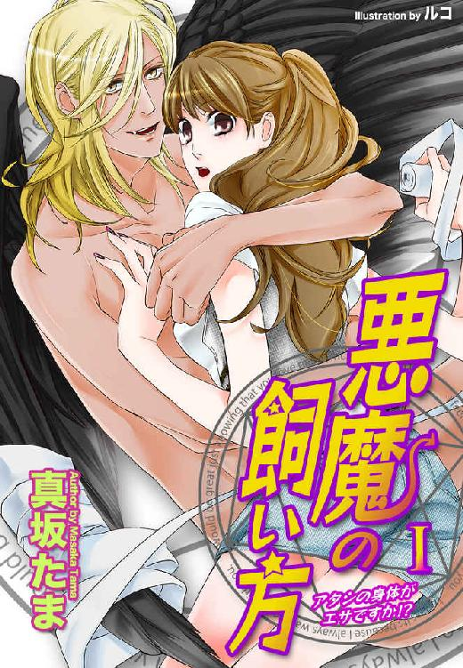
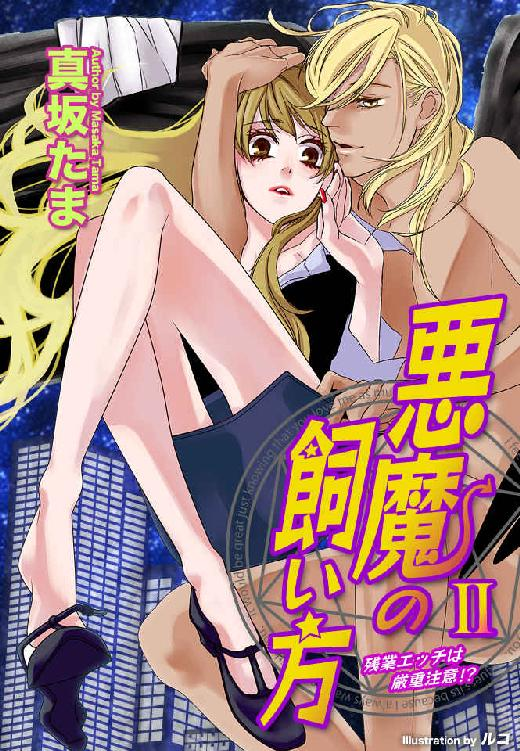
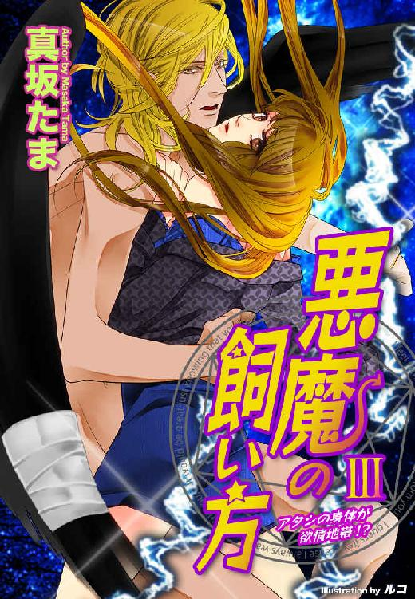
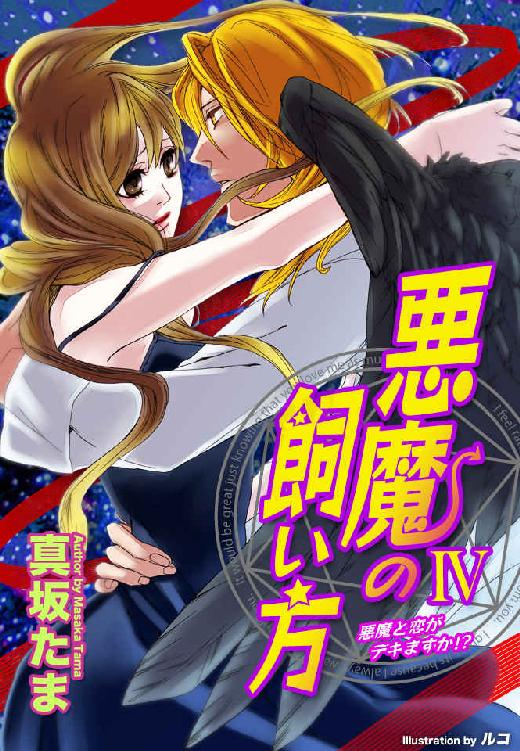
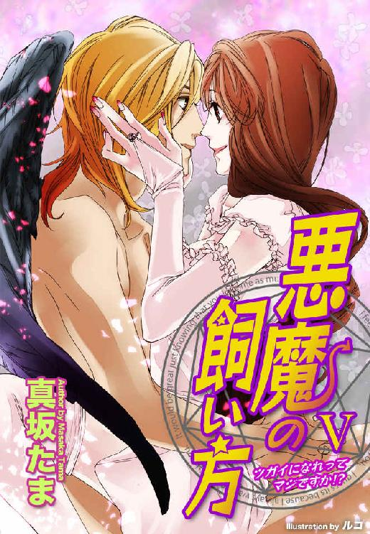
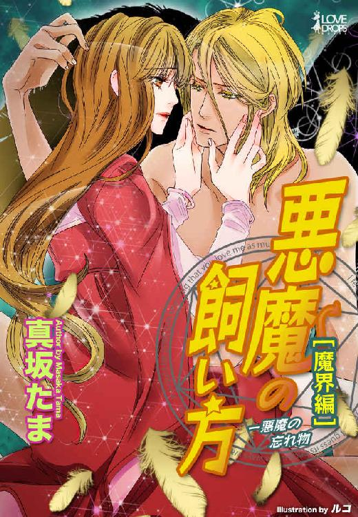
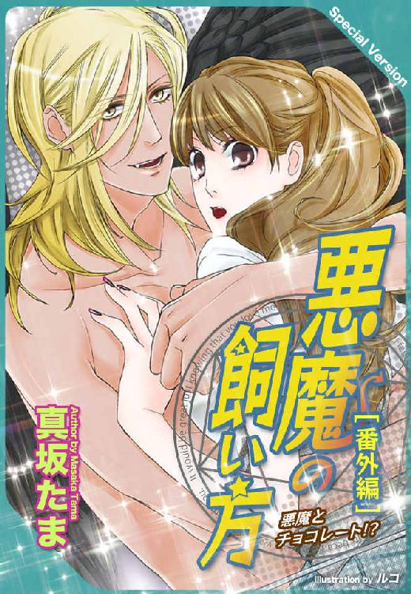

| 悪魔の飼い方 完全版 (らぶドロップス) | |
| 真坂たま | |
| 株式会社パブリッシングリンク (2013) | |

悪魔の飼い方─完全版
真坂たま

第一章 あたしの身体がエサですか!?
反省してます、おかあさん。
もういろいろと動物を拾ってくるのはやめます。
だってあたしの目の前で羽根をバサバサ広げて居座っているこの動物は。
紛れもなく「悪魔」だから。
その日、あたし、麻生美緒は、残業したので帰るのがいつもより二時間も遅くなった。金欠だったから残業はありがたい。それに一緒に残業したのが加藤くんだったしね。
加藤くんとは残業が終わった後、「ごはんでも食べようよ」って居酒屋さんに入った。
そこでよく食べてよく飲んで、「あーん、酔っちゃったあ」って可愛く言ってみたんだけど、
「明日も会社だからそろそろ...」
なんて逃げられてしまった。
あたしのどこに問題があるんだろう。やっぱりモツ煮込みを一人で食べちゃったせいかな、豚のミミをにこにこ食べちゃったせいかな。
ヒトナミな顔はしてるし、そりゃスレンダーとまではいかないけど一応くびれはあるし。バストだってぎりぎりＤカップだし。
年齢？ 今時二七歳って行き遅れとかじゃないよね。
いや、身長が一七五センチあって足のサイズが二四・五で加藤くんより二センチ高いせい...か、な...。
あーん！
そんなわけで一人とぼとぼと自分のマンションへ帰るわけだ。
あらら、湿っぽいと思ったら雨まで降ってきたじゃない。自宅まで一〇分ほど。あたしは走りだそうとした。その時。
なんだか妙なもの音を聞いた。
バサバサって大きな布を振るような音。
なんだろってコンビニと名刺屋さんの隙間をのぞいてみたら、そこに一羽のカラスがいた。
カラスはバサバサと地面に羽根を打ちつけながらそのあたりをぐるぐると回っていた。右の羽根がぺったりと広がって地面を擦っている。
あーあ、あれは折れているわ。
あたしは実家で文鳥を飼っていたのですぐにわかった。文鳥のほかにも巣から落ちた雀の子や、怪我したこうもりや、カラスなんかを拾って帰って手当したことがある。
東京へ出てきてからは、鳩を助けた。
だめなのよ、こう動物が弱っているのを見ると。
世話したくなっちゃうのよね。
あたしがそんな動物を持ち帰るたびにおかあさんは怒ったけど、しぶしぶ手当を手伝ってくれた。
だから今もためらうことなくお店の間の路地に入っていった。
「だいじょうぶ、大丈夫だからねー」
声をかけながら近づく。カラスは頭をあげてあたしを睨んだ。
「おとなしくして。手当してあげる。助けてあげるから」
近寄っていくとカラスは威嚇するように口を開け、そのままずりずりと後ろにさがっていく。カラスは知能が高いって言うけど、あとずさりするなんて初めて見たわ。
「お願い、そのままじゃ飛べなくなっちゃう。じっとしてて」
あたしは一生懸命カラスに話しかけた。するとカラスは羽根をバタバタさせるのを止め、あたしの顔をじっと見上げた。なんだかあたしの言葉を聴いているみたい。
「そう、いい子ね」
あたしは肩からさげていたストールを広げ、おとなしくなったカラスをそれで「えいっ」と包んだ。さすがにびっくりしたのかカラスは一瞬暴れたが、じきに抵抗をやめじっとした。
「心配しないで。ちゃんと治してあげるからね」
あたしはカラスの頭を撫でた。
「あれ......」
そのとき気づいた。カラスの頭から背中にかけて、まっすぐな金色の流れがあることに。
「ペンキ...とかじゃなくて金色の......羽根？」
あたしはカラスを自分のマンションの部屋に連れて帰った。
羽根をよく見てみると、折れているのは根本ではないことがわかってほっとした。これなら治りも早いかもしれない。
厚紙を切って添え木代わりにして包帯で包んだ。カラスは不愉快そうにその羽根をばさばさと動かしている。
折れた羽根は人間の骨と同じで結局こうやって固めて安静にしておくしかない。そんなことを言ってもカラスにはわからないだろう。
あたしは冷蔵庫をあけてカラスが食べられそうなものを探した。
「確か雑食よね...」
ハムにチーズにトマト......うーん、ヨーグルトとかは食べないよね。
皿に載せて出してみると、トマトをちょんちょんとくちばしでつついたあとはぷいっとそっぽを向き、ハムとチーズを器用にちぎって食べる。なかなかかわいい。
あたしはそんなカラスの様子をつまみに缶ビールをあけた。
「羽根が治るまで一緒にいようか......クロゥ。あたしは美緒よ」
カラスだからクロゥ。
安直ですか、そうですか。いいじゃん（完結）。
頭を撫でると目をつぶって手のひらにすべすべの頭部を擦りつけてくる。
カラスは賢いって知ってたけど、もうあたしが危険じゃないってわかって心を許しているみたい。
ペットは禁止だけど動物愛護だもの、いいわよね、治るまで。
「かわいいね。それになかなかキリッとしてるじゃない。くちばしが細いからハシボソガラスかしら。羽根に金色がまじってるなんて、はじめてみるわ。ＤＮＡ異常っての？ 突然変異？ 変なものでも食べた？ それにあんた...」
あたしはクロゥと名付けたカラスを抱き上げた。
「目も金色なのね。まるで蜂蜜みたいな色......」
透き通った琥珀色の丸い目。その奥にさらに金色の強い光の瞳が見える。
「きれいだわ...」
じっと見てると吸い込まれそう。
ビールを二缶あけたところで、あたしは地面を叩いていた雨の音がやんでいることに気づいた。窓をあければ雲に隠されていた月も出ている。
「わー、お月さま......」
雨上がりの空にくっきりと白い月。明日は晴れそうだ。
「よかったね、明日はいいお天気みたいよ、クロ...」
と振り向いてあたしは固まった。
だってそこにいきなり裸の外人さんがいたんだもの。
「な、な、な、なに！ あんた...ッ」
あたしは叫んだ。
その外人さんは浅黒い肌に長い金色の髪をして、細いけど筋肉のついたしっかりした体に長い手足、うわあ、股間でぶらぶらしてるそれ、隠してよ！ あ、やっぱり下も金色......って観察してんじゃない！
ちょっと待って。
確かにあたしは外人さんに知り合いはいないけど、外人さんだって人間よね。じゃああれなに？ バサバサと背後で動いているあれは───羽根ええええ？？？
なにそれ、どこのコスプレ大会？
しかもその羽根にはあたしが巻いた包帯の拡大コピー版みたいな布が巻き付いている。って......！
「ク、クロゥッ!?」
「あまり良い名だとも思えないが」
全裸の外人さんはあたしにずいっと顔を近づけた。あ、よかった日本語だ...ってそんな問題じゃない。
「真の名を渡すことはできぬからな、それでよかろう」
ち、近い、近い、近いって。
やだ、ちょっと、なにきれいな顔してんのよ。うっかりみとれるじゃないの。野生的なのに王子様顔っていうか、アジア系でも西洋系でも中東系でもない。鋭角的な輪郭線に整った顔。細い鼻筋、髪と同じ金色のまつげにかこまれた金色の目。
金色...の...目...って。
羽根もそうだけど金色ってありえない。この人、人間じゃない。やっぱりクロゥなんだわ。でもカラスが人間に......うそうそ、こんなこと。あ、あたし酔ってんのよ、きっと夢見てんだわ、あはははは......。
パニックになり現実から逃避しはじめたあたしを、その人外魔境はぐっと抱き寄せた。
あら、あたしより背が高い......いやいやいや、この状況を受け入れてどうすんのよあたし。
「おまえは俺を住処に招き治療を申し出た。客を招いたからには最後まで責任を持ってもらおう」
な、なんだか偉そうなんですけど。
「あ、あんた......な、なんなの!?」
「俺をなにかと問うか？」
男はどこか楽しげに言った。
「そうだな、おまえたち人間の言葉で一番わかりやすく言えば〝悪魔〟───というところか」
「ア......」
悪魔!?
でもそう言われれば金色の目も背中の黒い翼も納得できる。夢なのに説明してくれるなんてすごいわね。
「力が足らぬ───さきほどの食事には気がないのだ。よっておまえに補ってもらう」
さきほどの食事ってハムとチーズ？ 塩気がたりなかった？ 醤油かソースでもかけろってこと？ 補うってなによ、あたしを食べるの？ だから顔近い、近い、近すぎ......。
ちょ、ちょ、ちょ、ちょとおおおおお!?
キス！
いきなりキスされた。
なにこれなにこれなにこれ!! え？ 味見？ 味見なの？
すっごいイケメンにキスされてる。それどんな夢？ あたしってそんなに欲求不満だったの？
相手の舌があたしに絡む。ぎゅうっと密着した素肌はそれでも少し冷たい。
「んんん～～～～っ」
あたしはじたばたと暴れたが、相手の腕は離れなかった。
そのうち口の中を動き回るソレの舌があたしの舌をとらえ、からめ、吸い、撫でて、それで。
「ぁ......」
あたしの腕はだらりとさがった。身体に力がはいらない。腰から下がなんか痺れる。膝ががくがくして立ってられない......。
「は、あ...っ」
唇を離され倒れそうになったあたしは思わず相手にすがった。キスでこんなに感じたことなんてない。そりゃあキスなんて大学生の時につきあった彼以来ご無沙汰だけど、こんなに全身がぞくぞくするようなキスは初めてだ。
「おまえの気はなかなか上等だ」
きれいな顔で上唇をぺろりとなめて。
唇が濡れて赤い。セクシーっていうのはこんな顔？ 金色の目がますます輝いていく。
ふわりと体が浮いたかと思うと、あたしは床に寝かされていた。金色の男が覆い被さる。
「もう少し、食わせろ...」
やっぱり味見、味見なのねー！
はっと我に返った（遅い！）。
あたしは改めて暴れ出した。いくら夢だってそこまで節操なしじゃないわよ、大体、あたし、加藤くんが好きなんだし！ 告白もしないまま、悪魔なんかに食べられてたまるもんですか！
「いやっ、離して！ 変態！ 離して！」
「大人しくしろ.........」
暴れるあたしを畳の上におしつけて、悪魔があたしのあごを固定した。再び唇をふさがれ舌が伸びてくる。
「んうっ」
だけど舌は思いがけない優しさであたしにからみついた。さっきの気持ちよかったキスを体が覚えている。かあっと全身が熱くなった。
（だ、だめ、抵抗しなきゃ！）
そうは思っても。
このキス。キス、としか言いようがない。あたしを感じさせるためだけのようなキス。悪魔のキス。
「ん！」
悪魔の手があたしの下半身に伸びている。スカートをまくりあげて中に。
（えええ───？）
下着の上から触れられて、あたしは初めてそこがはしたなく濡れてることに気付いた。キスだけでこんなになるなんて信じられない。
「.........」
悪魔が唇を少し離し、間近で笑った。
「感じてる」
「そ、そんな」
「そのまま力を抜いてろ」
「え、きゃ、ぁあ.........っ」
悪魔の指が動く。下着の上から触られてあたしはのけぞった。
「な、なにするのよ、食うなら......食えばいいじゃないの、こんな」
嬲られてるんだわ。
じわっと涙が出てきた。
殺される前にこんな恥ずかしい真似をされるなんて、いっそ早く。
頬に冷たい感覚があった。目をあけると悪魔が舌を伸ばしてあたしの目許をなめている。涙、を？
「怖がるな、ミオ」
「な、」
あたし、こいつに名乗ったかしら。あ、そうか。カラスの時に。
「命はとらない。感じてろ、と言った」
「え.........？」
つぷりと指がもぐり込み、息が止まる。悪魔の頭が下がって胸の上に重みがなくなった。起きあがって逃げればいいのにそうできなかったのは、悪魔があたしのそこを.........。
「あっ、や...、」
湿った熱さで触れられて何をされたのかわかった。指なんかとは全然違うぬるりとした感触。
「やめてっ」
こんなこと初めての経験だ。今までそこに指で触れた相手はいたけど、いきなり、な、な、な、なめるなんて......！
こんなディープな。
ああ、でも気持ち、イイ、かも？
「アッ、あっ、だ、だめ...っ」
あたしは悪魔の金色の頭を抱え込んだ。目の奥がチカチカする。腰が、腹が、アソコが熱い。ぐるぐるって血液が体中から渦を巻いて一気に。
「ああっ！」
びくびくっと背中が浮いた。快感があたしの中を貫いていく。
「う.........」
虚脱。快感。罪悪感。解放感。それからいろんなごっちゃな感情におしつぶされて、あたしはぐったりと畳の上に伸びていた。
悪魔がゆっくり顔をあげる。満足そうに笑っていた。
「...残念だな、ミオ。おまえを食う前に月が隠れてしまった......」
耳元で悪魔が囁く。金色の目が、髪が、浅黒い肌がまるで水ににじんでいくように薄くなっていく。
快感の余韻の中で金色の悪魔の姿は消え、あたしは意識を失ってしまった......。
朝。
まぶしい光に目をパチパチさせ、あたしは今の状況を把握しようとした。
あたし、ベッドで寝てない。床の上で大の字だ。
しかも昨日の服を着たまま、メイクも落としてないし風呂にもはいってない。
ガバッと体を起こすと頭にズキン！ と痛みが走った。
（あちゃー、飲み過ぎ？）
手元を見るとビールの空き缶が二つ、転がっている。
昨日さんざん飲んでそのあと自宅でも飲んで。
だからあんなエロい夢を───。
夢？
あたしはおそるおそる部屋を見回した。
夢の中であたしは全裸の羽根の生えたイケメン───自称悪魔にキスされて触られて感じちゃって......。
でもそんな悪魔はいない。そのかわり、カラスが一羽、部屋の隅にうずくまっていた。
「カラスを拾ってきたのは───夢じゃないんだ」
あたしは呟き、カラスのクロゥの方へ行こうとして、そのまま倒れた。足を見ると下着が膝のところでひっかかっている。
「や、やだ！」
あわてて下着をひきあげる。そのとき、内側からあふれてきたものがあった。
「え」
まるで夢の続きのようにとろりと滴り、思わずふくらみに手を当てるとツキン───と腰から背中に快感が駆けあがる。
「う、うそ...」
あたしは前のめりになってドキドキする心臓をなだめようとした。
「あれは夢だって、夢...」
そんな夢で体が火照っているなんて。
もう一度クロゥを見たが、カラスはぐっすりと眠っているようで身じろぎもしない。
「ひどい欲求不満なんだわ。彼氏のいないストレスがここまであたしを追いつめているなんて」
あたしは服を全部脱ぐとお風呂に飛び込んだ。シャワーをザーザー出して頭から浴びる。
「もうこうなったら玉砕覚悟で加藤くんにアタックするしかないのかな」
向こうがあたしにまったくその気がないっていうことは気にしないでおこう。
シャワーを浴びると頭がはっきりしてきた。それと同時に昨日の夢も夢に違いないと思えてくる。だって常識的に考えてありえないし。
体をふいて部屋に戻るとクロゥが起きてて、バタバタと羽根をふるわせながら部屋の中を走り回っている。
「はいはいはい、どうしたの、おなかすいたの？」
あたしはクロゥを抱き上げると裸のままベッドに座った。
「あたし、今から会社にでかけるからおとなしくしてるのよ。食事はおいていってあげるからね」
そう言うとまるで聞いてるかのように小首を傾げた。
「いい子ね」
頭を撫でると金色の羽根に触れた。そういえばあの夢の中でもクロゥはゴージャスな金髪だった。
「おまえのせいで変な夢見ちゃったわ」
あたしは押入から畳んだ段ボール箱を取り出し、それを組み立てるとその中にクロゥを入れた。
「狭いけど、家の中であばれて羽根を痛めるとまずいからね」
ほかに昨日のハムとチーズ。
「そういえば塩気が足りないとか言ってたっけ」
ふと思い出してぶんぶんと頭を振る。
「いやいやいや、あれは夢だから、ありえないから」
それでもマヨネーズを添えてみたのはまあ原料は卵だしってことで。
着替えて化粧をしてバックを持って。
「じゃあ、行ってくるね、クロゥ」
小さく手を振るとクロゥが羽根を伸ばして振り返した。やだかわいい。
鍵を閉めて、あたしは「ん？」と首をひねった。
今何かおかしくなかったか...？
「っと、遅刻───！」
頭に浮かんだ疑問を無理矢理消去して、あたしはダッシュで会社に向かった。
「おはよう、麻生さん」
会社に着いたら加藤くんが声をかけてきてくれた。
「昨日は大丈夫だった？ 麻生さん、けっこう酔っていたよね」
「あ、うん。だ、大丈夫よ」
そのせいであんな破廉恥な夢を見た、なんて言えない。あたしは曖昧な笑みで答えた。
「いや、俺、あのあと反省してさ。女の人を独りで帰すなんてだめだよね。気遣いがないっていうか。だからカノジョの一人もできないんだよなあ」
加藤くんはフクヤママサハル似の無邪気な笑顔であたしに笑いかけてくれる。いやん、もうそれだけで許しちゃう......って待って、今、彼、大事なこと言わなかった？
カノジョ ノ ヒトリ モ デキナイ。
つまり、加藤くんには決まった人はいないってことよね！
実は昨日飲みに誘ったのは加藤くんの身辺をそれとなくさぐるためだったんだけど。
いきなり大ホームラン！
そうとわかれば積極的に......。
「ええー！ 加藤くん、カノジョいないのおおお！」
ってこれはあたしの声じゃない。同僚の矢島ちゃんだ。おまけに服部さんまで駆けつけてきた。
「毎回お弁当持ってきてるからてっきりカノジョがいるんだと思ってたわあ」
「いや、弁当は自分で作ってるんだよ、金ないからね」
「ええー、そうなの？ お弁当男子なのね」
加藤くんは矢島ちゃんと服部さんにキャアキャア言われてにこにこしている。人当たりのいい笑顔。でもこの笑顔で社内の女子のアタックを軽々とかわしているんだからけっこうあなどれない。
ちらっと加藤くんがあたしの方を見て目元だけで笑った。
ご め ん ね。
そう言っているような気がする。これって加藤くんがあたしを気にかけてくれているってこと？
そんな小さなことで幸せになったあたしは、すっかり昨日のエロい夢のことなんか忘れてしまった。
現実は忙しい。夢を反芻する暇もない。
終業時間が迫った頃、社内メールがぽーんと飛んできた。加藤くんからだ。
『麻生さん、昨日沖縄料理好きだって言ってたよね。新橋にうまい沖縄そばの店があるんだけど、行きませんか？ 沖縄そばって好き嫌いがあるからあまりつきあってもらえないんだよね。一度行きたかったんだけど』
ええっ!? これってデートの誘い？ 昨日、ミミガーを食べ尽くしたおかげで沖縄の神様が願いを叶えてくれたのかしら。
あたしはすぐに返信した。
『行く、行く！ 沖縄そば、大好きです！』
『じゃあ、駅で待ち合わせようか？ 俺は一五分ほど遅くなりますが、よろしく』
一五分でも三〇分でも！ 加藤くんから誘ってくれるなんてすごい進展じゃない？
そんなわけであたしは加藤くんと沖縄そばデート。沖縄そばって言う時点であまりロマンチックじゃないけど、食べ物の趣味があうっていうのは長くつきあうには重要よね。
沖縄そばのほかにも小皿をいくつもとって、オリオンビールに泡盛なんかを重ねて、ふたたびあたしは心地よく酔ってしまった。
「麻生さん、大丈夫？」
加藤くんの声が昨日よりやさしい。
「うん......酔っちゃったみたい......」
できるだけ下の方から上目使いでうるうる見上げてみると、加藤くんが「送っていくよ」と言ってくれた。
やった！ これで「じゃあコーヒーでも......」ということになって、加藤くんを家までお持ち帰りして、それで───。
あ。
あたしは重要なことを思い出した。
「か、加藤くん。鳥......って平気？」
「鶏肉？ うん、好物だよ」
「ううん、食べ物のトリじゃなくて、その───生きてる鳥なんだけど」
「生きてる鳥？」
「そう、文鳥とか、カナリアとか───」
「へえ、麻生さん、小鳥飼ってるのか」
「え、う、うん」
カラスを小鳥と呼ぶのは非常に抵抗があるけど。
「ほら、鳥の羽根アレルギーの人っているじゃない、だから......」
「うーん、俺は鳥を飼ったことないからわからないけど、大丈夫じゃないかなあ」
「そ、そう？ 実はうちに一羽いるんだけど......」
カラスを助けた話とかしてみようかしら。
へえ、麻生さんって優しいんだねって、好感度アップできるかしら。
でもカラスだしねえ。あまり好かれるような鳥じゃないし。
そんなことを考えながらあたしは加藤くんに送ってもらって家まで帰りついた。
部屋の掃除は二日前だけどそんなにホコリっぽくはないし、ゴミは───たまってたかしら。洗濯物......ああっ、たしか洗面所にやまもりだわ。帰ったらそっこう洗濯機に隠さなきゃ。
今朝バタバタして出かけちゃったからなあ。カラスのクロゥはおとなしくしていたかしら。あ、餌をやらなきゃ。
「あ、あのマンションの二階なの」
外からマンションの窓を指さすと加藤くんはにっこりした。
「そうか。じゃあ、俺はこのへんで」
「えっ！ ちょ、ちょっと待って！ 送ってもらってそのまま返すなんてそんなもったいな......じゃない、悪いわ。コ、コーヒーでも飲んでいってよ！」
あたしは加藤くんの腕を掴んだ。
「でも、女性の一人住まいにおじゃますることはできないよ」
「ひ、ひとりじゃないわ！」
「え？」
「さっき言ったでしょ、と、鳥がいるのよ、だから」
だからなんなのか。
我ながらおかしな言いぐさだ。
加藤くんはちょっとの間あたしの顔を見ていたが、やがてくすっと笑ってうなずいてくれた。
「じゃあ、コーヒーを一杯、ごちそうになろうかな」
やった！
「麻生さんのペットもみてみたいし」
う。
カラスですけど。
エレベータを降りて玄関の前で鍵を出して。
あたしの心臓がドキドキ言ってる。社内の女子好感度ナンバー１の加藤くんを自分の部屋に連れ込むなんて！
こんなの会社のみんなに知られたら即イジメだ。でも、このチャンスを逃すわけにはいかないわ！
あたしはドアをあけた。
「さあ、どうぞぉお───おおおお？？？」
バタン！
あたしはものすごい勢いでドアを閉めた。今見たものって───
「どうしたの？ 麻生さん？」
廊下で加藤くんが首を傾げている。
「い、いいいええええ。なんでも、なんでもないの！」
部屋の中に。
いたのだ、あれが。
あれ。
夢の中にいた、裸の金髪美形の外人男が。
背中に翼つきで。
えええええ？？？？
夢だったんじゃないの？？
今までのこのまともなＴＬ的展開はなんだったていうの？
あたしと加藤くんの、リアルで等身大で世の中の携帯小説読者の女子の共感を呼ぶ、永遠のテーマの恋愛ものだったんじゃないの？
「麻生さん？」
加藤くんの声に我に返る。あたしはドアに背中をはりつかせてひきつった笑みを浮かべた。
「あ、ご、ごめんなさい！ あの、きょ、今日はあの、こ、そう、コーヒー切らしていたんだわ！」
あたしは加藤くんの背中を押してエレベータに向かわせた。
「ええ？ あの、麻生さん？」
「ご、ごめんなさい！ というわけで今日は帰って！」
「いや、俺、別にコーヒーは......、あ、そうだ。ペット見せてよ、麻生さんの小鳥」
「こっ、小鳥はあの、確かに羽根があるんだけど、そうじゃなくて、えっと、その、」
ぐいぐいとあたしは加藤くんをエレベータの箱に押し込んだ。
「ごめんなさい、送ってくれてありがとう！」
「あ、麻生さん？？」
扉がしまった。
あたしはぜーはーと息をついでエレベータの扉にもたれかかった。
なんてこと！ せっかく加藤くんといい感じになれそうだったのに、なんで部屋の中にあの夢の中の悪魔が。
悪魔。
そうだ、あれが夢じゃないとしたら、じゃあ昨日のアレも......。
カアーッと全身が熱くなる。あの快感を思い出すだけで下半身がじん...と痺れた。
あたしはおそるおそる部屋に戻るとそっとドアを開いた。
いる。
裸の羽根つき悪魔が、部屋の真ん中であぐらをかいてＴＶを見ている。
しかもその周りには食い散らかしたと思われる冷蔵庫の食材とビールがころがって。
あああっ！ ビールがこぼれてあたしのお気に入りのラグ汚しているじゃないのよ!!
「いやあああっ！」
あたしは部屋に飛び込んでビールを拾い上げ、タオルでラグを拭きまくった。
「なにしてんのよ！ 人の部屋で勝手に！」
怒鳴るあたしの頬にひやりと冷たいものがふれた。悪魔の手だ。
「遅い」
振り返ると悪魔がしかめっつらであたしを睨んでいる。
「どこへ行ってた。なぜこんなに遅くなった、ミオ」
「な、なによ！ あんたに文句言われる筋合いはないわよ、あんたはあたしのおかーさんですか！」
「客をこんなに待たせるとはなにごとだ」
「なにが客よ！ だいたいあんたなんなのよ！」
「昨日言ったはずだかな」
金色の目が間近で光る。あ、やっぱりすごいきれいな顔。
「夢だと思ってたのよー！ 本当に本物の悪魔だって言うの？ 百歩譲って夢にしといてよー！」
「あいにくだったな」
悪魔が冷たい笑みを浮かべる。
ああ、これは現実。
あたしはカラスを助けたつもりで悪魔を拾ってしまったのだ。
「そうだ。おまえは俺を助けた。手をさしのべたからには最後まで責任を持て」
「そ、そんなの」
「他者の命に関わるというのはそういうことだ。安易な情けを授けるくらいならその手で殺せ。それが自然の掟だろう」
悪魔の金色の髪が一筋、あたしの頬に触れる。シャララと音がしそうなくらいのきれいな金の髪。
こ、こいつ、くやしいけど抵抗できないくらいきれいなのよね。
「し、しらないわよ！ そんなの。ちょっと、手を離してよ！」
悪魔はおとなしく手を離した。あたしは彼から距離をとり、ドキドキしている心臓をなだめようとした。うう、あたしの穏やかで平凡なＯＬライフがいきなりファンタジーな世界に......。
「あの男はなんだ？ ミオ」
頭をかかえるあたしに悪魔が聞いてきた。
「え？ あ、か、加藤くんよ。会社の同僚」
「おまえの餌なのか？」
「な、ち、違うわよ！ 失礼なこと言わないで！」
「餌でもないものを巣に連れ込もうというのは、ツガイの相手ということか？」
「ツ、ツガイって......違うわよ、そうなればいいなーとは思うけど......って、なによ、あんたには関係ないでしょ！」
悪魔の表情が険悪になる。さっと部屋の中の気温が下がった気がする。あたしは思わず腕を抱いた。
だが悪魔はすぐに興味をなくしたように視線をＴＶの方にむけた。
画面の中ではＴＶキャスターが政府の支持率がどうのこうのと言っている。理解できているのだろうか？
あたしはなんだか疲れてしまって、冷蔵庫の中から缶ビールを取り出した。ああ、六本あったのにもう一本しかない。
一口飲むと気持ちが落ち着いた。
「......それで悪魔さん。そもそもどうしてコンビニの裏なんかにいたの？ そのけがはどうしたの？ 悪魔ってほんとにいたのねえ。ねえ、魔法とか使えるの？」
助けてしまったからには責任をもたなければならない。よし、わかった。責任はもとうじゃないの。だけどそのためには互いの理解と歩み寄りよね。
というよりは好奇心いっぱいであたしは聞いた。しかし悪魔はそれにチラリと流し目を寄越しただけだった。あ、なんかすごいバカにした目つき。
「なによ、悪魔って言えば魔法でしょ？ それともカラスに化けるだけなの？」
くるり、と悪魔が身体ごとあたしの方を向いた。う、その股間のもの、かくしてほしいんだけど。
「ミオ、おまえは俺を招いた主だ。主の質問には礼をもって応えよう」
「あ、はい」
悪魔のまじめな態度にあたしも思わず背筋を伸ばした。
「俺があの場所にいたのは怪我をしたせいだ。俺が怪我をしたのはミスをしたせいだ。悪魔が実在するかどうかはおまえの目の前の現実を見て自分の頭で判断しろ、かぼちゃがついているのでなければな。魔法は、使える」
「......」
えっと。
なんだかごまかされた感じがするけど。
答えているけど答えてないような気がするんだけど。
「あの、じゃあ、魔法ってどんなのが使えるの？ この部屋をお花畑にするとかできるの？」
「部屋を花畑にするには土が必要だが、この部屋に土をつめこんでいいのか？」
「あ、それは困る。じゃあ、この部屋いっぱいの１万円札とかだせる？」
「出せるが、札というのは１枚ずつ違うものではなかったか？」
「う、うん、そうよ」
「そうするとこの部屋いっぱいの１万円札を出すためにはどこからかその分だけの１万円札を奪ってこなければならないが、それでいいか？」
「え？ そ、それはだめよ、泥棒になっちゃうじゃない！ じゃ、じゃあ、あたしの身長を一六五センチくらいに小さくするっていうのはどう？」
「......足を一〇センチ切り取ることになるがかまわないのか？」
「じょ、冗談じゃないわよ！」
なにこれ。魔法って魔法ってこんなに不便なものなの？ なんでも望みが叶うんじゃないの？
「世界は調和がとれている。魔力を行使するさいはその調和を乱すことなく行われなければならない。何かを出現させれば同じだけのものを排除する」
悪魔はまるで教師のようにあたしに言ってきかせた。
「よく悪魔が望みを叶えるために人の魂を要求すると言われているのもそのためだ。魔力で失ったなにかを人の命であがなうのだ。大概のしろものはヒトの命の力で購える」
「そんなの......」
「安心しろ。俺がおまえのもとにいるのもそう長い間ではない。翼を治せば出ていってやる」
悪魔はまたそっぽを向いた。
「出ていくって、どこに行くのよ。悪魔の国？」
「......国への道は今は閉ざされている」
「え？」
「俺たちの世界とおまえたちの世界はそうたやすくつながるものではない。俺は無理矢理この世界に呼び出された。戻るには大きな力が必要だ」
「え、じゃあ、どうするのよ」
「おまえが気にすることではないだろう」
悪魔の横顔は無表情だった。視線はＴＶに向いていたが、その目はどこか遠くを見ているようだった。
悪魔の世界。
あたしは想像してみようとしたが無理だった。
そこはどんなに遠い世界だろう。その場所から無理矢理つれてこられた？ なじみのないヒトの世界に。
怪我をして、ひとりきりで。
それはきっと心細いに違いない。尊大な態度はとっているけど、あたしが帰ってきたとき「遅い」って文句言ったのはもしかして寂しかったのかしら。
「......クロゥ」
小さく名前を呼んでみると、悪魔が振り向いた。
「あたしが勝手につけた名前だけど、いいの？ こんな適当な名前で」
「かまわない。俺たちの真の名はヒトには告げてはいけないからな」
「なんで？」
「名を渡せばその名が俺たちを縛るからだ。真の名で俺たちを使役する相手に抵抗することはできない」
「そ、そうなの？ あんたたちもけっこう大変なのね」
「ふ、ふ」
悪魔が笑った。金色のまつげを閉ざして。
「なにがおかしいの？」
「いや、そんなことを言われたのは初めてだったのでな。ヒトは俺たちを無理矢理呼び出し、命じるだけだったからな」
なんだか恥ずかしくなった。そういえばあたしもさっき魔法を使ってみせて、なんて簡単に言っていた。
人間にとって悪魔とか神様とかって願いを叶えてもらうだけのもの、と思ってないかしら？
でも、いくら行くところがないって言っても、悪魔に居座られていては困る。やっぱり羽根が治ったら出ていってもらうしか。
「腹がへった......」
不意にクロゥが顔を上げて呟いた。
「あ、そ、そうか。餌......じゃない、なにか作ろうか？ あたし沖縄そば食べてきたから......って、」
あたしは床の上を見回した。ちらかった食材。
「───さんざん食いちらかしといてなに言ってんのよ！」
悪魔は不満げな顔をした。
「人間の世界の食い物は気が足りぬ」
「だから塩でも醤油でもかければいいでしょ......んむっ！」
唇をふさがれた。
だめ、このままじゃ昨日の夢の二の舞。
違う、あれは夢じゃなかった、現実で、あたしに与えられた快感も刺激も現実で。
「んっ、......ふ、ぅ...っ」
たかがキス。キスなのに体が痺れる。悪魔の舌がうわあごをなぞると背筋を優しくなでられたみたいにのけぞってしまう。
「や、やめて」
「なぜだ？ 昨日おまえは感じていたはずだ」
「だって......だけど......！」
ぐっと腰を引き寄せられ、広い胸板に抱きしめられる。悪魔の冷たい肌があたしの熱であたたまっていく。
くちゅ、ちゅっと湿った音をたてて何度も角度を変えて口づけられ、あたしの意識がふわりと浮かぶ。
「い、や......」
悪魔は立ったままあたしのスカートのすそを手をいれ、下着を下げた。じかにヒップを包まれ、悪魔の手の大きさを知る。指先が......あそこに触れた。
「いや...」
濡れてしまっていることを知られるのが恥ずかしい。あたしはこの悪魔を認めていない。レイプされているのと同じなのに、キスだけで感じてしまっているなんて、どうして女のからだってこうわかりやすいの？
「ふ、ふ」
身をよじるあたしを悪魔は楽しそうに見つめた。
「快感を罪悪と思うか？ その感情がさらにおまえの気をうまくする。ただ淫らに求めるだけの女とは違うな」
「なに、を......あうっ！」
悪魔の指があたしの中にもぐりこんだ。ぐるりとまわされ、あたしがあげた声が甘くなる。
「そうしめつけるな」
「ば、か、言ってんじゃ...ないわ、よ！」
「まだ抵抗するか。気の強い女だ」
「あ、あんたなんてカラスのくせに！」
「月が出ていない間はな」
「つ、月？」
「魔力が足りぬからな。今は月の力を借りてこの姿を保っている」
悪魔は言いながらさらに指を増やした。ズキリ、と快感の固まりがあたしの中をつきあげる。
「や、やめて、お願い！」
「そうか？ ここは離すなとしめつけてくるぞ」
「う、うそよっ！」
悪魔は顔をさげてあたしの首筋に唇を這わせた。チリリ、と軽い痛みが肌を震わせる。
「あ、ああ...」
片足をもちあげられ、そこに悪魔の熱くて堅いそれが押し当てられた。
「この世界の気はよどみ、沈んでいるが、おまえの気は上質だ」
なにそれ、ほめているの？
「俺を救ったのがおまえだったのは運がいい」
あたしは世界一不運よ！
悪魔はもう一度あたしにキスをした。優しいキス。今からあたしをレイプしようとしているとは思えないほどの、優しい───。
ああ、もうだめ。ぐっと、熱くて固いモノがあたしの中をつきあげようとした時。
「───くそ、またか。月が......」
悪魔のいらだたしげな声がして、あたしを支えていた二つの腕と胸板があっと思う間に消えてしまった。
「きゃっ、あっ！」
あたしは足首に下着をからませたまま、床の上に放り出された。
「いったぁ～」
快感にうずく下半身をそのままに、顔をあげてみれば、カラスが───頼りなげにうろうろと床の上を這い回っていた。
あたしは段ボール箱を持ってゴミ収集所の前に立っていた。マンションの下にゴミを出す場所があるのだ。
箱の中からはゴソゴソと音がして、ときおり、バスンと箱に当たる音もする。
「───やっぱり生き物をゴミに出すのはまずいわよね」
あれからあたしは逃げ回るカラスをつかまえ、タオルでぐるぐるまきにして段ボール箱につめて厳重に布テープで封をして。
「誰か開けちゃったら困るし」
どうしよう、と迷っていると同じマンションの住人らしきおばさんがやってきた。あたしの持っている段ボール箱をじろじろ見つめる。
「粗大ゴミの収集は来週ですよ」
「え？ あ、はい」
「それに段ボール箱は開いてださなきゃ。あら、ちょっと、なにかその中から音が───」
「え、あ、な、なんでもないんです！」
あたしはあわててゴミ置き場を離れた。
羽根が治ったら出ていってもらおう、なんて甘かった。レイプ魔と住んでいるようなものなのだ、考えたら。
いくら相手がハンサムで美形で金髪だとしても、悪魔なのだ。しかも腹がへったと言っては襲ってくるエロ悪魔。
空腹とセックスにどんな関係があるのよ、大体！
キスも愛撫も気持ちいいけど、そんなのに流されちゃまずいでしょう。あたしには加藤くんがいるんだし。いや、そりゃまだ恋人同士とかじゃないけど。
とにかくあたしにはファンタジーもライトノベル的な世界も用はないの。ごくふつうの恋愛漫画、オフィスラブコミックの世界に戻るのよ。
そんなことをわめきながらクロゥを段ボール箱につめこんで、あたしは彼を捨てる場所を探してさまよっている。だけどどこに捨てても問題が起こりそうで。
「どうしよう」
うっかり助けたばかりにこんな面倒に。だって、誰だって助けたカラスが悪魔だなんて思わないわよね。
───安易な情けをかけるくらいならその手で殺せ。
クロゥはそう言っていた。たしかに最後まで責任をとれないなら手を出すべきではなかったのかもしれない。だけど、だけどさ。
あたしは段ボール箱をかかえたまま当てもなく歩き回った。
いつのまにか橋まできていた。下には川が流れている。
けっこう大きな橋だが、この時間には人影も車通りもない。ぽつんぽつんと等間隔に橋につけられた街灯だけが辺りを照らしていた。
あたしは橋の真ん中あたりでぼんやりと黒い流れを見つめた。
このまま段ボール箱を放り出してしまえば、川があたしのもとから悪魔を流し去ってくれる。
でもそれでいいの？
助けたものを、もう一度見放して殺すの？
たとえそれが変態すけべ悪魔でも、あたしに命を奪う権利はあるのかしら。
「ああっ！ もう！」
あたしは段ボール箱を地面に置いて橋の欄干につっぷした。
「───おじょうさん」
どのくらいそうしていたかわからない。
ふと、年老いた声に呼ばれ、あたしは頭を上げた。目の前に声の通りのおじいさんがいる。
「どうされたんです、気分でも？」
「あ、いえ、別に......だいじょうぶです」
あたしは曖昧に笑みを浮かべた。おじいさんはうなずくと、視線をあたしの足元に向けた。
「あの、その箱な」
はっとあたしは地面に置いた段ボール箱を見た。
「さっきからごそごそ音がしておるが、中になにか生き物がはいっておるのかね」
「え、あ......」
確かにごそごそと音がしている。中でクロゥが暴れているのだろう。
「あの、カ、カラスを拾って───けがをしてたので───」
「カラス？」
「ええ、でもマンションでカラスを飼ってはいけないのでどうしようかな、と悩んでいたんです」
「ほう」
嘘じゃないわよね、表面的には。
「それならどうじゃ？ 私がそのカラスを引き取ろうかね」
「ええ？」
「うちは一軒家だし、私は動物が好きでな。カラスの面倒くらいみられますぞ」
「え───」
このカラスを、悪魔を、引き取ってくれる？
「あの、でもこのカラス、ただのカラスではなくて......」
悪魔なんです。
なんて、言えるわけがないし、信じてもらえるわけもない。だけど、コレを引き取ってもらえるなら。
悪魔さえいなくなればあたしはまた加藤くんを部屋に呼ぶこともできるし、月が出るたびに悪魔に襲われなくてすむ。望んでいた平穏な生活だ。
クロゥだって相手がおじいさんなら襲おうなんて考えないだろう。
あたしが黙っているのをどう受け取ったのか、おじいさんは腰をかがめると、ひょいと段ボール箱を持ち上げた。
「では、もらっていきますぞ」
「あ───」
おじいさんは背中を向け、スタスタと歩きだした。あたしは呆然とその後ろ姿を見送った。
これで。
これでいいのよね？
悪魔はあたしの手から離れた。
クロゥだってカラスの振りさえしていれば、やがて翼は治って飛び立てる。魔界へ帰ることができる日まで、この世界のどこかに隠れて。
「───」
だけど。
あたしの足がおじいさんを追いかけていた。あたしの手がおじいさんの肩に触れた。あたしの口が言葉を発していた。
「あ、あの、すみません！」
なにを言おうとしているのだろう、あたしは自分自身に驚いていた。
「あの、やっぱりそのカラス、返してください」
橋のたもとであたしはおじいさんに追いついた。おじいさんは振り向いて、ジロジロとあたしを見つめた。
「これは私がいただいたものと思っておりましたが」
「ええ、はい、そうなんです。そうなんですけど、やっぱりあたしが助けたんです。助けた命には最後まで責任をもたないと」
あたしはぺこぺこと頭を下げた。
「ほんとにすみません。あたしがしっかり世話をしますんで、どうか返してください───」
おじいさんが持つ段ボール箱の中で、ぼすんばたばたとクロゥの暴れる音が大きくなっていく。
「返すわけにはいかんな」
頭をさげるあたしにおじいさんの声が冷たく降ってきた。え、と顔をあげるとおじいさんはにやにや笑っている。
このおじいさん......こんなに口が大きかったかしら。それに、どうして目玉が片方飛び出しているの？
「召還したはいいが逃げ出して行方を追っていた獲物だからな」
ごろり、と飛び出していた目玉が地面に落ちる。口がペリペリと耳まで開いた。
「え、あ、ちょ......」
おじいさんの姿がぐんっと大きくなった。はげた頭が盛り上がり、つきやぶって、あれは角!? ひれのような大きな耳と、服がやぶれてごつごつとした身体が現れる。ばしんっと地面を打つのは太い尻尾？？？
「え え え え ーーーっ!!」
あたしの目の前にまさしく悪魔、というような化け物が立っていた。これにくらべたらクロゥなんて妖精よ！
「な、な、なにあんたーーー！！！」
月のない夜の街、橋の灯りをうけて黒々と影を落とす化物。パクンと裂けた口からだらだらと滴る涎、それはコンクリートに落ちるとジュウッと音をたてて穴をうがった。
身長は二メートルくらいなんだろうけど、全身がゴツゴツしていて鎧をまとったゴリラのように見える。目は顔になくて胴体についた大きな目玉がぎょろりとあたしを見下ろした。
「我が主が召還したあと、こいつは逃げ出した。追いかけて手傷を負わせたが逃げられてしまった......ここで出会えるとは千載一遇の機会だ」
悲鳴はのどにはりついた。足がすくんで動けない。でもあたしはおなかに力をいれて、懸命に化物を見上げた。
「ク、クロゥの羽根を折ったのはあんたなのね!?」
「クロゥ？ こいつの名か、なるほど」
化物はチラリと自分の片手に抱えた段ボール箱を見た。
「そうだ。今度は逃げ出さないよう翼を引きちぎってやる」
「な、なんてこと言うのよ！」
ああ、どうしよう、あたしのせいだ、あたしが優柔不断なせいでクロゥが。
化物は胸が悪くなるような笑い声をあげながら背を向けた。
だめ、このままじゃクロゥが殺されちゃう。
あたしの目が地面の上にころがるあるものを見つけた。そうだ、これだ！
あたしは飛びつくようにしてそれを拾うと、化物に叫んだ。
「こっ、こっち見なさいよお！」
化物は肩越しに振り向いた。その目にあたしはビニール傘からむしりとって、十字に組んだ傘の骨を見せつける。
どう？ 神の怒りにひれふしなさい！
「......」
「......」
「......なんだそりゃ」
化物が気の抜けた声を出した。えええ？ 十字架効き目ないの？ 吸血鬼にしか効果ないんですか？
「バカめ。そんなもの何の役にもたたんわ。だがふざけた真似にはお仕置きが必要だな」
化物がさっと腕を横に払った。そのとたん、体中がバラバラになるような衝撃を感じて、あたしは地面にはね飛ばされた。
「あうっ！」
い、いたい！ 腕が当たったわけでもないのに、全身が腫れ上がったみたいに痛い！
「おまえのようなザコを食っても、我が主は見逃してくださるだろう」
目の前が翳ったのは化物があたしの方に身を屈めたためだ。あたしは伸ばされた化物の手のひらに、とっさに持っていた傘の骨を突き出した。
「げっ！」
渾身の力をこめたそれは化物の手のひらをわずかに傷つけた。化物はのけぞり、片手から段ボール箱が落ちた。
「クロゥ！」
あたしは低い体勢で化物の足下に落ちたその箱を拾い上げた。
「きさまっ！」
化物が怒鳴る。段ボール箱のガムテープを無理矢理引き裂き、あたしは思い切りそれを遠くへ放った。
その瞬間。
「きゃあっ！」
化物の手があたしを捕まえ、宙につり上げる。
「人間のくせに生意気なまねを」
「は、はなしてえええっ！」
「首をへし折ってやる！」
「だ、だれか！ たすけて！」
バチバチッと化物の背後で橋の照明がスパークした。はっとした化物が振り返る暇もなかった。そのまま白い光が化物の背中を直撃する。
「ギャアッ！」
悲鳴をあげた化物の手からあたしは転がり落ちた。そのあたしの目の前にバサリ、と黒い翼が広がった。
「ク、クロゥ！」
カラスが。
小さなカラスがまるであたしを守るみたいに両方の羽根を広げて化物の前に立ちはだかっている。
「な、なにしてんのよ！ せっかく逃がしたのに！ 逃げなさいよ」
あたしは仰天して叫んだ。月はまだ出ていない。クロゥはカラスのままの姿だ。そんな姿で悪魔に向かっても。
「ハッ、ハハハッ！」
ああ、ほら笑われているじゃないの！
角の生えた化物はカラスの姿のままのクロゥを見てあざ笑った。
「そんなちっぽけな姿でどう戦うというのだ。貴様は翼も使えないではないか！」
「やってみなければわからない」
カラスのくちばしからクロゥの声がした。
ふたたび橋の照明から白い光が伸び、化物を襲う。だが化物はこんどは余裕を持って身を交わした。あ、あの電気、クロゥが操ってたの!?
「ふん、魔力も半分程度ではないか」
「おまえなど半分以下の力で充分だ」
パチパチと他の街灯もついたり消えたりしている。どうやら電力をこのへんの電柱に集中させているようだ。
「ミオ」
クロゥが落ち着いた声で言った。
「逃げろ、人間のいるところまで走れ」
「な、なに言ってんの！ 一人でどうするのよ！」
「おまえは俺を助けた。恩は返す」
「あっ、あたしは！」
あんたを捨てようとしたのよ───！
言葉にできないあたしにカラスは小さな頭を振り向かせて言った。
「人間にしてはよくやった。だがもう───逃げろ」
化物が爪の生えた腕をふるう。あたしとクロゥは再び衝撃を受けて弾きとばされた。
「きゃああっ！」
ドカンッと橋げたに打ちつけられ、息もできない。クロゥは折れた羽根をひきずって再度あたしの前に立った。
「クロゥ......」
こんなちっぽけなカラスの姿で。
どうしてあたしを守れると思っているのかしら。しかもあなたを捨てようとしたあたしなのに。
再びクロゥがはね飛ばされ、その姿が闇に消えた。化物がニヤニヤ笑ってあたしに手を伸ばした。髪をつかまれひきずられた。
「出てこないとこの女を喰うぞ！」
化物の胴体にある目があたしを見つめる。あたしはそこに映った自分自身を見た。
「あんたなんかに食べられたくないわ！」
「ク、ケケ。イキがいいな」
そうよ、どうせ食べられるんならいつもおなかをすかせているクロゥに食べられる方が百倍マシよ！
「クロゥ！」
あたしは姿の見えない彼に叫んだ。お願い、理解して！
「雷は避雷針に落ちるのよ！！」
言いざまあたしは左手にもっていた傘の骨を、渾身の力で化物の大きな目の中に突き入れた。
ブシュッと湿った音がした。
「ぎゃああっ！」
化物があたしを放り出す。その瞬間、橋のすべての照明が火花を散らし、白い光が四方八方から化物の目に突き刺さった傘めがけて飛び込んできた。
「が あ あ あ あ あ っ ！」
化物の頭部が光に包まれ弾けた。全身が炎に包まれる。
「......やった......」
クロゥがあたしの言葉をわかってくれたのだ。
目の前がぐるぐる回った。あ、気絶するんだ......。
コンクリートの冷たい地面に倒れる前に柔らかく抱き止められた。必死に目をあけるとそこにはきれいな顔があった。
「......クロゥ......」
ヒトの姿になった彼だ。
「ミオ」
金色の髪の後ろに月が見える。
クロゥがなんだか優しい顔をしている。いつも冷たく無表情なのに。やっぱりきれい。もっと見ていたいのに、ダメだわ、もう......。
あたしは夢を見ていた。
きらめく都会の灯りが足下にある。振り仰げば空には輝く星。
天と地を光で満たす、そんな夜の中を黒い翼に金の髪をなびかせた悪魔に抱かれて飛んでいる。
なんてロマンチック......。
目がさめたら全身がずきずきと痛み、起きあがることもできない。
「ナニコレ......」
声もガラガラに嗄れていた。
どうしたんだろう、あたし。昨日なにがあったんだっけ。昨日───？
「......！ クロ......ッ！」
ガバッと起きあがるとさらに激痛が襲った。せ、背中がびきびき言う～～～っ！
バサリ、と音がして、黒い羽根のカラスがあたしの膝の上に乗った。
「クロゥ......」
「ザントの衝撃波を受けたんだ。今日は動けまい」
カラスがくちばしをあけ、人間の言葉で言った。
「衝撃、は......？」
「骨や内蔵は無事だったが筋肉にダメージを受けている」
クロゥは淡々と言うが、あたしは昨日のことをどんどん思い出して、全身に鳥肌を立てていた。よく生き延びたものだ。
「......あんたは？ クロゥは大丈夫なの？ 何度も弾き飛ばされていたけど」
「俺をなんだと思っている。ヤワな人間とは違う」
そうですか。
ため息をつき、カラスを見る。黒い羽根がつやつやと太陽の光に輝いていた。背中の金色の一筋も。
「クロゥ......あんなのに呼び出されちゃったの？」
「ザントはただの使役悪魔だ。俺を呼び出したのはもっとタチの悪いやつだ」
「ああいうのに追われて怪我とかさせられちゃったんだ」
カラスはぷいと横を向いた。
「ちょっと油断しただけだ」
背中を向けたまま毒づく様子が、なんだかすねているようでかわいい。
「ミオ、窓を開けられるか？」
「窓？ あ、うん」
あたしは手を伸ばすとベッドの横の窓をあけた。二階だから景色はたいしたことないが、日差しとさわやかな風がはいってくる。
カラスがひょいと、あたしの膝から窓の桟へ移動した。
「じゃあな」
「へ？」
カラスはバサリと羽根を広げた。羽根にはまだ包帯が巻き付いたまま。
「ちょ！」
飛び立とうとするクロゥをあたしはあわてて捕まえた。ぎゃっ、腕を伸ばすだけで痛い！
「いっ......たたた。いや、ちょっと待ってよ、どういうこと、じゃあなって」
カラスはバサバサと羽根を振った。
「離せ」
「いやよ、どこへ行くのよ！」
「俺がここにいるとまた昨日のようなことがあるだろう。だから出ていく」
「な、なに言ってんの、まだ怪我も治ってないでしょう！ 一度助けた命は最後まで責任持てって言ったのはあんたよ!?」
「おまえは十分責任を果たした。これ以上は無用」
なにかっこいいこと言ってんのよ。悪いけどカラスの姿で言われたって迫力ないんだからね。
「あたしは確かにヤワな人間よ！ あんたを捨てようとしたり、酔っぱらったり、どうしようもない人間だけど、あんただってまともな姿になれないじゃない！ でも、一緒にあいつやっつけたじゃない！ 人間はね、弱いけど、力をあわせるってことができるのよ！」
クロゥは振り向かない。
「それに、人間は殺されるってわかっている相手をはいそうですかって見逃すことなんてできないのよ！」
「俺は殺されやしない、そんな弱くない」
「じゃあここにいて、あたしを守って」
「......」
「一緒ならできること、あるわよ」
カラスは身動きするのをやめた。ゆっくりとあたしを見上げる。
「しょうがない。おまえには助けられた恩があるからな。俺が守ってやる」
「......そうよ」
「人間は弱いし臆病だしな」
「そ、そうね」
「おまえには俺の本当の強さも見せてないことだしな」
いちいちいらっとするわね、もう。
「あ、でもひとつだけ、約束してほしいの」
「なんだ」
「......あの、アレやめてよね」
「なんだ？」
「その、......いきなりキスしたり......しようとしたりするの」
「なんだと？」
「あ、あたしには好きな人がいるのよ、なのにあんたとそんなことしてたらおかしいでしょ？」
カラスは笑った。カラスの笑い顔というのがあればだが。
「おまえは別にあの男とツガイではないのだろう」
「そ、そりゃそうだけど、でもそうなりたいって思ってるのよ！」
「それにあれは生殖行為じゃない。おまえの性欲を食ってるだけだ」
「せ、性欲って、なによ！」
「人間の欲望や怒りや憎しみ、強い感情が俺たちの力になる。おまえは怒りや憎しみに縁がなさそうだったからな。あれがてっとりばやい」
「な、なに勝手なこと言ってるのよ！」
あたしはカラスを両手で掴み上げた。
「怒りなら今たんとくらわせてやるわよ！」
カラスは金色の目でじっとあたしを見つめ、それからその目を細めた。
「だめだな、その程度の怒りでは......ソースにもならん」
あたしはカラスから手を離した。
「じゃあその......つまり、えっちするのがあんたのご飯だっていうの？」
「人間の世界の食べ物は腹は膨れるが気が足りない」
「気って何度も言ってるけど......」
「生き物の感情や力のことだ。だがおまえを抱けば」
カラスは黒い翼の先であたしの頬に触れた。
「十分に満ち足りる。しかしおまえがいやだというなら仕方がない」
「やめてくれるの？」
「他の方法で我慢しよう」
「ありがとう！」
夜まで休んでようやく体の痛みは薄れてきた。クロゥもなんのかんの強がってはいたが、部屋のすみでおとなしくしていたのでけっこうダメージは受けていたのだろう。
窓の外に大きな月が上っていた。
つまり。
振り向くとそこにあたしの悪魔がいた。大きな翼を広げて金色の髪をなびかせて。
「え、えっと、食事でもつくろうか」
無駄な美形って彼のことよね、ドキドキしちゃう。でもこの悪魔はただの居候。翼が治って力を取り戻すまでの。
そうよ、あたしは普通の人間のカレシを作って普通の恋愛をするんだから。
「食事もいいが気が足りない。補充させてもらう」
「え？ だ、だってもうしないって......！」
抗議も無視してクロゥはあたしを抱き寄せた。
「安心しろ。おまえがいやがるから」
軽く唇にキス。
「感じさせるだけにしておいてやる」
「えええー？？？」
クロゥはあっという間にあたしの服をはぐと首筋から胸に唇をおろした。
「たっぷり感じていろ」
「そ、そんな......」
「おまえがほしがるなら別だが」
ああ、悪魔の愛撫があたしをとろかす。抵抗しようと思っているのに、熱い唇が、甘い舌先が、優しい指があたしの体のあちこちに触れる。
いつまでこの快感に抗えるのか、自信がない。
クロゥの翼が治るのが早いか、あたしが堕落するのが先か。
そんなわけでこの金色の悪魔は、あたしの部屋にこうして住み着いて───実はまだここにいるのです。

第二章 残業エッチは厳重注意!?
背後から伸びてきた手がやんわりとあたしの胸を掴んだ。長い指にはやはり長く鋭い爪が生えていて、柔らかな乳房に食い込む。そのチリチリした痛みも快感の中にまぜこぜになって気持ちいい。
「あ、あ......っん！」
指はあたしを傷つけないように注意しながら乳首の先に移動した。人差し指がコリッとあたしの乳首をいじる。もうそれだけで電流が流れたみたいにビリビリ感じる。
もう片方では大きくわしづかみ、重さを量るように揉みあげられ、ぷくんとふくれたピンクの実に唇が触れるところだった。
「あんっ、や、やぁ......んっ」
「おかしいな、おまえは」
ぎりぎりで止めて息をふきかけ、そいつは冷たく笑いながらあたしを見上げた。
「どうしていつもいやだと言うんだ。おまえの感情は逆だというのに」
「う、うそよ！」
とろりとした蜂蜜にも似た金色の瞳、肩に広がる金色の髪、西洋人でも東洋人でもない、人種のわからない、でもうっとりするくらいキレイな顔。
あたしだって素直に快感を受け入れたい、そいつの背中にバサバサと動く黒い羽根さえなければ！
そう、あたしを抱いて逆巻く感を味あわせているのは人間じゃない、悪魔なのだ。
数日前にあたしはコンビニのそばで怪我をしたカラスを拾った。そしたらそれが悪魔のクロゥ（仮称）の仮の姿だった......なんて、マンガみたいな展開で。
人間に召還されてこちらの世界にきたクロゥはその人間のところから逃げ出した。そのとき怪我をして魔力を失い帰るに帰れず、しかも追われているしで結局あたしがかくまっているんだけど。
この悪魔の力の元になるのがあたしたち人間の強い感情ということらしいの。でも普通、そんな強い感情なんて、怒りや憎しみくらいしかないじゃない？ 日常、そうそう感動することもないし。
そしたらさ、快感でもいいっていうのよ。
なにそれ！
あたしはあんたの餌ですか、まさしくオカズですか、誰がうまいこと言えと。
あたしはまっとうに恋してまっとうに結婚してまっとうな人生を生きたいの。誰が悪魔相手にセックスなんかするかっての！
そう言ったら、「感じるだけ」でいいって。
あたしが欲しがるまで最後まではしないって約束したのよ。
だから触るだけ、なめるだけ、感じさせてくれるだけ。
でもそのそれが。
それがすごく......よくて。
そいついつも裸だからアレもばっちり見えているわけ。
欲しいって......思わないこともない。
だけど悪魔のモノになっちゃったら、悪魔の花嫁になっちゃったら（そんなタイトルのマンガあったなあ）、自分がどうなるかわかんないじゃないの、この現代日本で。
あたしはそのへん頑固にリアリストなの。
第一あたしはずっと同僚の加藤くんに片思いしているし......。それに、それに......。
ピチャピチャと音をたててクロゥはあたしの乳首をなめた。優しく甘噛みされるときゅうんと腰が疼く。
舌先が胸の間を通っておへそを超え、柔らかな和毛をかきわけ、そこに到達する。滴るくらいにあふれた蜜をペロリとすくいあげ、悪魔は満足気な顔をした。
「おまえの快感は俺にも気持ちがいい。力がみなぎる」
「......さっさとみなぎって......早く怪我を治しなさいよ......っ」
あたしは快感の中で朦朧としながらも憎まれ口を叩いた。そう、こんなふうにでも言ってないと溺れちゃうから。
「翼の傷は呪いのかかった傷だからな、すぐには治らない」
クロゥはそう言ってあたしの足を大きく広げた。
「さあ、エクスタシーを味あわせてやるぞ」
唇と舌があたしのソコに触れた。
「は、あぁあ......んんっ」
悪魔の舌は人間より長いのかしら。うごめくそれがあたしのとがって敏感なところをなめまわし、ぱっくりと開いたアソコにはいってくる。
熱く、薄く、でも固い舌先は自在に中でひらめきあたしの身体を跳ねさせた。
「あ、あ、あぅんっ......あぁあ」
両手で口を押さえてもこぼれ出てくる喘ぎ。防音してあるって言ってもこんな大きな声、お隣に聞こえるんじゃないかしら。
クロゥはあたしの愛液で濡れた顔をあげ、目を閉じてうっとりとした顔をした。
あ、今、あたしの快感を受け取っているんだ。
あたしにはわかった。
あたしが快感を享受し、クロゥはそれをどんどん吸い取る。それが彼の力になる。だから彼はあたしとセックスする必要はない。あたしが感じさえすればいい。あたしは彼の餌、彼のパワー。
悪魔の圧倒的な快感にあたしが唯一抵抗できるのは実は意地があるからだ。
クロゥとあたしの間には愛情はない。あたしは食料なんだもん。人間を、あたしをそう思っている相手に全てを捧げるなんてことできるだろうか、いやできない、絶対に。
「んく......っ！」
悪魔は再び舌使いを開始した。あたしはぎゅっと目を閉じて、快感だけを追いかける。
そう、あたしは快感を、悪魔はパワーを。
それだけの関係なのよ。
「うわー！ 寝すぎたー!!」
あたしは目覚ましを握り締めて叫んだ。
「だから昨日もう寝かせてって言ったのにしつこいから！ 遅刻じゃないのよ！」
あたしは部屋の隅のダンボール箱に向かって叫んだ。あのダンボール箱の中に昨日あたしを快感に狂わせた悪魔がいる。
「眠いなら寝ていればいい」
ダンボール箱の中から眠そうな不機嫌そうな声が返事をした。基本、悪魔は朝が苦手だ。
「そうはいかないわよ！ 腐ってもオトナだもの」
「おまえは腐っているのか？ 腐ったまま動けるとはダガヴァクトみたいなやつだな」
「そのダガなんとかについては追求しないけど、絶対まちがってるから。あたしは社会人なの、お給料もらってるの！」
「シャカイジン？ おまえはニホンジンだろう」
「お勤めしている人を社会人って言うのよ！」
「オツトメ───知っているぞ、神とかになにかブツブツ言うやつだろう」
「オツトメ違いよ、あたしは会社へ行くの」
「カイシャ」
ごそごそ音がして黒い頭が覗いた。ついでくちばし。悪魔は昼間、というか月が出てない間はヒトガタはとれない。こういうカラスか黒い猫の姿をしている。
頭から背中にかけて一筋の金色の流れ、金色の目。カラスはふわあ、とくちばしをあけて欠伸をした。
「カイシャなんか行くな、ここで寝ていればいいだろう」
「なに言ってんのよ！ 会社に行かなかったらお給料もらえないじゃない、お給料もらえなかったらご飯が買えないじゃない、ご飯たべられなかったら人間は死んじゃうのよ！」
「食い物は自分で獲ってくるものだ」
バサリ、と羽根を振ってクロゥは箱から出た。
「おまえが望むならいくらでも獲物を狩るぞ」
「獲物って、何を獲ってくる気よ」
「それはエガツーマとかトゥトゥスとか、アゴラも脂が乗っててうまい」
あたしは朝食のパンをトースターにセットした。
「残念だけど、東京にはあんたが言うようなモノはいません。カラスならせいぜいゴミ袋くらいしかあされないわよ」
「トゥトゥスの目玉の旨さを知らんとはかわいそうなやつだ」
「魚の目玉だって食べないわよ、あたしは！」
チン、と音がしてパンが飛び上がる。クロゥは羽根をばたつかせて飛びのいた。
「なんだ！ 敵か！」
「パンよ。ジャムかマーガリン塗る？ ハムを載せる？」
「......ハム」
あたしはパンとハムをちぎって食べやすい大きさにしたものを皿に載せてやった。クロゥはテーブルの上に乗り、くちばしを使って器用に食べる。
「あなたの世界ではそんなふうに動物を捕まえて食べていたの？」
あたしはクロゥの世界に興味が出たので聞いてみた。
「畑を作ったり、お米や野菜を作ったりとかはしないの？」
「ノームたちは植物の世話をしていたな」
「ノーム？」
クロゥは頭をちょっと傾けて思い出すようにまばたきした。
「小さくて弱いやつらだ。集団で住んで役割を決めて働く。人間に似ているな。手先が器用だからいろいろな道具も作る。道具が欲しいとき、やつらと狩った獲物を交換することもある」
「へえ。じゃあ家に住んでいるの？」
「大体は地下だ。地面に穴を掘って暮らしている」
「クロゥはどんなところに住んでいたの？」
「俺は岩に穴が開いていればそこに」
「洞窟？ 洞穴とか？」
「そうだ」
「ふうん......家じゃないんだ」
「人間の真似をして建物を建てたがるヤツもいるがな」
朝食を終わらせ着替える。クロゥはダンボール箱に戻らずそんなあたしの周りをうろうろしている。
「カイシャへなど行くな。つまらん」
「無理言わないでよ。あなたにはわかんないかもしれないけど、会社っていうのは行かなきゃいけない場所なの」
あたしはクロゥを抱き上げた。
「あなただっておとなしくして早く怪我を治さなきゃ。いつまた追手がくるかわかんないんでしょ」
「む、───う」
ダンボール箱のそばにボゥルいっぱいにいれた水とソーセージとから揚げとコンビニのおにぎりを置く。
クロゥは味には文句を言わない。ほとんど彼の栄養にはならないらしいが、おなかはまあ膨れるそうだ。
「じゃあ行ってきます。おとなしくしててね」
ＴＶをつけて出かける。クロゥは人間の世界の情報をＴＶから得ている。偏った知識が身につかなきゃいいけど。
振り向いて手を振ると、カラスはダンボール箱から頭だけだして羽根をバサバサと振った。
いっつもこうならかわいいのにな。
「おはようございます」
タイムカードを押してマイデスクに座る。
同僚の陽子ちゃんや石塚さんたちが「おはよう」と声をかけてくれた。
「おはよう」
加藤くんも声をかけてくれる。加藤くんは入社してきたときから同僚女子の間で好感度ナンバー１の男性社員だ。二年ほど別な職種についていて、ここへは中途入社だけど、もう課内では立派な戦力。
さわやかな笑顔に気さくな人柄、ほどよく気がついて性格も明るい。唯一の欠点は多少背が低いというところくらいだ。
あたしはずっと加藤くんが好きで、彼との結婚生活だって妄想......ゴホン、夢を見ている。
そう、だからあんな人をエサ扱いするような悪魔なんかにはだんじて落とされないのだ。
勤務時間は順調に過ぎて、もうじきお昼という時、その事件は起こった。
アレがいたのだ。
次の書類をパソコンに入力しようとめくったとき、そこに、黒い、楕円形の、触覚のある、アレ、が。
てかてかした羽根の、足の早い、アレが。
通称Ｇ。
世の中の乙女と絶対に相いれないアレ、ゴ、ゴ、ゴキブ......！
「ぎゃあああああっ！！！」
あたしは大声をあげて椅子から立ち上がった。課内の人たちみんながぎょっとして注視する。
「ゴッ、ゴキブリッ！」
「えええっ！」
「いやっ、マジで!?」
「うそっ！」
近くの女子社員たちがいっせいに立ち上がる。
「きゃああっ！ いたぁっ！ ここよぉ！」
隣の陽子ちゃんが悲鳴を上げ、椅子の上に飛び乗った。
「いやあっ！」
女子社員の甲高い悲鳴の中で課長の「おい、こら、ちょっと落ち着きなさい」という弱々しい声がする。
しかしパニックになった女子社員を黙らせることはできなかった。見てみると男性社員の中にも椅子の上に乗っているヤツがいる。なんて軟弱！
「どこだ！」
何人かの勇者が書類を丸めてあたしの席や陽子ちゃんの机の下を覗き込んだ。しかしそのときにはゴキブリは影も形も消えてしまっていた。
「会社でゴキブリなんてはじめて見たわー」
陽子ちゃんがはあはあと息を荒らげながら言った。あたしもだ。
「麻生さんの机の上にいたのォ？」
服部さんが近寄って来た。
「机の中にお菓子とかためこんでんじゃないの？ きれいにしときなさいよ」
言いながら書類の端とかつまんでいく。なによ、お菓子なんかその日に消費しちゃってるわよ。宵越しのお菓子なんざ持たないわ！
気づくと他の同僚たちもなんだか不審気な目であたしのデスクを見ている。ちょ、ちょっと待って、そんな、ゴキブリが出るような汚い机なんかにしてないわよ！
あたしはむかついて机に書類をパシリと叩きつけると、
「ゴミを捨ててきます！」
そう言って自分のデスクの下に置いてあるごみ箱を持って課を出た。
まったく、なによ。服部さんたら、最近あたしと加藤くんが仲いいのをやっかんでんだわ。
トイレの入口付近にある大きなゴミ箱に紙ゴミをバサバサ押し込んでいると、ふと誰かに呼びかけられたような気がした。
「？ 誰？」
「ミオ───」
小さな声。しかもかなり下の方......。
足元を見たあたしはまた悲鳴を上げそうになった。それをこらえたのはそのゴキブリが二本足で立ち上がったからだ。
「ミオ」
「......、......って、ア、アンタ......！」
あんまり驚いて心臓が痛いくらい。
ゴキブリはまた地面に伏せるとそのまま壁を這い登りあたしの目の前までやってきた。
......黒い羽根の上によく見れば金色の筋。
「ク、クロゥ！」
「そうだ」
「あ、あんた、なんてカッコしてんのよ！ っていうか、なんで会社になんかいるのよ！」
「退屈だったからな。おまえのオツトメとやらを見に来た」
「なっ、なんですってええええっ！」
クロゥは二本の長い触覚を揺らめかせた。
「おまえが家を出てからすぐにこの姿に変わっておまえの背中に張りついてきた」
「ぶっ！」
あたしは気を失うかと思った。ゴキブリを張りつけて電車に乗ったって言うの？ あたし。
「なんでそんなものに......」
「この生き物はこの国の家屋内では一番一般的な上、速いし強いし、人間にかなり脅威を与えられると言うことだが」
クロゥはどことなく自慢げに言った。そっくりかえるゴキブリなんて、そりゃ、かなりの脅威だわよ！
「よ、よ、よりによってゴキブリなんかに化けなくても！」
「蟻にも化けられるがな、小さすぎる」
「そうじゃなくて！」
「美緒ちゃーん」
陽子ちゃんが顔を覗かせた。
「どうしたの？ 大丈夫？ 服部さんの意地悪が......ぎゃあああっ！」
廊下に陽子ちゃんの悲鳴が響いた。壁に張りついているゴキブリ───クロゥを目撃してしまったのだ。
クロゥはさっと羽根を広げると一直線に陽子ちゃん目掛けて飛んだ。
「いっいやああああああっ！」
絶叫とはこのことか。
陽子ちゃんは全身を硬直させ、フロアの窓ガラスが震えるかと思われるくらいの悲鳴を上げた。
あたしだって上げる。飛ぶゴキブリってなにより怖いんだもん。
「ど、どうした！」
一斉にドアがあいて社員たちが飛び出してくる。
固まっていた陽子ちゃんが崩れ落ちた。
「あっ、ゴキブリ！」
「うわあっ！」
「このっ！」
床の上をクロゥが走り回る。革靴が一斉に持ち上げられそのひらべったい身体を潰そうとした。
ゴキブリの走る速さは一秒間に一・五ｍ。実に自分の身長の五〇倍の距離。その素早さが人間にとってゴキブリを嫌う最大の特徴とも言えるけど。
「だめえ！ やめてえ！」
あたしは叫んで廊下にスライディングした。
「麻生さん!?」
同じ課の男性社員が驚いて叫ぶ。
「や、やめてよ！ こ、こんなところでゴキブリ潰したら......誰が片づけるのよ！」
思わずクロゥを───ゴキブリをかばってしまったあたしは苦しい言い訳をした。
「そんなの俺が新聞紙かなんかでつまんで捨ててあげるよ」
「そ、そうか、それは、ありがとうございます......」
言いながらもあたしは早くクロゥがどこかへ消えてくれないかと願った。
「ちょっとどいて、どこへ行った、あいつ───」
男性社員たちは戸口で期待のまなざしを送っている女性社員にいいかっこを見せようというのか、全員が書類やら雑誌やらを持って廊下をうろついた。端から見ればおかしな光景だ。
「も、もういないみたいですよ......」
あたしはおそるおそる言った。
「そろそろ仕事に戻らないと───」
さすがに社員たちも自分たちの本分を思い出したのか、残念そうな顔をして各部所に戻って行った。彼らにとってはちょっとした息抜きにでもなったのだろうか。
あたしはふかーいため息をついて廊下を見つめた。今はクロゥの黒光りした背中も見えない。
まったくなんてこと。
「美緒ちゃあああん」
背中に陽子ちゃんが張りついた。
「びっくりしたぁ。怖かったよ、あたし目掛けて飛んでくるんだもん」
「う、うん、災難だったね」
「あんな大きな声あげて恥ずかしい......。でも美緒ちゃんてばあんなのが目の前にいたのにヘイキだったの？」
「え？」
「壁にいたアレを見てたじゃない」
「あ、ああ」
まさかあたしがゴキブリと会話してたところは見られてないわよね。
「あたしもびっくりして固まっていたのよ」
「そうね、アレって見ると足すくんじゃうわよね」
二人で課に戻ると入口に服部さんが仁王立ちしていた。
「あんたたち、あんな大騒ぎして、恥ずかしくないの？ みなさんの仕事の邪魔までして」
「不可抗力ですよ。顔の前にゴキブリが飛んできたら悲鳴あげますって」
「そのわりにはあんた、ゴキブリ逃がしてしまったじゃないの」
ギックー！
「そ、そんなわけないでしょう！ あたしはただ、あそこでゴキブリが潰れたらいやだなあって思っただけで！」
「そうなの？ 大体最初にゴキブリ騒ぎを起こしたのは麻生さんだし、まさか家から連れてきたんじゃないの」
ギクギクギクー！
「そ、そんなわけあるはずないじゃないですかあああ」
「そうですよ、服部さん。美緒ちゃんはアレに襲われていたんですよ」
陽子ちゃんが助け船を出してくれた。持つべきものは友達だ。
「だ、だいたいうちにはゴキブリなんかいませんから！」
服部さんを交わしてデスクに着く。なんだかぐったりしてつっぷしたい心境だけど、がんばって書類を手にとった。もちろんゴキブリが───クロゥがいないか確認して。
お昼時間になって、あたしは陽子ちゃんに誘われて社員食堂へ行った。陽子ちゃんは食堂でもあたりを見回してビクビクしながら椅子に座った。
あたしは六八〇円のＡ定食、陽子ちゃんはきつねうどん。
「会社には食堂があるからそこからアレって来ているのかなあ」
陽子ちゃんは絶対「ゴキブリ」とは言わない。
「そうかもね......」
「業者さんが年に二回は薬を撒いているのにねえ」
「そうねえ」
あたしたちは黙々とランチを食べた。しばらくして陽子ちゃんがきっぱりと言った。
「あたし、ほんとにアレだめなの！ ぶってるわけでも男の人の気をひきたいわけでもないの！」
うわあ。誰かに何か言われたんだろうか。あたしは頭を鶏のようにコクコク振って同意を表した。
「う、うん。当たり前よ。大丈夫って人はいないわよ」
「そうよね、......でもやっぱり服部さんが言ったみたいにあんな声出して仕事の邪魔して悪かったわ」
陽子ちゃんは素直で真面目なのだ。
「服部さんの言うことは気にしない方がいいよ......」
と慰めていると、不意に社員食堂の一角で騒ぎが起こった。まさか！
「きゃあっ！ ゴキブリ！」
「うわっ！ この！」
「殺虫剤！ いや、潰せ潰せ！」
あたしはＡ定食を吹き出しそうになった。
（ク、クロゥ!?）
騒ぎの起こっている方へすっとんでいくと、男性社員がパンパンと雑誌でそこらの床をひっぱたいている。
「わわわ」
あたしは思わずその雑誌を奪った。
「あっ、なにするんだ！」
男性社員はびっくりして怒鳴った。
「ゴッ、ゴキブリならあたしに任せて！」
あたしは奪った雑誌でわざと狙いを外しながら床を叩いた。もちろんゴキブリをこの場から逃すためだ。
（んもー！ なんであたしがゴキブリをかばわなきゃなんないのよ！）
雑誌の先に必死に逃げるゴキブリの姿がある。
（クロゥ？ クロゥなの!?）
胸の中で問いかけたが返事はない。金色の筋も見えないし、ただのゴキブリのようだ。
（なによっ、このっ！）
振り回された怒りが爆発、あたしは力いっぱいそれを雑誌で叩きつぶした。
すっぱあん！ と小気味いい音が食堂に響きわたる。
「おおー！」
「やったー！」
「すごいぞ」
賞賛に手を挙げてにこやかに応える。すぐさま食堂のおばちゃんたちがやってきてほうきとちりとりで哀れなゴキブリは回収された。
あたしは社員に雑誌を返したが、ゴキブリを叩いたあとでは、もう読めたものではないだろう。
やれやれと陽子ちゃんのいるテーブルに戻ろうとしたが、彼女は蒼白な顔であたしを見ている。
「あ、あの、手を洗ってくるわ」
陽子ちゃんの恐怖に満ちた視線に耐えられず、あたしは社員食堂を逃げ出した。
午後は穏やかに過ぎた。しかし社員食堂でのあたしの武勇伝がそこかしこで囁かれている気がする。男性社員の武器を奪ってまでゴキブリ退治に乗り出す女なんて......あああ。
きゃーって叫んでいるだけの方が絶対かわいいのに。
諸悪の根元はあの悪魔よ。見つけたらただじゃおかない、ひっぱたいて殺虫剤の刑だわ。
......とはいえ、いったいどこに行ったのかな。まだ会社の中にいるのかしら。まさか足下とか！
ぱっと机の下を見たが、黒いブツはいなかった。隣の机であたしの突然の行動に陽子ちゃんが飛び上がっている。
終業になって、「お疲れさま」の波の中、あたしは一人でパソコンを睨んでいた。
「美緒ちゃん、帰らないの？」
陽子ちゃんがオズオズと話しかけてくる。
「あ、うん。キリがいいところまでやってくから」
「そう......」
陽子ちゃんは自分のポーチを持って帰りかけ、それからまた戻ってきた。
「あのね、美緒ちゃん」
せっぱ詰まった表情。やっぱりあたしがゴキブリと会話しているところを見られたか!?
「な、なに？」
「あたしね、アレに立ち向かえる美緒ちゃんってすごく立派だと思うわ！」
「へ......？」
「あたしなんて、前に住んでいたアパートにアレが出たとき、一晩中ちゃぶだいの上にいて泣いていただけだったの。今のマンションに引っ越してからはアレはでないんだけど、なにがあるかわからないものね、やっぱり美緒ちゃんみたいに立ち向かわないと！」
がっつり拳を握る陽子ちゃんに、あたしの肩から力が抜けた。
「あ、いや、あれはその......やむをえないっていうか、仕方ないっていうか」
「これからもしアレが出たら、今日の美緒ちゃんを思い出してがんばるわ！」
陽子ちゃんはぎゅっとあたしの手首を握って（ああ、やっぱりアレを叩いたあたしの手は握りたくないのね）、決意に満ちた表情で帰っていった。
「......あたしだってあまり立ち向かいたくないっていうか......」
呟いた言葉はガランとした課内に消えていった。
あたしが居残ったのはもちろんクロゥを探すためだ。給湯室や食堂、あちこちの会議室、トイレやロッカーなどをこそこそと見て回った。
「もう、クロゥったらどこへ行ったのよお」
コピー室の扉をあけて数台あるコピー機の間を見て回る。ここにはコピー機、レーザーコピー機、製本機のほか、押し切りカッターや大型ホチキス、トナーの箱などもあって、小さいものが隠れやすそうな場所だ。
「クロゥ？」
トナーの箱を持ち上げたとき、その箱に黒く蠢くものがいた。
「きゃ...っ」
「ミオ」
小さな声がそのゴキブリから発せられた。
「クロゥ!? もう！ 探したわよ！」
黒光りする背中に金色の筋。
「あんたのせいで、あたしは今日一日大変だったのよ！」
「カイシャという場所を見て回ったのだ。大勢の人間がいる場所だな」
「そうよ、人間が働いてるところよ」
「人間の気の流れが一方に集中していてなかなか居心地がいい」
クロゥは満足そうに触覚を動かした。
「あんたがよくてもあたしは困るの！ あのね、そんな姿だったらいくらあんたが悪魔でも、雑誌の一発で殺されちゃうのよ！」
「ほう、俺の身を気遣ってくれるのか」
「そ、そんなわけじゃないけど」
うう、ゴキブリの身なんか気遣いたくない！
ふうっとゴキブリの姿が薄くなった。代わりにあたしの目の前に、人型のクロゥが立ち上がる。
「えっ!?」
「月が出たな」
はっと窓に寄ってブラインドの隙間から見ると、ビルの谷間に確かに月が出ている。
振り返るとクロウがうーんとのびをしながら、コピー機の上に座っていた。
ゴキブリの姿でも困るけど、全裸の金髪美形ってのも困る。
「そんな、今元に戻ってどうするのよ」
「どうするかだと？」
クロゥはおかしなことを言う、といわんばかりの顔をして、ふわりとあたしのそばに舞い降りた。
「決まっているだろう。腹がすいたから食事をする」
「って、ちょっと───ぉっ!?」
クロゥはあたしを背後から抱いて窓ガラスに押しつけた。
「ちょ、ちょっと待って、ここで？ ここでするっていうの!? やめてよ！」
「やめない」
すっぱりとあたしの抗議は切り捨てられた。クロゥの手がブラウスの胸元を割り、もう片方がスカートをたくしあげる。
「だめっ、ここじゃだめよ！」
「そんな大声を上げて。誰かを呼びたいのか？」
「な......っ」
ブラの中に侵入してきた手が、ぐいっとあたしの乳房を持ち上げた。それとは逆に太股の内側を撫でる手は優しい。
「集中して機械を見つめていたおまえの気もなかなかよかったぞ」
「課、課にいたの!?」
「ああ、すぐそばにな」
悪魔の指先があたしの乳首をとがらせていく。親指と人差し指でこねるようにされて外気にピンと立ち上がった。
「ね、お願い......やめて」
悔しいけどお願いしてみる。会社でこんな、もし誰かに見られたら。
「ふふ。しおらしいおまえもなかなか新鮮だ」
だめだ、喜んでる。
「あんっ！」
下の指があたしの熱い部分を割った。驚いたことにそこがもう濡れている。なんてこと！
「いつもより恥じらいと背徳感が強い......それがおまえの気にうま味を乗せる......」
料理評論家みたいなこと言ってんじゃないわよ！
「いやっ、あっ、あっ！」
ずぶずぶと遠慮なく悪魔の指が入り込む。長く細い指があたしの中をかき回した。
「ああ、だめぇ......っ」
唇がうなじを吸う。胸をもてあそばれ、指で擦られ、あたしはブラインドを握りしめて窓に顔をおしつけた。
目をあけるとビルの光。お、お隣のビルがすぐそばに......。
「ぅう......っ、んんっ！」
ぞくぞくっと背筋に快感が走る。隣のビルの会社の人に見られたら、そう想像しただけで。
「ほう......」
クロゥはすぐにそんなあたしの興奮に気づいたようだ。背後から少し感心したような声があがった。
「なるほど、それもおもしろい」
「なっ、なに、が───」
クロゥの羽根がバサリ、と音を立てたと思うと、窓を覆っていたブラインドが一気に巻きあがった。
「いっ、いやあ！」
大きな一枚ガラスに、あたしは押しつけられていた。スカートをたくしあげられ、下着に手をいれられて、ボタンのはずれたブラウスから乳房を露出させた格好で。
「あっ、いや、こ、こんなの！」
「いやなら早くイケばいい」
クロゥはあたしの耳を甘く噛んだ。
「羞恥の度合いが強くなった。これはいい」
「あぅ───、んっ」
目の前のビルではまだ人が働いている姿が見える。あの中の誰か一人でもこっちに気づいたら！
かあっと全身が熱くなり、足が震えた。同時にしびれるような快感が襲う。
「いやだと言う割には......いっぱいあふれてきたぞ」
クロゥが愉しそうに言った。
（ばかばかばか！ エロ悪魔！）
あたしは窓ガラスを拳で叩いた。足下までガラスの窓のせいでまるで浮き上がっているような気分。
ああ、太股に生ぬるく伝うのはあふれたあたしの。
「は、あっ、ああ......」
じゅぷじゅぷと音までさせてクロゥが指を抜き差しする。目の前がチカチカした。
「あっ、だ、だめ......い、いっちゃ───う......っ」
あたしはのけぞってクロゥの腕の中で体を震わせた。その瞬間、ブラインドが下りてあたしの姿を隠してくれた......。
濡れた下着が気持ち悪い。
でも替えなんて持ってきてないし。
「ミオ」
クロゥが呼びかけたが返事をしなかった。
「ミオ」
あたしは床に座り込んだまま悪魔に背を向けている。
「そんなに怒るな」
「やめてって言ったのに」
「だが気持ちよかっただろう」
「いやだって言ったのに」
バサバサとクロゥが羽根を鳴らした。
「あたしのいやなことはしないって約束したわよね」
「このカイシャという場の気にあてられたのだ」
クロゥは少し困ったような声を出した。
「ここの気は目標に向かって一直線に流れている。シャエキとかリエキとかハンバイモクヒョウとか、よくわからないが......、」
クロゥは考えながらその言葉を口にした。
「その気に身を任せるのは気持ちがいいが、なにかしなければならないと突き上げるものがあって、止められなかった───」
それは......ここで働くサラリーマンたちの労働意欲というやつだろうか。
悪魔にそんなものはないだろうから、きっと初めての感覚だったに違いない。それに流されたのか。
それで悪魔なものだからエロ方向にいったと。
「不可抗力だって言いたいのね。そんな気に巻き込まれるなんて......あなたそれでも一流の悪魔なの？」
そう言って振り向くとクロゥはむっと唇を曲げた。
「会社っていうのはあたしたち勤め人にとっての聖地なの。オツトメ違いって言ったけど、似たものもあるかもね。神様への祈りの代わりにお給料やプライドへのモチベーションを捧げるのよ。だから悪魔がきちゃいけないの」
「......」
クロゥは腕を組み、ふむ、とうなずいた。
「わかった、ここへはもうこない」
「そうしてちょうだい」
あたしは立ち上がろうとしたが、足下がふらふらした。まだ快感に膝がガクガクしている。
「ミオ」
悪魔があたしを呼んだ。
「それでは歩くのに時間がかかる」
「え？」
クロゥはひょいとあたしを抱き上げた。
「ちょ、ちょっと、どうするの？」
「飛んで帰る」
「ええ？ だって羽根の怪我、治ってないんでしょう？」
「長い距離じゃない、このくらいは平気だ。それに俺の怪我は飛行とはあまり関係がない箇所だ」
「でも街中よ、ここ。人に見られちゃうわ」
クロゥはふん、と鼻を鳴らした。
「人間は空を見ない」
「ク、クロゥ」
クロゥの金色の瞳が見つめると、閉ざされていたブラインドが再び開き、窓が現れた。この窓には鍵はない。壁のように一枚になっているはずだが。
「ク、クロゥ！」
あたしを抱いたままクロゥが窓に向かって飛んだ。あたしは悲鳴を上げ、クロゥにしがみついた。
だが。
窓はまるで水のように溶け、あたしたちはそこをすり抜けた。すり抜けた瞬間、窓はまたガラスに戻っている。
クロゥはあっという間にビルよりはるか高く飛び上がった。
「い、今の......」
「ガラスはもともと液体だ」
「え？」
「ガラスの時間を戻し液体に変化させ、もう一度今の状態に戻した」
そ、そういえばガラスってなんかドロドロしたものを冷やして固めるんだっけ。
あたしはクロゥの首にしがみつき、地上を見下ろした。街の明かりがきらきらと星のように見える。車の列は数珠つなぎのビーズ、ビルの窓の灯りはこぼれた宝石。
「きれい......」
「機嫌が治ったか」
クロゥの声に振り向くと、金色の瞳が笑っていた。
「きれい───」
天の星より、地上の星より、悪魔の瞳がきれいだなんて。
バサリ───
漆黒の翼が羽ばたく。怪我がちゃんと治っていないとは思えないくらい力強い。
クロゥの両腕がしっかりとあたしを抱きかかえている。
たった二本の腕なのに、この世のなによりも安全な場所のように思えるのはなぜだろう。
金色の髪の流れの中に、月がけぶってみえた。
（人間は空を見ない）
そう言ったクロゥの言葉が思い出された。そういえばあたしも月を見るようになったのはクロゥを拾ってからだ。
もったいない。上を見上げればこのきれいな悪魔が金色の髪をなびかせて飛んでいる、夢のような光景を見られるのに。
あたしは頭をクロゥの肩にすりよせた。
「今回だけは許してあげるわ───」
なんたって世界で一番すてきな通勤方法だもの。

第三章 あたしの身体が欲情地帯!?
白くぼんやりとしたもやがかかる空間で、あたしは悪魔に抱かれていた。
ここは彼が作り出す結界の中で、マンションの狭いベッドを嫌うクロゥは、よくこのどこともわからない空間にあたしを連れてくる。
ここではあたしもクロゥも宙に浮いて、とんでもない格好をさせられる。
最初は慣れなくてクロゥにしがみついていたけど、最近はようやくリラックスして体を浮かせることを覚えた。
「ん、......ぁあ、あ、」
大きく足を開かされて、その間にはいりこんだクロゥがあたしの奥に触れている。
手で太股を撫でながら、長い舌をのばしてチロチロと。クロゥの爪は鋭くとがっているのに、あたしの肌をまったく傷つけない。
「んっ、......あ、」
イキそうになったとき、クロゥが舌を離した。続きを待っていたけど動かない。
「な、なに......？」
「してほしいか？」
「え？」
「してほしいならそう言ってみろ」
「───なん、ですって？」
「ねだってみろ、と言った」
かあっと頭が熱くなる。こ、こいつ、ＴＶでなにか変な知識増やしたわね!?
「べ、別にしてほしくなんか......」
「そうか？」
悪魔はあたしの濡れきったそこをちょいと指先でつついた。
「あうっ」
びくんっとあたしは体を震わせ身を縮める。
「おまえの〝気〟はほしいと求めているがな」
「そんなの───コントロールできないものに意見を求めないで！」
悪魔はペロリと舌で唇をなめると、ぐっとあたしの上にのりあがってきた。
「言わないならこのままだぞ」
「く、ぅ......」
体の上に流れる金色の髪が微妙な動きをする。さわさわとあたしのわき腹を撫で、乳首に絡んだ細い髪がきりりと巻き上げる。そのたびに腰にたまった快感を刺激される。
「あぁ......いや、ぁ......」
「ん......いい感じだ」
悪魔はうっとりと首をもたげた。あたしの快感を求めてじれて高まっていく感情を受け取っているのだ。
クロゥにとってあたしの快感は食事。あたしは彼の餌。彼にとってはただ自分のパワーになる肉の袋。
「あっ......、ん、クロゥ......」
「ん？」
「クロゥ......」
目の奥が熱い。快感をなんとかしてほしいもどかしさと、情けなさで涙がにじんでいるんだ。あたしは潤んだ目で意地悪な悪魔を見上げた。
悪魔はあたしの涙にぴくりと金色の眉をはねあげた。
「なにを泣く」
「......」
クロゥの大きな手があたしの頬を撫でる。悪魔のくせにそれが優しく思えるなんて。
あたしはその手に頬を預け、目を閉じた。体の中に疼いていた快感が穏やかに治まっていく。
「？ なんだ なぜ･･･」
クロゥは首を傾げているのだろう。悪魔にはわからないだろう。女は強い快感より優しさを求めることもあるのだ。
「くそっ」
自分の予想と違う反応をしたことに苛立ったのか、クロゥはあたしの足を強引に開き、ふたたび舌を使う動きに戻った。
「あっ、あっ！ いや、そんなキツク───」
舌先が深く入り込み、あたしは空間でえびのように背をのけぞらせた。
「クロゥッ、いや......」
支えるものも捕まるものもない空間で、あたしはクロゥの細い髪を指に絡め、ふたたび快感に溺れた。
「ううう」
あたしは地獄の底から響くような呻き声を上げ、腕を伸ばした。
ジリリリリリリリ......。
目覚まし時計をたたきつけるように止める。文字盤を見なくてもわかっている、もう起きなきゃ。
眠い。
こんなに眠いのは例によってあたしの飼っている悪魔が昨日寝かせてくれなかったせいだ。
悪魔はあたしの快感を好きなだけむさぼって、明け方まで離してくれなかった。明日も会社だからもうやめて、って何度も言ったのに！
「ううう」
あたしはのろのろと起きあがると部屋の隅においてある段ボール箱を覗いた。
黒い羽根のカラスが翼にくちばしをつっこむような格好で眠っている。
（この......！）
自分は満足するだけしたら惰眠をむさぼるっての!?
あたしは箱を蹴飛ばした。とたんに悪魔は羽根をバタバタさせて箱から飛び上がった。
「なんだ！ 敵か！ 襲撃か!?」
悪魔のクロゥはこちらの世界に召還され、そこを逃げ出してから追われている。あたしの乱暴を敵の襲撃だと思ったみたい。
「あーら、ごめんなさい。寝不足でうっかり蹴飛ばしてしまったわ」
あたしが嫌みを言うと羽根を広げてカーッと威嚇した。
「きさま、人間風情が俺さまの眠りを妨げていいと思っているのか！」
偉そうなこと言ってるけど、昼間はカラスや猫の姿にしかなれない。時々はゴキ......とか。
クロゥは召還者のもとから逃げ出すとき羽根に怪我を負い、それが元で本来の姿に戻れないらしい。怪我自体はあたしの手当で治ったんだけど、呪いがかかっているそうだ。
クロゥの本来の姿は流れる金髪に金色の瞳、背が高く、とってもきれいな顔で細マッチョ。背中から腰にかけてのしなやかさったらない。
あいにくその姿は月がでている夜にしか見られないけど。
「昨日、あたしを寝かせてくれなかったお礼よ」
「わざわざ礼を言うために起こしたのか」
「だ れ が 礼 を 言 っ て ん の よ！」
「おまえだろ」
だめだ、こいつ。皮肉通じない。
クロゥはもそもそと段ボール箱に戻るとまた丸まった。こんどは猫の姿になっている。くるりととぐろを巻いてにゃんとも幸せそうな顔をして。
このぉ！ もう一度蹴飛ばそうかしら。
しかしあまりにもかわいい寝顔に負けて、あたしはしぶしぶ洗面台に向かった。
うう、クロゥの卑怯もの。
クロゥのお昼ご飯を用意してあたしは部屋を出た。マンションの下まで降りて部屋を見上げる。それから念のため自分の服をパタパタ払った。
以前、クロゥがゴキ......の姿になってあたしの背中に張り付いて会社までやってきたことがある。それからの習慣だ。もう会社にはこないって約束はしたけど。
基本、クロゥは嘘はつかない。皮肉や冗談も通じにくい。まじめ、というわけではなく、そういう文化が彼の棲んでいた世界にないのだろう。
ちょっとだけ聞いたことがある彼の世界は、食料は自給自足で狩りが主体、弱肉強食のシンプルな世界構造のようだった。
そういう単純な世界にもあこがれるけれど、とりあえずはアクセクと働きに行かねば。
あたしは駅に向かって駆けだした。
電車の中に駆け込むと、相変わらずみっちりぎっちりと混み合っている。
この時間だと女性専用車両もあるんだけど、その車両は最後尾一両だけだ。あいにく改札から遠いので、遅刻ぎりぎりの時は手近な車両に乗ってしまう。
でもここ数年は痴漢被害にも遭っていない。ふっ、しょせん、トウの立ったでかい女には用はないってことよね。
あたしはいわゆるジョジョ立ちのような格好になりながら、体重の一部をスーツの背中に預けた。
到着まで守ってねーおじさま。
背広の群の間からわずかに窓ガラスの外が見える。そろそろ赤く色づいた葉も多くなったなあ、なんて季節のうつろいを感じていたら───。
もぞ。
（えっ？）
あたしのお尻の方で動いたものがある。鞄とか傘とかじゃない。これ、指だ。
誰かがあたしのお尻を確かめるように撫でている。
（痴漢っ!?）
たった今、痴漢に遭うことは少なくなったわよねーと思っていたばかりなのに。
入社したときのピチピチギャル（死語）だったときとか、大学生の時とかは被害にあったわ、でも二五歳を過ぎた頃からぱったりとなくなったのに。
なにもいまさらあたしみたいな女に義理堅く手を出してこなくったっていいのよ！
って言うか。
（あン！）
痴漢の手が軽くあたしのお尻を掴み、指でクルリとトップをなぞった。その瞬間、ふれられた場所からぞくり、と快感が立ち上った。
（な、なに!?）
指はさわさわと動き、ときおりぎゅっと掴んでいる。その繰り返しが......き、気持ち、いい......なんて!?
（うそっ！ ちょっと、やめさせないと）
あたしは腕を動かして手を掴もうとした。だが、電車の中の混みようがすごくて、肩から下げたバックがストッパーになってしまい腕がまったく動かせない。
（い、いや！）
痴漢の指がスカートの下に潜り込み、ストッキングの上から触れた。今までここまでされたことはない。
（ちょっと......なに、ずうずうし......）
ガッタン！
電車が大きく身震いした。そのため乗客たちはシェイクされて、あたしは痴漢の手から離れることができた。
（よ、よかった......捕まえられなかったのは残念だけど）
だけど本当にどうしたんだろう。痴漢になんて今まで触られたって嫌悪感しか感じなかったっていうのに。
さわり。
（え!?）
あたしは身をすくめた。また触られたのだ。しかもこんどは前の方。
（な、なに？ さっきの痴漢？）
指の感触はスカートの上からなんかじゃない。直接下に触れている。
押しつけられたとき、スカートがめくれあがってしまったのか。
（や......っ）
指があたしの膨らみをこすった。信じられないけど、それだけで膝ががくがくするほど快感が走る。
（待って待って、いったいどうしちゃったの!?）
ぎゅっと裂け目に指が押し当てられる。昨日さんざんクロゥの舌でなめあげられた場所。熱くて長い舌先が、何度もそこをこすってあたしから蜜を搾り取ったトコロ。
（あっ......）
思い出したとたんに、じん、とそこが熱くなった。内側が瞬時に潤ったのがわかる。
（ち、ちがう、指に感じたわけじゃなくて、クロゥを思い出しただけなんだから！）
見知らぬ陵辱者にあたしは必死で言い訳した。痴漢なんていう卑劣な行為に感じたと思われるのだけは許せない。
だけど痴漢の指はあたしが感じたことを悟ったかのように大胆に動き出した。ぎゅうっと押しつけられた指はストッキングの上からもあたしの中にくいこんでくる。
（あ、あ、）
触れられているところから、立ち上るように快感が。
足や腰が浮き上がっていく感覚。
（え!?）
胸を。
甘い痛みが襲った。
胸を掴まれている！
ぎゅうぎゅうに押しつけられている状態では確認もできないが、右の胸をわしづかみにされている感覚だ。
（そ、そんな、まさか）
複数!?
頭の中を以前週刊誌で見た記事がよぎる。ネットで知り合った複数の男たちが組んで電車で一人の女性を痴漢したっていう───。
（んっ！）
前の、下をいじっている指が動き出した。前後に激しく擦られる。同時に胸が強くもみしだかれる。
身動きのとれない肉の壁のなかで、前と後ろから胸と下半身を攻められている。ブラの中で乳首が立ち上がったのがわかった。
（いや、あ、......）
いやなのは感じてしまうことだ。腰から力が抜け、あたしの体は後ろの人間にもたれかかった。ぎゅうっと胸を掴む力が強くなる。
（だ、だれか───）
隙間から窓の外が見える。駅だ。駅に着いた！
「───ドア付近の方はいったん外に降りておまちください───」
ドアが開き、乗客がホームにあふれでる。あたしは体をもぎとるようにして電車から走りおりた。
「......あ、はぁ、はぁ......っ」
ホームの柱によりかかって呼吸を整える。胸や下半身にまだ指の感触が残っていた。
「いやだ、もう......っ！」
怖いのと悔しいのと───快感の残骸のせいであたしは体を震わせた。
「麻生さん、顔色が悪いけど大丈夫？」
会社につき着替えて席に座ると、隣から声をかけられた。同僚の加藤くんだ。
痴漢に遭って気分が悪いの、なんて言えるはずもなく、
「あ、うん、大丈夫。昨日遅くまでＤＶＤ見てたから寝不足なのよ」
といいわけした。
「へえ、そうなんだ。なんて映画？」
「え、えーっと......なんか古いのをいろいろと」
「ふうん、映画好きなんだね、俺も好きでさ......」
なんだかいろいろ話しかけてくれる。いつもなら嬉しいはずの加藤くんとのおしゃべりも、今日は苛だたしかった。放っておいてほしかった。
別に彼が悪いわけじゃないけど、今は男ってもの全体に腹を立てているから。
「こら、いつまでしゃべってんだ、仕事しろ」
その加藤くんの肩を、課長が叩いて促してくれた。ありがと、課長。
「しかし、ほんとに元気がないみたいだな、風邪とか引いているんじゃないのか。最近インフルエンザがまた流行りだしたそうじゃないか」
っていうか、課長も席に戻ってください。
「あ、麻生さん、赤のボールペンもってないかな」
課長が離れると別な男性社員が寄ってきた。
「あ、ありますよ、どうぞ」
「あー、さんきゅー。なんかどこかいっちゃってさー」
......なんでわざわざあたしに借りにくるの？ 席あんな離れているのに。
「麻生さん、××建設の資料、エクセルにしてくれない？」
「いいですけど、あたし今、山崎さんの仕事かかえているんで遅くなりますが───一応曾根原さんに聞いてもらえますか？ 曾根原さんがあたしたち事務の仕事の振り分けしてますから」
つか、あたしはあなたの担当じゃないんですけど。ほら、本来の担当の服部さんがにらんでる。営業事務のあたしたちは頼まれたら誰のでもやるけど一応担当は決まっているのよね。
「あ、麻生さん───」
なんだろう、これ。
おかしい。今日に限って男性社員からすごく声をかけられる。仕事がらみもそうじゃないのも。
それに、ふと目をあげると必ず誰かがあたしを見ている。さっきなんて、後ろを振り向いてまであたしを見ていた社員がいた。
なに？ あたしなんかおかしい？
気になって席を立つとトイレに駆け込んだ。でも鏡でチェックしても別に変わったところはない。
（なんだろう......）
トイレから出て部署に戻る途中、別の課の男性社員とすれ違う。
通り過ぎた後、なにげなく振り返ると───。
見ていた！
男性社員が振り返ってあたしのこと。しかもあたしが見ているのになんだかぼーっとした顔であたしを見ている。
視線はあわない。見ているのは───。
あたしの身体？
ぞくり。
背中をしびれが走る。膝が震える。
まるで裸を見られているみたいな感覚。
しかもあたし。
感じてる!?
今朝触れられたあそこからとぷりと熱いものがあふれてくる。
（やだ！）
あたしはあわててもう一度トイレに駆け込んだ。個室に入って下着をおろす。
（......）
下着は丸く濡れている。下半身にトイレットぺーパーを押し当てるとぬるりとした感触。
（な、なんで？ どうしちゃったの、あたし）
デスクへ戻ったらまた周りの男性社員たちから声をかけられた。もう放っておいてほしい。
午前中はそんなふうに過ぎ、お昼に社員食堂へ行っても男性社員に声をかけられる率が高かった。
周りに男性社員がたくさんいる状態で、同僚の陽子ちゃんと一緒に食べていたんだけど、彼女も居心地悪そうだった。服部さんがそんなあたしたちを見て、「逆ハーレムみたいね」なんていやみったらしく笑う。
逆ハーレムなんて、イケメンぞろいでもなくっちゃうれしくないって！
午後も同じような感じであたしはずっとピリピリしていた。あたしのそんな様子を不穏に思ったのか、曾根原さんが大量のコピー作業を用意してくれた。
コピーはたいてい女子事務員の仕事だからコピー室に男性社員がくることは少ない。
あたしは曾根原さんに感謝しながらＳＤカードを持って課を飛び出した。
コピー室にはカラーコピー機が二台と普通のコピー機が四台、レーザープリンターが二台ある。データから直接印刷できるようにするためのパソコンや、製本できるように大きなテーブルやホチキス、製本機もそろっている。
よくここで他の課の女子とコピーしながらおしゃべりしたりするので、あたしはコピー作業が嫌いじゃない。特に今は男性社員の目がないのがありがたい。
ＳＤカードをリーダーにセットして、コピーをはじめる。五〇ページずつ三〇部コピー。左側をホチキス二カ所で止めて本の体裁にする。
「なんなんだろう......」
男性社員の視線を感じるって、あたしが自意識過剰なわけじゃない。ほんとに今日は見られている。
まさかクロゥとしていることが影響あるのかな。
クロゥはあれでも悪魔なんだし、いくら寸止めっていったって、毎回あんな快感を与え続けられてて、あたしがまともなまま、なんてあり得るかしら。
ガーガーと紙が吐き出されてくる。あたしはそれが三〇枚ずつソートされるのをぼんやりみていた。
クロゥはあたしの「気」や「快感」がおいしいって言うけど、そういうのがほかの人にもわかっちゃうとか。
「......」
まずい。クロゥのこと思い出したら心臓がドキドキしてきた。
あそこがぎゅうっと絞られるみたいに痛くなって、身体が痺れてくる。
「ふ、......」
あたしは腰をぎゅっとコピー機に押しつけた。そんなことをしても身体を巡り始めた快感は消えはしない。
クロゥがあたしの足をかかえ、その中心に顔をつける。舌先が割って入ってとがった場所をツルツルとなめあげる。
「んっ......」
あたしは自分の胸を押さえた。今朝、痴漢に強く揉みしだかれた方の胸だ。強く握っても痛みより甘い快感がわき起こる。
（なにしてんの！ 会社で......！）
左手がゆっくりと下半身におり、太股を撫でる。もじもじと膝をこすりあわせ、あたしは自分の手がそれ以上上にいかないように耐えた。
触りたい。もう濡れはじめているそこに指で触れて───。
「あ、......」
いけない、と禁じるように胸を握りしめても、それは制御にはならなかった。かえって腰の快感を際だたせるような。
ガチャン。
突然の背後の音にあたしは飛び上がった。振り向くと男性社員がびっくりした顔で立っている。
「あ、どうも......」
男性社員は二三度まばたきしてあたしを見た。知らない顔だ。
あたしは今自分がしようとしてたことが恥ずかしく、黙礼したあとは自分の作業に集中しようとした。
驚いたおかげで疼いていた快感への衝動は消えていた。よかった。
ソートされて三〇枚ずつになった書類を机の上に交互に置き、次々とホチキスで止めていく。
男性社員は別のコピー機でコピーを始めた。彼がちらちらこっちを見る視線を感じる。
やだな。はやく終わって出ていってくれないかな。
「あの、」
男性社員がおずおずと声をかけてきた。
「は、はい？」
「あの、君は───どこの課の？」
「あ、はい。営業二課です」
「あ、そう。俺は、その、設計課なんだけど」
「はあ」
言いながらもあたしの手はバチンバチンとホチキスを止めていく。
「えっと、その......」
年の頃は三十代前半くらい。浅黒い肌をして、かなりの上背がある。けっこういいオトコだけど......。
「君......いい、身体してるね......」
あたしはぎょっとして顔をあげた。男は上気した顔で、熱っぽい目であたしを見ている。会社で見せるような顔じゃない。
「ねえ、君───」
じりっと彼が近づいてきた。あたしはホチキスを止めながらさりげなく机の角を曲がる。
あと少しで作業が終わる。
「......」
男の手がシャツの襟元をひっぱった。空調がきいているのに、額に汗が浮かんでいる。ぼうっとした視線があたしの身体をなめるように見回した。
やばい？ ...やばい！
男は何度も頭を振り、苦しそうな顔をする。まるで操られている自分を止めるように、助けを求めるように。
バチン、と最後の書類を止め終わり、あたしは三〇部抱え上げた。
「お、お先に失礼します」
同時に男の手があたしに伸びた。あたしは間一髪でその手を避け、ぐるっと机を廻ってドアから飛び出した。
やっぱりおかしい。絶対おかしい。ただごとじゃない。
悪魔と暮らし始めてから、日常ありえないこともありえるって知っている。今朝の痴漢から課内の男性社員たちの様子、すれ違った人たち、そして今の人。
あたしの知らないところで何かが起こっているんだわ。
あたしは課に戻ると課長に体調が悪いので早退したい、と申し出た。あと一時間もすれば退社時間だったけれど、こんな状態のままでそれを待っていられなかった。
課長はずいぶん心配してくれた。普段聞かれないような猫なで声で──うん、やっぱり何かおかしいわ。
あたしは心配してくれる他の男性社員の声を振り切り、会社から出た。
通常の通勤列車より一時間早い電車はすいていた。これなら痴漢に遭うこともない。あたしはほっとして座席に腰をおろした。
とにかく早く戻ってクロゥに相談してみよう。
と、ふと気配を感じて顔をあげると、あたしの前に座っている男の人の様子がおかしい。
顔を赤くして息を荒らげて......。
（え？）
男の右手が自分の股間に伸びている。せわしなく動いている拳の中から覗いている赤黒いあれって、アレ───。
「......ッ！」
あたしは顔をそむけた。真っ昼間の電車の中でなにやってんの───！
男はハアハア荒い呼吸をしながらあたしを見てオ〇ニーしているのだ。
やだやだやだもう。
そんなもの見せられたってうれしくもなんともない。
あたしは次の駅で電車が止まると席を立ってホームに飛び出した。
次の電車では知らないオジサンに話しかけられ、その次の電車では若い男にナンパされ、そのたびに電車を降りていたら、一五分で帰れるところが五〇分もかかってしまった。
それでもなんとか地元に辿り着けた。はあああっ、疲れた───。あとはがんばって自宅へＧＯ！
商店街の街灯にぽつぽつと明かりがつきはじめる。それを見上げると紫色の雲の間に月が見えた。すっかり日が短くなっている。
地元に帰っても男性の視線がまとわりついてくるのがわかる。
商店街ですれ違う男という男が、振り返ってあたしを見ているのだ。いいかげん男性恐怖症になりそうだ。
もうじきマンション、というところで事件は起きた。
あたしの行く手をいきなり三人の男が塞いだのだ。
「おねえちゃん、ちょっと俺らとつきあってくんねえ？」
頭の悪そうなだらしない格好をした男たちだった。あたしより少し若いくらいの。
「......」
あたしは無言で三人を睨むと次に突破口を探した。なんとかぶっちぎって帰らなきゃ。
「悪いけど、あたし人を待たせているのよ。遅くなるとその人が迎えにきちゃうし」
牽制してみたが彼らはにやにやしながら近寄ってくる。あたしがいる場所は商店街の終わりで、左は改装中のお店、右は古着屋さんだ。いざとなれば古着屋さんに飛び込んで......
「！」
男たちが一気に距離を詰めてきた。あたしは慌てて古着屋さんに入った。まさかお店の人のいる前でおかしなことはしないだろうと思ったのだ。だが。
「残念でしたー」
奥まで行っても誰もいない。振り向いたあたしに三人のうちの一人がいやらしい笑みを浮かべた。
「ここ、俺の店なんだよ」
「離して！」
男たちがあたしを押し倒す。ごちゃごちゃと積まれた古着がなだれを打ってあたしの上に降りかかってきた。
「あんたがいやらしすぎるからだぜ」
男の手があたしのスカートをまくりあげる。
「男がほしくてたまんねえって身体だ」
「ふざけたこと言わないで！」
振り上げた手が男の顔をひっかく。お返しとばかりにブラウスを引き裂かれた。
「さわんないで！」
「おとなしくしやがれ」
声と同時に頬に熱い痛みが走る。殴られて目の前がくらくらした。
男の手がスカートの下に潜り込み、下着を引き下ろされる。大きく足を開かれてあたしは叫んだ。
「いやああっ！ 誰かぁ！」
「誰か じゃなくて、俺の名を呼べ」
ひやりと。
頬を冷たい氷で撫でられたような、声。
三人の男たちが動きを止め、いっせいに振り向いた。そこに。
金色の髪と黒い翼の異形の姿。
「な、なんだ、てめえっ！」
クロゥは滑るような足どりで近づくと、飛び出してきた男の額を指一本で押さえた。
「その女は俺のエサだ。他のヤツに食わせるつもりはない」
「てめっ......っ」
ピシッとクロゥが指を弾くと、男の身体が吹き飛んだ。飛び掛かってくるもう一人に向って掌をかざす。天井の電灯が破裂し、そこから白い光がまっすぐに男の胸を貫いた。
逃げようとした最後の一人に向け、腕を振る。
「ひええっ!?」
男の身体が浮き上がり、そのまま壁に激突した。
「クロゥ......」
古着に埋もれて立ち上がれないあたしに悪魔は手を差し伸べた。
「おまえの声ならどこにいても俺に届く。なぜ俺を呼ばない」
「あ、あたし......」
「───ん？」
クロゥは眉を寄せた。
「おまえ、なにをつけている」
「え？」
クロゥはあたしの手を取り立ち上がらせると、ブラウスが破れた胸に手を伸ばした。
「な、なに？」
「これだ」
クロゥの指先がずぶりとあたしの胸の───肉の中にはいる。血はでない。
「きゃ......っ」
「じっとしてろ」
クロゥが指を抜いた。その指の先に、紫色の内臓のようなてらてらとぬめった───蛇のようなミミズのようなものが。
「ぎゃあああっ!? なっ、なにコレ───!!」
「うるさい」
ずるずるとクロゥはそれをあたしの中からひきずりだした。それはクロゥの腕に絡むときいきいと小さな声を上げて頭を振った。
クロゥはもう片方の手でそれを掴み、ブツリ、と引きちぎる。虫はそれでもじたばたとクロゥの手の中で暴れた。
「イグヌだ。どこで憑けられたんだ」
「イ、グ......？」
膝が震えて立っていられない。あたしは床の上にへたりこんだ。
「淫虫───快感を喰う虫だ。女に憑けば男の淫心を催させる。そして女には常よりも何倍もの快感を」
クロゥの手が一瞬白い光りを放つ。そのあとには虫はもう消えていた。
「───淫心───快感を」
あたしは呆然と繰り返した。そのせいか。そのせいで今朝からあたしは散々な目に。
「な、なんで......」
「───こっちの世界にはいないはずだが......おそらく追手が俺の匂いを追わせたんだろう」
「そんな......」
「ミオ！」
クロゥが叫んだ。ボタボタとあたしの頭の上や座り込んだ膝の上に紫色の淫虫が落ちてきたからだ。何もない空間の中からにじみだしてくる虫。それがたちまちあたしを包み込み、身体の内側に消え去った。
「あああっ！」
あたしは自分の腕を抱えて叫んだ。まるで火がついたように身体が、奥が、熱くなる。
全身を快感という舌でなめられたようだ。内も外も濡れた。すべての穴という穴が疼く。
「あ、あ、クロ...ゥ...ッ！」
どっと目から涙があふれた。苦しい。いますぐ抱いて満たしてもらいたい。あたしの穴をふさいでほしい。
「クロゥ───クロゥ───！」
あたしは床にころがり足を開いた。下着は奪われたままだからそこは無防備。
「クロゥ───来て、来てえっ！」
恥という言葉も浮かばない。あたしは自分でスカートをめくりあげ、クロゥに助けを求めた。
「お願い、───して。ああっ、おかしくなる......っ！」
快感がこんなに苦しいなんて。
蜜があふれるそこをあたしは押さえた。ああ、ここに───ここにクロゥのアレが欲しい。
「だめだ」
クロゥが険しい顔をしている。あたしは金切り声をあげた。
「どうして───どうして抱いてくれないの？ ア、あたしがクロゥを欲しいのに！」
「違う」
クロゥは怒った口調で切り捨てた。
「そんな虫なんかに───俺以外に感じるな！」
クロゥのかざした右手が青白く輝き、パチパチと火花が散る。彼は膝をついてあたしを抱き起こした。
「クロ......、クロゥ......！ ああっ」
触れられただけであたしはエクスタシーに達した。びくびくと身体が跳ねる。
「この...っ！」
クロゥの金色の髪がざわりと立ち上がる。部屋の温度が一気に下がった。
「雑魔が！」
クロゥは青白く輝く右手をあたしの胸の中心に押し当てる。そのとたん、
ス パ ー ク ！
胸から全身に氷の針が飛び出したような激しい痛みが走った。あたしはクロゥの腕の中でのけぞり絶叫した。
「きゃああああああ───っ！」
肌から紫色の虫が一斉に飛び出していく。その虫にクロゥの電撃が襲いかかった。虫の身体が一瞬光って消えていく。
まるで......次々と咲く白い花の......ようだわ......
鼓動にあわせて疼く痛みの中であたしはぼんやりそう思った。
「ミオ」
クロゥがあたしを抱きかかえた。
「痛むか」
「ア、......」
痛みは薄らいだが、体中痺れてあごもうまく動かない。
クロゥは顔を近づけると唇を重ねた。舌は触れ合わせず、ふうっと息が吹き込まれる。指先から、足の先から頭の先から、すっとハッカのように涼やかな風が吹き抜けた感じがした。
「どうだ？」
「......だい じょうぶ」
「一匹ずつ抜く方法もあったんだがな。多少乱暴だったか」
「ううん、あんなの一発で散らしてもらった方がいいわ」
あたしは古着屋の中を見回した。散らばった服や小物、倒れた三人の男。虫はどこにもいない。
「そいつらどうする？ 息の根を止めてしまうか？」
クロゥが男たちに冷たい視線を向けて言った。あたしは慌てて手を振った。
「まさか！ 止めてよ。この人たちだって虫に操られたようなもんだし......、あ、でも」
あたしはクロゥの腕から下りるとそのへんにあったシャツやジャケット、ジーンズを手にとった。
「このくらい慰謝料としてもらってもいいわよね」
「そんなものどうするんだ」
「あんたの服よ。いつまでも裸のままってわけにはいかないでしょう？ って、あたしのパンツどこよ」
あたしは服の中から下着を掘り出した。薄いそれを握りしめ、背後のクロゥを見上げる。
「そういえば、さ。あの、......なんであのとき......食べなかったの？」
「あ？」
「あ、あたしが......あんたをほしがったとき。チャンスだったでしょ、いつもさせないから」
クロゥはフンとバカにしたように鼻を鳴らした。
「あんなもの、他の悪魔に煽られた快感など食えるか。俺はそこまで悪食ではない」
悪食ってなによ、あたしはゲテモノ？
「そ、そ、そうよね。ご立派な悪魔は据え膳なんかいただかないわよね！」
精一杯厭味を言うとクロゥは不機嫌そうな声をだした。
「意味がわからん。さっさと帰るぞ、腹が減った。今日はたっぷり食わせてもらうからな」
そう言うとふたたび抱き上げられる。あたしはクロゥの腕の中で暴れた。
「いやよ！ 今日は朝からいろんな目にあって疲れてんだから！ そもそもあんたのせいでこんな虫つけられたんでしょ！」
「うるさい、おまえを食っていいのは俺だけなんだ」
「ちょっと！ そのままの格好で外に出ないで！ せめて服を着て、服を～～～っ!!！」
あたしはクロゥのただのエサ。快感の提供者。だったらどんな状況だって利用して抱いて食べればいいのに。
「あ、ぁあ......」
部屋の中でクロゥに抱き締められ、甘い快感を受け止めながら、あたしはぼんやり思っていた。
なのにクロゥはあたしを独占したいの？ それってエサに抱く感情なの？
そしてあたしはあの時クロゥに抱かれなかったのを惜しく思っている......？
クロゥの指が優しくあたしの胸に触れる。
苦痛を味わわせたのを詫びるように。
「ふぅ......っ」
クロゥが与えてくれる快感が全身を包み込む。まるで金色の光の中に浸るよう。
あたしはいつまで抵抗できる？ このとろける愛撫に。
あたしだけを食べる、この悪魔の甘い誘惑に。

第四章 悪魔と恋がデキますか!?
「ミオ、あれはなんだ？」
ＴＶを見ていたクロゥがキッチンにいたあたしを呼んだ。
振り向くとＴＶの中で大きなもみの木が飾りをつけられ輝いている。
「ああ、クリスマスツリーね」
「くりすますつりい」
クロゥは首を傾げた。
今、彼はあたしが古着屋から（勝手に）もってきた服をきているので全裸ではない。翼は出し入れが自在らしく、服を着せているときは出していない。
服を着ることに悪魔はさんざん抵抗したのだが、毎晩肉を食わせることを条件に承諾した。もちろん、肉は彼のエネルギーにはならないが、味が好きなのだそうだ。
そのせいであたしはクリスマスもこの悪魔と家ご飯というはめに。
あああ、二七歳にもなって聖なる夜に悪魔と二人で過ごしているなんて。あたしってなんて不幸なのかしら。
「───クリスマスをお祝いする木よ。クリスマスってわかる？」
「？」
きょとんとしている顔がなんだか無防備でかわいい。
「神様は知ってるでしょ、キリスト教のイエス・キリスト。その人が生まれた日のお祝いなの」
「神だと？」
クロゥは鼻先で笑った。クロゥが言うには神というのはクロゥたちとはまた別な次元に棲むものらしい。
姿は一定せず光る球のようなもの、と言っていた。
「俺が人間の感情を糧にするのと同じように、人間の信仰心を糧にするんだ」
そうも言っていた。うう、神様がクロゥと同じレベルとは知りたくなかった。
「なるほど、こういうイベントで信仰心を増大させているんだな」
クロゥは感心しながらＴＶを見ている。
「日本においては信仰心って部分はどうかしら......」
あたしは苦笑った。クリスマスはキリストの誕生日と捉えるよりは、みんなが楽しく過ごすためのイベントとして使われていると思う。
「だが、これはいいな。気に入った」
クロゥはＴＶに映っているクリスマスツリーを指さした。
「これを見に行こう」
「ええ？」
あたしはＴＶをよく見た。どうやら横浜の方で開催されているイベントらしい。
「見に行くって、どうやって」
「それはもちろん」
クロゥはあたしを抱えあげた。
「飛んでいく」
「ちょ、ちょっと待って、今ご飯の用意を......あああっ！」
あたしはクロゥに抱えられて、凍るような夜空を飛んでいた。
「寒い寒い寒い！」
あたしがわめくとクロゥは眉をひそめた。
「うるさい」
「だって寒いんだもの！ あたしはヤワな人間なの！ 年中裸の冷血動物とは違うの」
クロゥはいつのまにか全裸だ。見ている方が寒くなるっていうの。
「世話が焼ける」
クロゥが口をとがらせると、ふわっとあたしの周りが暖かくなった。
「あ、あら？」
「おまえの周りだけ薄い結界を張った」
「な、なによ。そんなことができるなら最初からやってよ」
「もう寒くないか？」
クロゥの金色の瞳が覗き込む。
「う、うん」
あたしはちょっと黙って、それからクロゥの胸に向かってぼそぼそ「ありがとう」と呟いた。
横浜の方角、というかなりアバウトな感覚で飛び立ったが、そのうち京浜東北線を見つけたのでそれに沿って飛ぶように言った。しばらく夜空の輝きを楽しんでいると、地上の方も明るくなってきた。
「横浜だわ」
海に横浜ベイブリッジの優雅な姿が浮かび上がる。
「きれいねえ」
「ツリーはどこだ？」
クロゥは橋には興味を示さなかった。たしかあの大きなクリスマスツリーはこのあたりだったはず。
「あ、あそこじゃない？」
ひときわ賑やかな明かりの集まっている場所がある。あたしが指さすとクロゥはそこに近づき、ツリーのそばに建っているホテルの屋上に降り立った。
「わあ、きれい！ 人もいっぱいいるわね！」
あたしは屋上の柵につかまって下を見下ろした。大きなもみの木のてっぺんの星に手が届きそうだ。
「ほしいのか、あれ」
クロゥが羽根をはばたかせようとしたので慌てて止めた。
「い、いいのよ、もらってもうちじゃ飾るところがないわ。それにあの星はあそこにあるからすてきなの」
ツリーの周りではカップルや家族連れが楽しそうに語らったり、食事をしたりしている。
いいなあ、幸せな風景。
あたしだってあの平凡な幸せな世界にいられるはずなのに。
後ろで悪魔が羽根をバサバサ言わせていなければ。
はあああ、とあたしはため息をついた。
そういや、加藤くんにクリスマス誘われていたんだ......なのに断ってしまった。
加藤くんとイタ飯デートをするより、クロゥの食事をつくることを選んでしまった。だって、まあ加藤くんならクリスマスは自分で楽しめるだろうけど、クロゥはこの世界でひとりっきりなんだもの......あたしってなんて優しいのかしら！
そんなことを考えていたら、不意にクロゥに抱きしめられた。
「な、なに？」
「すごいな」
クロゥはどこか興奮しているように鼻息を荒くした。
「なに、が？」
「この建物だ。大勢の人間の快感が吹き上げてくるぞ」
「え？」
ここはホテルで、クリスマスのホテルに泊まってすることといったら───。
「ちょ、ちょっと、待って！ まさかまた人の気の流れに流されたとかって言わないでよ！」
こいつは以前あたしの会社にきて、サラリーマンたちの仕事意欲にあてられたことがあるのだ。
「ああ......快感の気が俺の力になる。気持ちがいいぞ。だが、直接俺に向けられたものではないからやはりものたりない......」
言うがはやいか、クロゥはあたしの体を屋上のコンクリの上に横たえた。
「きゃあっ！」
あたしの体の周りには薄く結界が張ってあるから直接コンクリに触れることはなかったが、それでも固い感触は伝わってくる。
「や、やだ！ こんなとこで！ あたしクリスマスはホテルのスイートルームって決めているのよ！」
「スイートルームだと？ なんだそれは」
「ホテルで一番すてきな部屋よ。そこじゃないと絶対いや！」
あたしはじたばたとクロゥの腕の中で暴れた。クロゥはふむ、と腕を組んで、
「そうだな。結界を張ったままだと直接触れることもできんしな......わかった、ちょっと待ってろ」
そう言うと足からずぶずぶとコンクリの中に沈んでいく。
「ク、クロゥッ！」
あわてて飛びついたがもうクロゥはすっかりコンクリの中に入っちゃって、髪の一筋も残さなかった。
「こ、こんなとこに置いていかないでよお！」
結界のせいで寒さは感じなかったが、心細さであたしは腕を抱えた。立ち入り禁止のホテルの屋上で一人なんて、誰かに見つかったらどう言い訳すればいいの？
「ミオ」
ひょい、とコンクリの中からクロゥの顔がでてきた。まるで水面のように。
「用意ができたぞ、こい」
「こいって言ったって」
あたしは足元のコンクリを叩いた。
「ああ、そうか。不便だなおまえは」
「あのね」
クロゥは全身を現すと、あたしを抱えあげた。そのまま飛び立つ。
「どこへ───」
と、聞く間もなく、屋上のすぐ下の階の部屋のベランダに降り立った。
「ちょ、ちょっと！」
「この部屋でいいんだろ」
クロゥとあたしはするりと窓を通り抜けた。その部屋は───
「わあ......！」
なんて豪華なスイートルーム！
ふかふかの絨毯に立派な応接セット、きらめくシャンデリア、お洒落なアンティークのインテリア、花瓶には花があふれ、テーブルの上にはフルーツにチキンにサラダにシャンパングラスに、あたしの記憶が確かならあれは、ド、ドンペリさま......！
「ど、どうしたのこれ」
「ちょっと譲ってもらった」
クロゥが指さしたバスルームの方へ走ると、真珠色のバスタブの中にぐったりした男女が詰められていた。あたしは悲鳴を上げた。
「ちょ、これ......！」
「死んでない、夢を見ているだけだ」
確かにふたりとも幸せそうな顔をして寝ている。
「だ、だけどこんなのって......悪いわ」
「そうか？ では起こすか」
「え、あぅ、ちょっと待って......」
あたしは部屋を振り返った。こんな素敵なスイートルーム、もう二度と入ることもないだろう。
「えと、あの、一時間だけならいいかな～って......」
うう、誘惑に弱いあたし。
クロゥはつったったままテーブルにあったローストチキンかぶりついている。あたしはソファに近寄ると、そっと座ってそのここちよい感触に身を任せた。
「ああ、すてき」
うっとり目を閉じる。このさいそばにいるのが全裸の悪魔でも問題ない。
「クリスマスっていうのは親しい人たちの間でプレゼントを贈ったりするのよ。これ、あたしにはとってもサプライズなプレゼントだわ。手段はほめられたものじゃないけど......ありがとう」
あたしがそう言うと、悪魔はぷっと鶏肉の骨を吐き出した。
「おまえがうれしいと俺もうれしい」
やだ、まじめな顔で、なんなの。一瞬ときめいた心臓は、次の台詞でたちまち冷えた。
「喜びの感情は気をうまくする」
ああ、そう。味付けの問題ね......。
クロゥはほかにもテーブルに載っていた果物やチーズや生ハムなどを手づかみでがつがつ食べた。このケダモノめ。
あたしはクラッシックなオーディオセットで音楽をかけたり、窓からベイブリッジの夜景を楽しんだり、クロゥが残したフルーツやケーキを食べたりした。
「そろそろあの人たちに部屋を返しましょう、悪いわ」
日付が変わる頃、あたしはそう告げた。
汚れた手をペロペロと舌でなめていたクロゥが、そう言うあたしを不思議そうに見た。
「おまえ、なんのためにここへ来たと思っているんだ」
「え？」
抱き上げられ、そのままベッドに放り投げられる。
「さっきの続きだ。ここなら満足なんだろ」
「えええーっ！」
そりゃ確かにクリスマスはホテルのスイートルームでっていったけど。
「ここなら寒くないし」
「そ、そうね」
「寝る場所も広い」
「そ、そうね。さすがキングサイズベッド」
「建物全体から快感が満ちてくる。体中が熱くなる......」
そう言いながらクロゥがあたしに覆い被さってきた。首筋や、耳の下、胸元に口づけられ、あたしはその優しさに思わず吐息をもらした。
豪華なベッドの上で丁寧に愛撫されると、相手が人間じゃないことも一瞬忘れる。頬を抱かれ口づけされたときはうっとりと目を閉ざして忍び込んできたクロゥの舌を味わった。
上顎を舐め、舌に触れてきたそれにちょっとだけ応えてみる。
「......」
ふとクロゥが顔を離した。
「なんだ？」
「え？」
「変なことをするな」
「変なこと？」
「おまえはいつもみたいにじっとしていればいい」
「......」
なにそれ。
そりゃ今までクロゥのキスに一度だって応えたことはないけど。キスを返して変なことって言われるなんて、なんだかショック。
クロゥはもうキスはしてくれず、肌への愛撫に戻った。
あたしを感じさせて───感じさせて、彼のエサにするために。
しゅん、と胸のどこかで火が消えたような気がした。
だけどクロゥの愛撫は巧みで、あたしはいつしか全身に汗をかき、喘ぎ、快感に飲み込まれていた。
心のどこかが寂しくなったことにはフタをして。
「あ、ふっ、ぅ......」
指で開かれ、蜜を溢れさせるそこを舌でなめあげられ、あたしは気持ちよくてびくびくと震える。
シーツの上を濡れた足がすべる。
クロゥは注意深く指先をいれ、内側の壁を擦りあげ、あたしの背中を跳ねさせた。
「あ、あ......！」
「いいか？」
「んっ、いい......っ、いぃ、」
「俺が欲しくないか？」
「う......」
あたしは薄目を開けてクロゥを見つめた。間近にある金色の瞳。どこか面白がっている色を乗せて。でも決して欲情しているわけではない。
クロゥが欲しいのはあたしの快感だけだから。
「もっと......」
あたしはクロゥの背中を抱き締めた。金色の瞳が見えないように。
「もっと感じさせて」
クロゥは舌打ちしただろうか？ でもあたしは自分の喘ぎ声が大きすぎてそんなの聞こえない───。
ぐったりと快感に沈み込み、あたしはうとうと寝かけていた。ふと、優しいタッチがあたしの肌を滑っていくことに気づいた。
重いまぶたを開けてみると、クロゥがとなりにねそべり、あたしの頬に触れていた。
「クロ......？」
「ああ、起こしたか？」
「寝て、ないわよ......」
じっとクロゥを見つめる。クロゥの瞳もあたしをみていた。蜜のようにとろける金色の瞳、きれいね。
「なぁに？」
「いや───」
クロゥは首をかしげた。
「おかしいな、さっきより......」
「さっきって？」
「おまえが極めた時」
露骨に言われて顔が赤くなる。
「な、なによ。だからなんだっていうのよ」
「いや......」
珍しいことにクロゥが口ごもっている。
「俺にもよくわからない。だが、今の方がさっきの気より俺には心地いい」
「今？」
「こうやって」
そっと親指であたしの頬を撫でる。
「触れるとおまえの気のうま味が増すんだ。いい味だ」
「ふうん......」
あたしは目を閉じてクロゥの指の優しさを楽しんだ。
「わかんないわ、そうやって触れられるとあたしも気持ちいいけど......」
「快感はさっきの方が強かった」
クロゥが正解が見つからない問題を前にした子供のように言い張る。
「気持ちのよさっていろいろなのよ......」
「そうか」
「そうよ」
「人間はむずかしいな」
クロゥがあたしをぐいと抱き上げる。
「帰るぞ」
「うん......」
バルコニーから夜空へ。
目の下にはきらめく夜景、美しいツリー。でもあたしのすぐそばには金色の髪が流れて波うっている。美しい横顔がある。
あたしはクロゥの裸の胸に顔を寄せた。クリスマスのすてきな思い出、ずっと忘れないだろう......。
それから数日後───。
（あれ......）
いつものように、悪魔の作った結界の中、クロゥに抱かれるままだったあたしは、ふと、気づいた。
なんだか、抱き方が優しくなってる？
あたしの快感はクロゥのパワー。いわばエネルギーみたいなものだから、クロゥはあたしを感じさせるために抱く。その抱き方はだから、優しさよりは激しくて熱くてしつこくて、いつもあたしはクタクタになってしまう。
それが今は快感に快感を重ねるようなやり方じゃなくて、あたしに余裕を与えているような。
だからこんなことも考えられるんだけど。
あたしは大きく深呼吸して、クロゥを見上げた。
ぱちん、と音がするような感じでクロゥの金色の瞳と出会う。
（あたしの顔......見てた？）
なんだか恥ずかしくなって視線をそらせた。
クロゥは普段あまりあたしを見ない。彼が見ているのはあたしから発散しているらしい「気」というものだ。あたしには見えないが、それはさまざまな色となり、あたしの快感の度合いを彼に伝えるそうだ。
「どうした？」
そっぽをむいたあたしにクロゥが声をかけてきた。
「どうしたって......顔なんて見てないでよ」
「何故だ？」
「なぜって......あ、あたしの顔なんて今は関係ないんでしょ。あなたはあたしの「気」とかなんとかを見てれば」
「それはそうだが」
クロゥは少し不思議そうな顔をした。
「おまえの顔が見たいと思ったんだ」
「こ、こんなときの顔なんて見なくていいわよ」
「何故だ？」
もう！ なぜなぜって子供か、あんたは！
「恥ずかしいからに決まってるでしょ！ バカみたいな顔してんだもの」
「ばか」
クロゥは首をかしげた。
「今の世界ではそう言うのか」
「そう言うって、なにが」
「俺はきれいだと思ったが」
「......！」
かあっと顔が熱くなった。な、なに言ってんのよ！
あたしはあちこち視線をさまよわせた。と、気づいた。クロゥの翼の一部が───
「クロゥ、これ、どうしたの？」
クロゥは怪我はもう治ったとか言いながらいまだにあたしの包帯を翼に巻いている。その包帯が今一部ずれてて下の羽根が出ているんだけど。
あたしは下から手を伸ばしてクロゥの翼の縁をなぞった。
「......ッ」
そのとたん、クロゥはびくっと体を震わせのけぞった。
「あ、ご、ごめん！ 痛かった？」
あたしはクロゥの反応にびっくりして手を引っ込めた。
「なにをする！」
「だから、ごめんて。でも羽根が───」
そう、クロゥの黒くて大きな翼の一部が金色に変わっていたのだ。クロゥの髪と同じ蜜のような金色。
「痛みなどない」
クロゥはそう言うと翼を動かした。ふわりと羽根が一枚舞散る。
「ほんと？」
あたしはもう一度翼に手を伸ばすとそっと撫で───
「......う、」
またクロゥが体を震わせる。あ、あれ、この反応って。
翼に指をすべらせると、クロゥはのけぞり甘い息を吐いた。
やだ、感じてる!? クロゥってば翼が性感体だったの!?
「やめろ！」
クロゥはあたしの手を振り払うと、体を押さえつけた。
「よけいなことはするな」
「よけいなこと？ だってクロゥだって感じた方がいいでしょう？」
そういえばこの前もあたしがキスを返したら変なことするなって......。
「俺には必要ない。作業に集中できなくなる」
作業。
そう、これはセックスなんかじゃないの。
何度も何度も聞いた。そのたびにあたしはただの餌だと思い知らされる。
わかってたし、そう割り切ってたけど。だからいつも考えないようにしてたけど。
今日はなんだか心の中にひっかかって。
「......ちょっと、どいて」
あたしはクロゥを睨みつけた。
「何故だ、まだ終わってない」
「あたしはもう終わりよ」
腕をつっぱってクロゥの胸を押し返す。
「俺はまだ満足してないぞ」
「あたしなんてぜんぜん満足してないわよ！」
「だったらもっと感じさせてやる」
「けっこうよ！ もうしたくないし、感じたくもないわ！」
「なにを言っているんだ、おまえは」
クロゥが怖い顔をした。
「俺がまだ終わってない、と言っているんだぞ」
「そっちこそ、意味わかんないわよ。だいたい最初からおかしいのよ、快感をエネルギーにするなんて、わけわかんないわ。そもそも悪魔なんて、それどういうこと。考えたらこんなの常識外れよ、ばかげてる」
いまさら言ってもしょうがないことをあたしはわめいた。言っているうちに腹が立つより悲しくなってきた。
なんであたしがこんな気持ちにならなきゃいけないの？ 割り切ってたはずじゃない、時折抱くもやもやした感情も、押し殺して平静でいようって。
「悲しむな！」
クロゥは苛ついた表情で言った。あたしの「気」とやらを見て、今のあたしの感情がわかったようだ。
「なぜそんな感情になる。味が悪くなるだろうが」
「ほっといてよ！」
あたしは強引にクロゥから逃げ出そうとした。だけどクロゥはあたしの腕をつかんで引き戻した。
「行くな！」
クロゥの作った結界は、日によって違うけど、今日はピンクのもやのようなわたがしのようなふわふわした空間。そのふんわりとした壁にあたしは押さえつけられた。
あたしはせめてもの抵抗として、上にいるクロゥの肩や胸をぽかすか殴った。だが細く見えてもしなやかで強靱なクロゥの体には、なんの影響も与えない。
あたしは自分でもおかしいほど感情がたかぶっていった。
「離して、もう悪魔なんてたくさん！ だいたいこないだのことだって、あんたのせいでしょ！ あんたといたからあんな気味悪い虫をつけられたんでしょ！ あたしは平和にふつうに暮らしたいのに、あんたのせいで、変な事件に巻き込まれるのよ！」
「あれは......」
クロゥの顔が苦く歪む。
「悪魔なんて大嫌いよ！」
あたしがそう叫んだとたん、クロゥの金色の髪がぶわっと広がった。細いそれがあたしの手や指や首や足、そこここに絡みつく。
「な、なによ！ はなしてよ！」
「俺はまだ終わりじゃないと言った......」
怒気をはらんでクロゥがうめくように言う。
「おまえのわがままを許すつもりはない」
「や......」
急に様子のかわったクロゥに本能的な恐怖を感じ、あたしは逃げようとしたが、クロゥの髪のせいで動くこともままならなかった。
クロゥの手があたしの胸をつかむ。
「い、......っ！」
痛みにすくみあがったあたしの足を、クロゥの髪が広げていく。
「や、いやっ！ やめて！」
五本の指にもすべて髪が絡みついている。どこもかしこも拘束され、動かすと鋭い痛みが走った。強引にひっぱっても切れるのは髪じゃなく、あたしの皮膚だろう。その恐怖で身体がこわばる。
かろうじて動かせる首を振って、あたしは叫んだ。
「やめて！ クロゥ！」
中吊りの状態で大きく足を開かされ、きしきしとしめつける痛みの中で恥ずかしいと思う間もなく、クロゥの熱く固いものを太股に感じた。
（まさか！）
あたしが欲しがるまでしないって。
クロゥはいままで約束をやぶったことなんかないのに。
クロゥの金色の目はあたしを鋭く見つめている。端正でなめらかな白い頬が、わずかに紅潮し、唇の端から鋭い牙が見えた。
「クロゥ......！」
あたしが名を呼んだ瞬間、クロゥはあたしの中に入ってきた。
「きゃああああっ！」
ずぶり、と。
想像より大きく、熱く、固く、深く。
あたしの中をこじあげ、奥まで突き進んだ。
「あああっ！」
叫ぶあたしの体をきつく抱きしめる。密着したクロゥの体が熱い。いつもひんやりしたなめらかな肌が、今は燃えるように......熱い。
ぐぐ、とはいっては引かれ、引いてはまた突き上げられる。
全身を拘束されたあたしはクロゥにしがみつくこともできず、ただ一方的に抱かれているだけだった。
（いや、いや......！）
涙がぽろぽろこぼれる。
（こんな、こんなのって）
チッと頭の上でクロゥの舌打ちが聞こえた。
「泣くな！ 悲しむな！ まずくなる」
（ああ───）
とことんあたしは彼のえさなのだ。
悪魔にとって約束なんてないも同然、人間の女はモノでしかないんだ。
（いやだいやだ）
どうしてこんな気持ちになってしまうのか。うすうすは気づいていたが、あたしは否定する。
あたしのことを餌としか見ていない勝手な悪魔になんか、あたしは絶対───！
「......きらい」
あたしは目を閉じて涙の流れるままにつぶやいた。
「クロゥなんて、悪魔なんて、大嫌いよ......」
翌朝。
昨日のひどい扱いは悪夢だったのか、と一瞬思った。
でも夢ではない証拠に体のあちこちが痛む。あざもついている。
クロゥの髪はあたしを拘束したが皮膚を切ることはけっしてなかった。
でもクロゥの強い指があたしの腕や胸をつかんだり、鋭い牙で噛まれたり、きつく吸い上げられたあとが生々しく残っている。
あたしは部屋の隅の段ボール箱を見た。ふだんは開いている上ぶたがしまっている。
こそ、とも、かさ、とも音がしない。
むらむらと怒りがこみあげてきた。踏みつぶしてやろうかしら、とも一瞬思ったが、なんとか堪えた。
クロゥにはもう何の意志表示もしない。抱くなら抱けばいい、犯すなら犯せばいい。でももう決して心を許さない。無視してやる。
約束を破ったんだからもう彼を飼う義務もないはずよ。
あたしはいつものように冷蔵庫を開け、ハムをとりだそうとして舌打ちした。
クロゥの食事を用意をするのが習慣になっている。
「もう！」
大きな音をたてて冷蔵庫を閉めたあと、段ボール箱を見た。いつもならそんな音には慌てて飛び起きて「敵か！ 襲撃か！」と騒ぐカラスや猫の黒い頭は見えない。
「......」
まさかいないんじゃ。
段ボール箱のふたを開けたくなるのをぐっと堪える。
無視するって決めたんだから！
あたしは一人分の朝食を用意してそれを食べ、着替えて外へ出ようとした。
最後に一度だけ振り返ったけど、やはり箱は静かなままだった。

第五章 ツガイになれってマジですか!?
「美緒ちゃん、なんかひどい顔してる」
お昼時間、一緒にランチを食べていた陽子ちゃんが気づかうように言った。
「どうしたの？ 寝不足？」
「う、うん───ちょっと遅くまでＤＶＤ見てたものだから」
既に定番になってしまった言い訳を使う。
「そうなの？ 大丈夫？」
「うん、ありがと。ヘイキよ」
まだ不安そうな彼女に笑って見せる。陽子ちゃんはいい友達だ。でもそんな彼女にもあたしは話せないことがある。
昨夜あの悪魔にされた仕打ちは、午後になってもあたしの身体をさいなんでいた。体中がずきずきするし、股間は擦れたように熱く痛む。身体のどこに触れても昨日の悪魔の感触を思い出してしまう。
仕事にもあまり集中できなかったのか、パソコンの処理にも書類作成にもケアレスミスが多かった。電話の取り次ぎも相手様の名前を聞き間違えたり、気がつくとぼーっとしてたり。
仕事収めまであと二日しかないって言うのにこのままじゃ今年中に終わらせられないかも。
社内はどことなく年末特有のせわしなさを見せている。季節なんて関係のない無機質なオフィスでも違いがわかるものだ。これがクロゥの言う「気」なのだろうか。
「ねえ、美緒ちゃん」
退社時間が近くなって陽子ちゃんが声をかけてきた。
「阿部ちゃんたちがね、これからみんなで食事に行かないかって」
「ん───？ 忘年会とか？ でもこないだ課のはやったわよね」
陽子ちゃんはちょっともじもじした。
「ううん、違うの。あのね、阿部ちゃんの知り合いの会社の男の人たちと一緒にね」
「え───」
「あの、つまりね、ほら、あれなんだけどね」
あたしはぼんやりと陽子ちゃんを見た。陽子ちゃんは頬を染めてあたしに耳打ちした。
「ゴ・ウ・コ・ン」
「ああ、ゴウ───もが」
陽子ちゃんの掌があたしの口をふさぐ。
「だめよ、美緒ちゃん。そんな大きな声で。服部さんとかに聞かれたらまた厭味言われちゃう」
「う、うん」
あたしは目をパチパチさせた。ああ、合コンか。合コン。なんて日常的な安心感のある単語だろう。ここのところあたしの生活には縁のなかったものだわ。
「陽子ちゃん、都合どう？ もし、具合が悪いようなら断ってもいいのよ？」
「行く」
あたしは即答した。
「行くわ、行く。行くったら行く！」
「わ、わかった、わかったから───しいっ」
陽子ちゃんは「じゃあ、ロビーでね」と言って自席に戻った。
そうよ、合コンよ。あたしの夢は平凡でもいいから幸せな結婚、安定した生活だったじゃないの。ファンタジーでもライトノベルな世界でもないのよ。もちろん悪魔にレイプされる生活でもないのよ。
大体、今日は帰りたくないわ。悪魔が居すわっているあんな部屋、絶対、絶対───
ぶるぶる震える拳を握りしめ、でも頭の隅では今日水を置いてこなかったけど、カラスや猫の姿のクロゥがどうやって水を飲むだろう、とか、冷蔵庫開けられるのかなとか、ちらっと思っていた。
このままあたしが帰らなかったら、一日中ご飯なし───
ううん、それで反省のひとつでもすればいいのよ。人間さまを怒らせたらどうなるか思い知ればいいわ！
陽子ちゃんたちとでかけた合コン場所は、ちょっとおしゃれなビアカフェだった。
フロアにいくつかの段差ができていて、開放的ながらもそれぞれのエリアが独立している感じ。
広めのテーブルにはあたしたちＯＬが四人と、阿部ちゃんの知り合いっていう橋本さんたち男性が三人。
「ごめん、もう一人遅れてくるって連絡があって。でもとりあえず始めていようか」
橋本さんがビアグラスをかかげた。あごひげがちょっとおしゃれというよりはしょぼい感じ。
「かんぱーい」
「オツカレサマー」
相手の男子たちはとりあえずはイケメンだった。いつもなら、軽く自己紹介したあとは、ビールや料理のことに触れながら、相手を品定めしたりするんだけど。
あたしはやっぱりここでもぼんやりしてしまっていた。
目の前で話をしてくれる同世代の男の人───優しそうだし今風だし女の子の扱いにも慣れてそうだし。
スマートフォンなんかをささっと操って女の子好みのこじゃれた店なんか探すのがうまくて、残業よりはデートを優先して記念日にはケーキなんか買ってきてくれて。
通販の手続なんかも簡単にできて、ゴミの分別も苦もなくやるんだろうな。
そんな如才なさそうなイケてる男子たち。
でも。
でもなんかそんなの面白味がない。なにをしでかすかわからなくて、毎日なにかしら発見があって、ぶつかると相手との文化の違いを感じて、なにより見つめてくる金色の瞳───あの見とれてしまうきれいな瞳───。
（だめだめだめ！）
あたしは首を振った。
あんなやつのこと忘れるために合コンに参加したんじゃない。加藤くんとか橋本さんとか、ごくふつうの幸せをくれる人の方がいいに決まっているじゃない！
「どうしたの？ ええっと麻生さん───だっけ」
「え？ あ、はい」
目の前にビールのグラスを出されてあたしは我に返った。
「何か気になることでもあるの？ あ、ひょっとしてカレシ置いてきたとか？」
にこにこしているメガネがかっこいい彼は横山さんと言ったか。
「そ、そんなんじゃないわ」
「じゃあ飲もうよ」
「う、うん......そういえばもう一人って、やっぱり同僚？」
「うん、もうじきくるはずなんだけど」
目の前の彼が入り口の方に目を向けたので、あたしもつられてそっちを見た。そして口に含んでいたビールを思い切り吹き出した。
「クロッ......！」
店の入り口から歩いてくるのは人型になったクロゥだ。全裸ではない。ちゃんとシャツとパンツを身につけている。目の色はどうごまかしたのか、黒くなっている。
長い金髪はそのままに、ゆっくりとあたしたちのテーブルに近寄ってきた。
「あの、ええっと......？」
橋本さんが不思議そうな顔で立ち上がり、クロゥと向き合った。
そのときクロゥの目が金色に光ったのを見たのはあたしだけだったかもしれない。
橋本さんはにっこり笑ってあたしたちを振り向いた。
「おまたせ、彼が僕の同僚の金田くんです」
ずるっとあたしは椅子から落ちそうになった。
橋本さんだけではない、他の男の子たちもクロゥのことをカネダって人だと思いこんでいる。
魔法？ 魔法を使ったわね！
陽子ちゃんや阿部ちゃんはぽーっとクロゥの顔に見とれている。無理もない、こいつってば顔だけはきれいなんだもの。
でもどうしてここに。そしてなんだって。
クロゥはちらっとあたしを見たが、ぷいとそっぽを向いて空いている席に座った。
（この......！）
なにを考えているのかわからないけれど、クロゥがこの合コンを邪魔しにきたのだけは確かだ。そしてあたしのことは無視するつもりらしい。
阿部ちゃんがさっそくクロゥの手元のグラスにビールを注いだ。人間の文化なんかしらないから、グラスも手に持たない。というかあたしはクロゥにコップでビールを飲ませたことがなかったんだわ。
クロゥは無表情にそそがれる液体を見つめている。
「あ、あの、かんぱい？」
陽子ちゃんが頬を染めてグラスを掲げた。それを見てようやくグラスを手にし、真似をする。
あ、あ、あたしの大事な友達をあんたなんかの餌にはしないわよ！
あたしはクロゥを睨みつけたが、クロゥはテーブルに唐揚げを発見してそれにむしゃぶりついていた。
このけだもの！
橋本さんがタブレット型携帯端末の話題を振り、阿部ちゃんが占いの話を振って盛り上がっている中、あたしとクロゥだけはそこから外れて黙り込んでいた。
「ミオちゃん、大丈夫？」
陽子ちゃんが心配そうに見上げてくる。あたしの具合が悪いと思ってくれているのだろう。
「あ、うん。大丈夫。ちょっとお手洗いに行ってくるわ」
あたしはバッグをとると立ち上がった。数歩進んで振り返ったが、クロゥはまるきりあたしを見ておらず、陽子ちゃんに唐揚げを取り分けてもらっている。
（いったい何考えているのよ！）
化粧室に入って鏡にバッグを叩きつける。
最初はあたしを連れにきたのかと思ったけど、うれしそうに唐揚げなんかもらっちゃって。ビールなんかもおかわりしちゃって。
悪魔のくせに。ううん、カラスのくせに。猫のくせに。ゴキブリのくせに！
陽子ちゃん、そいつあんたの大っ嫌いなゴキブリに化けたりすんのよ。唐揚げなんかやんなくたっていいのよ！
どうしてくれよう。完璧に人間の振りをしているあいつを指さして「この人悪魔です」なんて言ってもあたしがおかしな人扱いされるだけだわ。
「ああ......」
あたしは頭を抱えた。きっと空腹に耐えかねてあたしを探しにきたんだわ。だけどあんなふうに餌をもらったら陽子ちゃんのところに居着いてしまうかも。陽子ちゃんはあたしより背は低いけど、ぽっちゃり型で胸も大きいし、かわいいし。
そんなことになったら。
陽子ちゃんはあたしなんかよりずっと素直で優しくて、きっとクロゥのことを満足させてあげられる。あたしが意地っ張りでクロゥの快感に抵抗するからクロゥの呪いの傷だってなかなか治らないんじゃないのかな。
怪我は治ったっていいながらあたしの巻いた包帯ずっととらないし......
「麻生さん───」
不意に背後から声をかけられ、あたしはびっくりして顔を上げた。鏡の中、あたしの後ろに眼鏡の横山さんが映っている。
「どうしたの？ 具合悪いの？」
「ううん！ 平気、大丈夫......って、横山さん、ここ女子トイレだけど」
「うん、君と話をしたかったからついてきちゃったんだ」
「ええ？」
それはいくらなんでも非常識じゃない？
「話なら席で───」
「あの悪魔のいる場所でするのはどうもね」
「！」
あたしは息を飲んだ。クロゥのこと言ってる!?
「君が今の飼い主なのか」
「な、な、なんのこと」
「ごまかさなくてもいいよ。君は彼にクロゥという名前をつけた。そうだね？」
横山さんは一歩あたしに近づいた。あたしの背後には洗面台があるからこれ以上さがれない。
「ど、どうしてそのことを───」
「僕のしもべが報告してくれたんだ」
「しも、べ？」
「一度は彼にやられちゃったけどね」
横山さんの目がメガネの中で細く笑う。あたしはほとんど洗面台にのりあがるような格好であっと叫んだ。
「あの悪魔───一つ目の！」
悪魔を呼び出し操る人間、クロゥはなんと言っていた？ そうだ、確か。
「あ、あなた、まさか......召還士......」
「そのとおり───」
そのとたん、周りがぐにゃぐにゃとゆがみ始めた。個室のドアが飴のように溶け、天井とまじりあい、床が渦を描いた。あたしが掴まっていた洗面台もどろどろと崩れて飲み込まれてしまう。
悲鳴を上げて倒れ込んだあたしの身体を弾力ある壁面が跳ね返した。
あたしたちは今、生き物のように脈打つ、青白い球体の中にいた。
「こ、これ───結界？」
クロゥが作るものと似てはいないが現実の世界と遮断された感じが同じだ。
「あなたを張っていれば彼が捕まえられると思っていたんですがね。向こうからやってきてくれるとは」
横山は結界の中で逆さになった姿で笑った。どういう仕掛けか眼鏡は落ちない。
「クロゥを捕まえるの？」
「ええ、彼は力を持った悪魔です。今まで何匹か悪魔を呼び出しましたが、僕の手元から逃げ出すほど強い悪魔は初めてだ」
横山はサラリととんでもないことを言う。
「悪魔を捕まえてどうするのよ！」
「どうする？」
「世界───征服とか、たくらんでんの？」
横山はのけぞって笑った。
「どこのアニメですか。今時世界征服なんてはやりませんよ。まあただの趣味ですね。悪魔を呼び出し従える方法を知ったら使いたくなる。どうせなら強い悪魔を集めたくなる。それに彼は非常に美しい」
キモ、とあたしは呟いた。悪魔集めってコレクター？ ただのオタク？ こんなやつに呼び出された悪魔もかわいそうだわ。
「彼を返してもらえますか？」
「べ、別にあたしなんかにかまわず勝手に捕まえればいいじゃない。あんな悪魔、こっちは迷惑してるのよ」
あたしは足に力をいれて、ぐにゃぐにゃした足場を踏みしめた。
「ほう、それでいいんですか」
「そうよ、あんなやつ、わがままで勝手でエロくてうそつきで乱暴なんだもの。第一そんなに強くなんかないわよ、あなたのかいかぶりだわ」
「それでも彼はずいぶんあなたに固執しているようですけどねえ」
横山の姿がずぶりと壁の中に消えた。と、不意に背後から浮き出てきてあたしの体を抱きしめる。
「は、はなしてよ！」
あたしは驚いて身をよじった。
「悪魔をとりこにする身体でしょう？ 僕も試してみたいな」
「あ、あいつはなんだっていいのよ！ 快感を感じれば誰だって！」
あたしは横山の腕の中で暴れた。だが身体は細いくせに彼の腕の力は強く、あたしはそのまま押し倒された。
「はなして！」
「さあて、どうしましょうか」
眼鏡の奥の目が冷たく光る。イケメンなのに爬虫類のような気味悪さがあった。
横山は押さえつけていたあたしの手を離したが、あたしは動くことができなかった。いつのまにか壁から生えてきた触手のようなものがあたしの腕に絡みついていたからだ。
横山の手があたしのブラウスのボタンを一つずつはずす。その下のタンクトップも押し上げられ、ブラのフロントホックも外された。
露わになった胸に横山はふうん、という顔をした。
「あいつは巨乳好みじゃなかったのか」
悪 か っ た わ ね ！
あたしは唇を噛んで横山を見上げた。
「まあしかし、形はいいか」
横山の手が乳房を掴む。クロゥの手はいつも少しひんやりしている。横山の手も冷たかったけど、さらりとしたクロゥのそれにくらべて湿っていて気持ち悪かった。あたしは全身に鳥肌を立てた。
「やめてよ！ さわらないで！」
「悪魔にはさんざんいじらせているのに？ 悪魔の快感の虜なんだろう？ あいつなしではもう一日だっていられないんじゃないのか」
「一日だっていられないのはあいつの方よ！ いじきたないんだから！」
「ふふ、強気だね。嫌いじゃないよ、そういうの」
横山はぎゅっとあたしの乳房を握り潰した。
「......っう！」
「泣かせて〝やめて〟とお願いさせたくなる」
「ヘンタイ！」
横山の手がスカートの中に入った。下着の上から触れられ、あたしが目を閉じた時───。
「ミオッ───！」
壁の一部を斬り裂いて、黒い風が入ってきた。
「クロゥ！」
クロゥだ、クロゥが黒い翼を広げ、飛び込んできたのだ。
「きさまっ！ ミオを離せ！」
クロゥがあたしたちに飛びかかってきた、が、目の前にいきなり現れた固まりに弾き返された。
「クッ！」
衝撃にクロゥの体勢が崩れる。あたしと横山の前に現れたのは、あの腹に一つ目玉を持つ怪物だった。
横山が怪物に向かって叫んだ。
「先日の借りを返してやるといい、ザント！」
怪物は一声吠えると倒れているクロゥめがけて突進した。
「クロゥ！ にげて！」
「誰が......！」
クロゥは立ち上がると怪物に向かって翼を振った。とたんに無数の細い稲妻が怪物を襲った。
怪物は腹の目をかばうように身体を屈めた。
クロゥが飛び上がり、無防備になった怪物の首めがけて両手で作った光の固まりを投げる。
「─────────......！」
怪物の首が切断され、弾力のある壁にぶつかって跳ねた。
あっと言う間のことだった。
横山はクロゥを強い悪魔だと言った。それは本当だったのだ。
「ミオを返せ！」
クロゥがこちらに突進してくる。横山は腕を下から上に振った。応えるように、あたしたちの前に地面から無数の触手が生えた。それはたちまち網の目のように絡み合ってネット状になり、クロゥを捕らえた。
「クロゥ！」
「この、卑怯もの！」
クロゥはネットに絡めとられ、蜘蛛の巣にかかった蜂のように暴れた。
「こんな網なんかで俺さまを捕らえたつもりか！」
クロゥの手が光る。振り回すと網があっさりと切れた。
「もちろんそんなもので君を大人しくさせておけるとは思ってないが」
横山が落ち着きはらって言った。
「これならどうかな」
そして横山は自由を奪ったあたしのスカートをめくりあげ、下着の中に手を入れた。
「いやあっ！」
「ミオッ！」
横山の指があたしの中をえぐる。慣らされても濡れてもいないそこの鋭い痛みに、あたしは悲鳴を上げた。
「やめろ！」
「君がおとなしくするなら」
横山はもう片方の手であたしの胸を揉み、首筋をなめた。
「この女は解放してもいい」
「......っ！」
クロゥの金色の髪がざわざわと蠢いた。怒ってる、ものすごく怒っている。普段白い頬が怒りで紅く染まっていた。
「人間が......なめやがって......」
「こういうこともできますよ」
横山が何かを呟くと、地面からするすると触手が何本も伸び、あたしの足にからんだ。そのうちの二本があたしの足の間に───。
「きゃあああっ！」
突き上げられた。触手があたしの中に入ったのだ。
「いやっ、あっ、あっ！」
次々と触手が入り込んでくる。すぐさまそこはこれ以上ないくらい広げられ、あたしの中がいっぱいになる。
「だめえっ！ もうはいらない......ッ！」
裂かれる恐怖にあたしは叫んだ。内臓が押し上げられるような気持ち悪さ、むりやり広げられる激痛。
「ミオッ！！」
クロゥはすべての網を切り裂き地面に降り立った。拳を握りしめ、だが横山に攻撃はかけない。
「ミオを離せ」
いっそ静かな声でクロゥが言った。あたりをひんやりさせるほどの怖い声だった。
「条件があります」
横山はメガネを押し上げ、笑みを浮かべた。
「君の真の名を僕に渡しなさい」
真の名？
痛みにもうろうとしながらもあたしは思い出していた。
悪魔の持つ真の名。それは誰にも教えちゃいけないんじゃなかったっけ。もしそれを奪われたら───
「僕が君の新しい飼い主です」
「だ、だめっ」
あたしは身をよじった。
「こんなやつに名前を渡しちゃだめ！」
「あなたはこの悪魔が嫌いだったんでしょう？」
横山はおもしろそうに言った。
「さっさと連れていけと言ってたじゃないですか」
「それは───」
クロゥをちらっと見ると、彼は無表情にあたしから視線をそらせていた。
「だけど、そんな、名前なんか押さえなくても」
「そうしないと支配できません。悪魔は危険な生き物なんですよ」
「支配───ですって？ あんた、なにさまのつもりなのよ！」
言ったとたん、中で触手がうごめき、あたしは悲鳴を上げた。
「口のきき方がなっていないですね。あなたは今の自分の格好をご存じないんですか」
「う、う......」
ポトポトと足に血が伝う。とうとう切れてしまったのだ。
「ミオを傷つけるな」
クロゥが眉をひそめ不快な顔をした。
「それは俺の餌だ。味が悪くなる」
あいつってばまだあんなことを。でも。
「ミオは 俺の 餌 だ」
俺の餌───
優しく聞こえるのは痛みのせいかしら......
「真の名を渡しますか」
横山が迫る。クロゥは何度か翼を閉じたり広げたりしていたが。
「───わかった」
承諾した？ うそっ！ だめよ、クロゥ！
「俺の真名を渡そう」
クロゥは横山を正面から見た。張りのある、澄んだ声がこの閉ざされた空間に響いた。
「俺の真名は、ランディール・ル・ア・フレイ」
横山が大きく笑った。
「よろしい、ランディール・ル・ア・フレイ。ひざまづきなさい」
言われたとたん、クロゥの身体が揺れた。彼はぎりぎりと歯を噛んで、まるで大きな力に押さえつけられるみたいにして地面に両膝をついた。
ものすごい、苦しそうな顔をして。
プライドの高い〝俺さま悪魔〟が人間の前にひざをついている。
「クロゥ......」
陵辱されているあたしの下半身より、胸が痛んだ。
「真の名かどうか、確認しなくてはね」
本当の名前に決まっているじゃない、でなきゃあのクロゥがこんな真似しないわよ！
「あの女を殺しなさい」
はっとクロゥの顔がこわばった。なんてこと言うの!? クロゥがあたしを殺すわけないじゃない！
でもクロゥは機械仕掛けのようにぎくしゃくと立ち上がるとあたしに近づいてくる。
「クロゥ！ クロゥ！」
あたしは叫んだ。クロゥは激しく喘ぎながらあたしの前に立った。その苦しそうな顔を見てあたしは横山に叫んだ。
「やめさせて！ 殺すなら自分でやりなさいよ！ クロゥにそんなことさせないで！」
「だから悪魔はバカなんですよ。こうなることが想像もできない」
横山がのけぞって笑う。
そうだ、悪魔はバカだ。素直で嘘を知らなくてごまかさない。クロゥは本当に真の名を渡したのだ、あたしを助けるために。
こんなやつにいいように操られる屈辱を、あえて選んだのだ。
あたしを、あたしのために。
どうして、クロゥ。あたしはただの餌でしょう？ なんだって、誰だっていいんでしょう？
クロゥは青ざめ、水をかぶったようにぐっしょりと汗をかき、のろのろと腕をあげた。
「クロゥ......」
その金色の目に必死な思いを見て、あたしの目から涙がこぼれた。
「クロゥ、ごめん、ごめんね......」
「ミオ......」
「あいつに連れていけなんて言ったの......本気じゃなかったの」
「......ミオは......俺を嫌いだと言った」
クロゥがひどく不自由そうに口を動かしてうめいた。震える手があたしの頬に触れる。
「俺は......約束、やぶった......ミオを、泣かせて、傷つけた......守ると言った、の、に」
「うそよ」
指がぶるぶると震えている。その指が首にかかった。
「うそよ、人間はうそつきなの。あたし───」
「ミオが......俺をきらいだと言った......そうしたら俺は......苦しくなって......俺自身も嫌いになった......」
「クロゥ」
「なぜだ......なんで、だ？ だから、真名など渡してもいいと、思った......ミオに嫌われる方が......辛かった、から」
「ばかね......」
ほんと、悪魔ってバカね、自分の気持ちもわからないの？ あんたそれ殺し文句よ、今頃告白してくれちゃって、どうするのよ。
「あたしね......クロゥがあたしのこと餌だっていうのが悲しかったの」
両手が絡められる。クロゥの全身がガクガクと震えていた。見開かれた金色の瞳がひどく切ない色に見えた。
「でももういいの。あたしを食べて、あなたの糧にして。だってあたし......」
ぐっと力がこめられる。濡れたような金色の目をみつめ、あたしは笑った。
「だってあたしはクロゥが好きなんだもの......。愛してるの、クロゥ......ううん、ランディール......すてきな名前、ね......」
その瞬間だった。
クロゥの黒い翼が燃え上がった。
いいえ、違う！ 光ったのだ、金色に！
髪と同じ金色。髪と翼が一緒になって、太陽のように、流れる黄金のように光り輝いている！
あまりに眩しくて思わず目をつぶったら、次に開けたときにはクロゥの腕の中にいた。
「クロゥ......？」
「俺の名を呼べ」
クロゥが金色の翼を翻して言った。
「俺の真の名を」
「ラ、ランディール......？」
もう一度囁くとぎゅっと抱きしめられる。
「魔力が完全に戻った。力がみなぎってくる。なんだこれは。こんな感覚は初めてだ」
「クロ......じゃない、ランディール？ これがあなたの本当の姿なの？」
金色の瞳、金色の髪、金色の翼。
あのとき、黒い翼の一部が金色に見えたのは気のせいじゃなかったんだ。力が戻りつつあったから───。
「まさかそんな」
下の方で声がした。見ると横山が半分壁に埋まりながら叫んでいる。
「真の名は最初に呼んだ者が支配できるはずだ。おまえは僕のしもべのはずだ、ランディール！」
「あいにくだな」
クロゥは獰猛な笑みを浮かべた。
「もうおまえが呼ぶ名は俺を支配しない。名に乗せる気が違う。ミオが俺を呼ぶ力の方が強いんだ」
「そんなバカな。ただの人間じゃないか！ 魔法学も理論もロジックも何も知らないただの───」
「名にこめるのは思いだ」
クロゥの金色の目があたしを見つめる。そこに映ったあたしはまるで蜜の泉にひたっているようだった。
「ミオの思いはおまえより......いや、なにより強いんだ」
そう、あたしも今わかったわ。
その思いはきっと......
「愛してるわ、ランディール」
「ああ、いいぞ。力があふれてくる、どうしようもないくらいだ」
人の感情がクロゥのパワーになるのなら、あたしのこの思いがクロゥを強くしているんだ。だったらいくらでもあげる。もっともっと強くなって！
クロゥの金の翼がどんどん大きくなっていく。この空間すべてを埋め尽くすくらいに。
「こんなところ早くでましょう」
あたしはクロゥの胸に顔を埋めた。クロゥはあたしの髪を大事そうに撫でる。
「そうだな、ここは狭くて臭い」
「僕を、僕をどうするんだ！」
横山が下で叫ぶ。半分埋まっていたのは自分の意志ではなかったようだ。さっきのあたしのように身動きがとれずもがいている。
「さあな」
クロゥは冷たく言い捨てた。
「運がよけりゃ何百年かあとにでられるだろう」
「いやだ！ 助けてくれ！」
「この結界の中じゃ時間は流れない。死ぬこともない。人間の夢だろう？ 不老不死とやらは」
クロゥはそう言うとあたしを抱いて飛び上がった。結界の上の部分が開く。星空が見えた。
「助けてくれ！ 置いていかないでくれえっ！」
悲痛な声がしたが、振り返るともう、何もなかった。ただ透き通るような夜空が広がっている。
クロゥは金色の翼をほとんど羽ばたかせなかったが、夜の空の中を滑るように飛んでゆく。
「あの人は───横山は......」
「気にするな」
「...二、三日したら助けてあげてね」
「あんなやつをか？」
「もう二度と悪さはしないわよ......たぶん」
「命令か？」
クロゥは面白がっているような口調で言った。
「おまえはもう俺の真名を知っている。いくらでも命じればいい。俺はそれに従おう」
「め、命令なんかじゃないわよ、お願いよ」
クロゥは声を上げて笑った。そのままどんどん上昇する。
あのまま合コン会場抜け出してきちゃって、陽子ちゃんたち心配するかな。でもこの素敵なデートを中断する気はさらさらなかった。第一もう合コンなんて意味がない。
「ね、どこへいくの───」
「そうだな、月まで行くか」
「ええ？ 空気がないわよ」
「俺をなんだと思っているんだ」
「悪魔ね」
「そうだ」
「素敵な悪魔だわ」
「そうだ」
クロゥは微笑み、あたしにそっと......まるで壊れ物を扱うように優しく口づける。
「俺はおまえだけの悪魔だ」
あたしたちは空へ登り続ける。地上から見る人がいたら金色の星が空へ昇ってくのが見えただろう。
月まで行ったら地面に大きなハートマークを描こう。
あたしとあたしの悪魔の永遠の誓い。あたしの愛があなたの力になるなら、ずっとあなたを愛しているわ。
「ミオ」
「なに？」
「俺の───」
クロゥはどこか照れくさそうな顔で言った。
「俺とツガイになってくれ」
「え───」
「魔界で一緒に暮らそう」
「えええっ!?」
あたしはびっくりしてのけぞったので、クロゥの腕から落ちそうになった。
「ま、魔界で？」
「そうだ。もう完全に力が戻ったからな、いつでも帰れる」
「そ、そう。それはよかったわね。で、でもあたし───」
「なんだ、いやなのか？」
クロゥの眉が寄る。
「だって、お父さんやお母さんになんて言うの？ 大体あたし結婚式は盛大にやりたかったのに、魔界なんかじゃ招待客悪魔ばっかりじゃないの」
「そんなもの知るか」
「知るかって！ 女には結婚式は一大イベントなのよ！ 乙女の夢なのよ！ 大体魔界には新築一戸建てだってないじゃないの、あんた前洞窟に住んでるって言ったわよね、あたしは絶対いやよ！ 床暖房のない家なんて───」
「うるさいぞ」
クロゥはあたしの口を唇で塞いだ。甘くて熱いキス。優しい舌先の愛撫。
「───」
あたしはおずおずとキスを返した。また余計なことって言われるかしら。
だが、クロゥは何も言わず、舌を絡めてきた。
あたしはもっと大胆にクロゥの首にしがみついてキスを深くした。
星空の中でうっとりするような口づけをかわして───。
「......」
はあ、と唇を離してクロゥが吐息をつく。
「こっちの方がいいな」
「もう、へんなことするなって言わない？」
「言うものか」
あたしは頭をクロゥの胸に擦りつけた。
「魔界へ行くのはもう少し時間をちょうだい......あたしだっていろいろ準備がいるのよ」
「わかった」
クロゥはあたしを抱き直すとまた上へ向った。
ああ、あたし、悪魔の花嫁になるんだわ。
いまさらながら胸がどきどきしてきた。
魔界でもどこでもクロゥと一緒なら大丈夫かも。
「あたしを守ってね」
「もちろんだ」
クロゥが微笑む。
あたしの金色の悪魔。ずっとあなたを愛しているわ。
というわけで。
悪魔のクロゥがこのあとどうしているかというと、
実はまだあたしの部屋にいるんです。
どうやって両親に紹介すればいいかなあって、悩みどころはそこなんです。どなたかいいお知恵がありませんか？

第六章【魔界編】─悪魔の忘れ物
クロゥがこない。
喧嘩をして憎まれ口をたたいたまま魔界へ帰ってもう一週間。
恋人のあたしをほったらかしで。
クロゥというのは信じられないかもしれないけど、悪魔。金色の髪と蜂蜜色の瞳をして万年裸族のバカな悪魔。
大きな翼だって持っている。いつもは黒いけど魔力を使うとき金色に輝く。
その翼を広げてあたしを腕に抱いて夜空を飛んで......甘い言葉をささやいて優しいキスをしてくれる。
ラブラブじゃない？
でもバカ。
単細胞で常識しらずで、そりゃ、悪魔に人間の常識が通じないのは当たり前だけど、郷に入れば郷に従えっていうじゃない。
人間の世界にいる間はあたしの言うこときいてくれなきゃいろいろと困るのよ。
とくにマッパでうろうろされたりすると困るの！ だからあたしはプレゼントのつもりでブランドもののかっこいいＴシャツとパンツを買ってあげたのに。
あいつときたらきゅうくつだって、二分でただの端切れにしたのよ、そりゃ怒るでしょう!?
実はあたしには奥の手がある。クロゥの本当の名前を持っているのだ。悪魔は本当の名前───真名を呼ばれたらその人間に従わざるを得ない、という不可思議な掟があるのだ。
遠い昔、大悪魔と偉大な人間が交わした絶対の契約なんだそうだ。
だから本当はいつだってクロゥをいいようにできるんだけど───そんなことしたくないもの。言葉でお願いしてときには拳で頼んで、そして愛情で願えばきっとわかってくれる。それが知性と理性のある人間というものでしょう。
そんなふうにけなげに堪え忍んでいるあたしに向かって「うるさいぞ、こんな些末なことでいつまでもぐずるな。アグラガエかおまえは」と。
「アグラガエってなに？」って聞くと、
「年寄りのなまずの悪魔だ」
............。
言うにことかいてあたしを年寄りのなまずの......！
あたしよりずっと長く生きてるくせにー！
そんなこんなで喧嘩したのが一週間前。今までだってクロゥとはしょっちゅう喧嘩した。でもなにせクロゥってばバカだし単純だし、なによりあたしにメロメロだから、三日もすればなにもかも忘れ去った顔でやってくるわけ。
あたしがまだ怒ってても抱きしめてキスをして柔らかく撫でて甘く噛んで───ま、まあとにかく仲直りするわけよ。
それがもう一週間もこないなんて。
喧嘩したのが月曜の夜で今日は日曜のお昼。あたしはゴトゴト洗濯機を回しながら白いローテーブルの前でため息ばかりついていた。
クロゥがこない。
こないと会えない。
一方的すぎるわ。
あいつは来たいときに来て、あたしからは彼の住む世界に行けないなんて。
まあ、クロゥの棲んでいる場所は未開の荒野だかジャングルだか、とにかく人間には危険な場所らしいんだけど。
はあ......。
あたしはもうひとつため息をついた。クロゥに会えない一週間。会社と家の往復だけ。陽子ちゃんに買い物とか誘われたけど、クロゥがくるかもしれないって思って断っちゃった。
あああ、セール行きたかったなあ。
すっごくつまんないなあ。
クロゥがいないだけで毎日が灰色っぽい。
ピンポーン───
玄関のチャイムが鳴った。クロ......！ なわけないか。あいつが玄関から来たためしないわ、宅配便か、宗教の勧誘か。
あたしはのろのろと立ち上がるとドアスコープに目を押し当てた。
「！」
思わずドアから飛びのく。そりゃあオリンピックの反復横とび選手なみのすばやさで。
なに？ なんであいつが!?
「美緒さん、いるんでしょ、開けてくださいよ」
外からはのんびりとした柔らかな声がした。
あいつ、横山。横山なんとか。
以前、クロゥを魔界から呼び出して自分の支配下におこうとしたやつ。
あたしを人質にとってクロゥにひどいことをした。もちろんあたしにだって。
「美緒さーん」
「か、帰ってよ！ なんであんたがここに来るのよ、またクロゥにやっつけられたいわけ？」
だけど最後にはあたしの愛とクロゥの力でこてんぱんにされちゃった。あたしが許してあげてって言わなかったらずっとどこかわかんない場所で苦しんでいるはずだったのに。
「今度はやられませんよ、僕も強い悪魔を手に入れましたからね。ぜひランディール......いや、クロゥと手あわせ願いたい」
「冗談でしょ！ 悪魔を自分のコマにするようなやつとなんで戦わなきゃいけないのよ！」
「強い悪魔を手に入れたらその力を試してみたいじゃないですか。バトルは男の夢ですよ」
「アニメでも見てなさいよ！」
「冗談はさておき」
冗談なの!?
「本当は今日はお礼に来たんですよ。僕を助けてくれたのは美緒さんなんですよね」
うってかわってまじめな声。
「あのまま無間地獄で永劫の時を過ごすかと絶望していたのですが」
......こういう言い回しがオタクっぽい。
「実は僕はもうすべての悪魔を手放しました」
「え？」
「クロゥを手に入れられなかったんです。彼の前では、他の魔物などかすんでしまいます。あの美しい悪魔以外、欲しいものはない」
確かにこいつの使っていた悪魔って一つ目とか触手とか趣味が悪かったものね。
「同じ悪魔を知るものとして美緒さんと話がしたいだけなんです」
「......悪いけどあんたのことは信用できないわ」
あたしはドア越しに冷たく言ってやった。こいつがどれだけ卑怯なやつだったかはよく知っている。
「お詫びの印に銀座キルフェボンのチェリータルトをワンホール持ってきているんですが」
......う。
一瞬心がぐらついた。
「美緒さんには決して手出しはしません。クロゥを怒らせたくはありませんからね。僕も二度とあんな恐ろしい目にはあいたくない」
「......」
あたしはちょっと考えた。いや、決してチェリータルトに心を動かされたわけではない、聞いてみたいことがあったのだ。
「いいわ、ドアを開けるわ。でもあたしに何かしたらクロゥが黙ってないわよ」
「わかってます」
ドアを開けると横山が嬉しそうにケーキの箱を掲げて見せた。
「ええっと......」
横山は自分の前に置かれたティーカップと、菓子皿に載ったクッキーを見て、あたしを見上げた。
「僕のチェリータルトは......」
四分の一に切ったチェリータルトはお皿に載せてあたしの前。てっぺんにざっくりとフォークを刺してあたしは横山を睨んだ。
「これはあたしへのおみやげでしょ。女を人質にとるような卑怯ものにはもったいないわ」
横山はタルトを頬ばるあたしに恨みがましい目を向けた。
「楽しみにしてたんだけどな。四三分も並んだし」
「キルフェボンのケーキなら平均五二分待ちよ。早く済んでよかったじゃない」
うん、おいしい。さすが午前中にはなくなるという評判のタルト。
横山は紅茶をずずずとすするとカップをソーサーに静かに置いた。
「とにかくこの間はありがとう。本当に、心から礼を言う」
そう言って頭を下げた。
「あら」
あたしも背筋を伸ばし、ちょこっとだけ頭を下げてみる。
「反省してるならもういいわよ、許してあげる......悪魔たちを自分の趣味でこきつかうのはもうやめてあげてね」
「クロゥが手に入らないならもういらないさ」
「そのクロゥなんだけど、最初はあなたが呼び出したのよね」
あたしはフォークの先をなめた。
「その......悪魔の呼び出し方ってどうやるの？」
「は？ 君はそんな必要ないだろう？ 彼は自分から来るだろうし」
「そ、それでも緊急の用事があるときとか───大体あいつは気まぐれなんだし」
「へえ」
横山はにやにやした。
「つまりクロゥは今はいないってことなんだね？」
「い、今いないだけよ！」
あたしはフォークを握って横山の顔の前につきだした。
「変なこと考えるとクロゥに言いつけるから！」
「はは、そんなに警戒しなくてもいい。言っただろ、もう君らには手をださないって」
横山は「降参」というように両手をあげた。
「だけど君は彼の真名を知っているじゃないか、その名を呼ぶだけで彼はくるだろう？」
「え、そ、そうなの？ なにか呪文とかいるんじゃないの？」
「まあ呪文があった方が声は届きやすいけどね」
横山は紅茶に人差し指を浸すと、その濡れた指でローテーブルに何か描き出した。円と直線がくみ合わさった図形。次に指を複雑な形にくみあわせる。
「あ、それ知ってる。カエルの指！」
「別にこの指の形には意味がないけどね、それらしいだろ」
ないんかい！
あたしはつっこみをいれたくなる手を押さえた。
「クロゥに呼びかけてみよう。君の方が届くはずだ。僕に続いて唱えてみて」
そう言うと横山は低い声でつぶやきはじめた。
「ちょ、ちょっと待って、早いわよ！」
あわてて横山の真似をする。なんだかアーとかヴェーとか伸ばす音が多い言葉を繰り返してみた。
「名前を呼んで」
「え？」
「クロゥの真名だよ」
「う......」
どうしたってためらってしまう。あたしはクロゥを真名で縛りつけたいわけじゃないもの。
でも会いたい......会って抱きしめたい、あたしの金色の悪魔。
「......らんでぃーる......」
小さな声に叫びたいくらいの思いをこめて。呼び出して怒られたっていい。会いたい。そばにいてほしい。
と、テーブルに描かれた図形がほのかな光を放ちだした。
「すごい、こんなに早く召還できるなんてね。さすが真名の持ち手」
「そ、そうなの？」
「ああ、普段なら召還の儀式に半日はかかるところだ。ダメもとでやってみたがほんとに反応あるとはね」
図形は虹色に輝いたかと思うとまっすぐ天井に向かってその光を放出した。思わず手で目を覆う。その光の中になにかいる───小さなものが蠢いている。
「クロゥ!?」
以前、人間の世界に呼び出されて力を失っていたクロゥはカラスの姿をしていた。そのあとも、満月の夜以外は猫とかコウモリとかゴキ......とか、とにかく黒っぽいものになっていた。そんな姿なのかとあたしは光の中の小さな影に手を差し出した。
その手の中に。
ころんと転がってきたのは......。これ、あれよね？ 毛の短い、むくっとして、顔がへんぺいで耳が丸くて。
「かぴばら？」
横山が首をかしげた。
「ぎゃあっ！」
あたしはあわてて手からそれを払いのけた。だってカピバラって確かねずみの仲間よね？ いろんな動物飼ってきたけど、あたしねずみだけは嫌いなのよ。モルモットだって触れない。
カピバラはべたん、とテーブルの上に落ちて、それからぶるぶると頭を振った。そして「ヨイショ」と言って立ち上がった。
え？ しゃべった？
後足二本で立ち上がったカピバラは鼻をひくひくさせるとあたしの方へ顔を向けた。
「オ前、クロゥ ノ ツガイ、カ？」
「へ？」
「クロゥ ノ匂イ、スル。ツガッテルだろ」
「な、な、なに言ってるのよ！」
あたしは真っ赤になった。確かにあたしはクロゥの恋人だけど、ねずみなんかにツガッテルなんて言われる筋合いはないわよ。
「クロゥのツガイ、オ前、一緒ニ来イ。クロゥ助ケル」
「い、今なんて？」
あたしはテーブルに両手をついてカピバラを見つめた。
「助ける？ どういうこと？ クロゥがどうかしたの？」
「クロゥ、機嫌悪イ、イライラ、俺サマ困ル。オ前、何トカスル」
「な、なによ──」
あたしはパッとテーブルから離れた。
「機嫌が悪いって、それでコッチに来ないの？ そんなの知らないわよ、あたしはあいつのお守りじゃないわ」
「こりゃあすごい」
横山が楽しそうに言った。
「ナニがすごいのよ」
「これは魔界への招待だよ、美緒さん」
「魔界への......招待？」
カピバラが潤んだ茶色の瞳であたしを見上げる。
「クロゥ、機嫌悪イト俺サマイジメル、困ル～」
「なんですって」
ねずみは嫌いだけどこんな小さい生き物をいじめるなんて、なんてやつ！
「クロゥをコッチにつれてきなさいよ、殴ってやるから！」
「クロゥ、人間嫌イ、コッチコナイ」
「わがままなやつねー」
カピバラに似た小さな生き物はちょこちょことやって来て、その前脚をあたしの腕に置いた。
「クロゥノ機嫌直セ、ツガイ ノ役目」
「え、ちょ、ちょっと......」
カピバラの体が光り始めた。呼応するようにテーブルに描いた魔法陣も輝き始める。
「む、ムリよ、あたしはただの人間だもの、魔界へなんて行けないわよ！」
「ダイジョブ、俺サマ ツイテル」
「や、やだ、ちょっと、離して！ 離してよ！」
あたしは助けを求めて横山を見た。だけど横山はニヤニヤしているだけだ。
「魔界へ行ったらクロゥを連れて来てくださいね、楽しみにしてますよ」
「あ、あんた、やっぱり目的はバトルね？ バトルする気まんまんでしょう！」
「どうでしょう」
目の前の横山の顔がぐにゃりと歪む。いや、横山だけじゃない、あたしの見ているものすべてがぐるぐると円を描き始めた。
そうじゃない、あたしが？ あたしが回ってるの？
目を開けていられない程のひどい眩暈を感じ、あたしは目を閉じた。耳の奥がキィンと金属的な音でいっぱいになる。
体中から酸素がいきなり取り上げられたように苦しい。
（た、たすけて！）
声もでない。体も動かない。
どうなってるの!?
バシャン！
いきなり耳元で音が弾け、体中に冷たさを感じた。口に鼻に耳に水が入り込んでくる。
（水!?）
もがくと体が動いた。ぐいっと襟首をひっぱられ、次の瞬間には呼吸ができていた。
「はあ、はあ、はあっ！」
目を開けるとあたしは水の上に顔を出していることがわかった。周りには木々が見え、その上に青空が広がっている。
（外？ ここは川？ 湖？）
塩辛くないから海じゃない。
あたしは自分の襟首をつかんでいるものの方を振り向いた。
「ぎゃあああっ！」
悲鳴をあげ腕を振り回す。だってあたしの目の前に、大きなカピバラの顔があるんだもの！ まるで牛くらいの大きさだ。
「ウーウー」
あたしの服をくわえているせいで喋れないカピバラは両方の前脚をあたしの肩に置き、ぽんぽんと叩いた。その手も人間の大きさくらいある。
本当はこのくらいの大きさなのか。さっき現れたときがミニサイズだったのか。
カピバラがくわえてなければ溺れてしまうことをようやく理解して、あたしはおとなしくした。
「フー」
鼻から息を吐きカピバラがうなずいてみせる。あたしはおそるおそるカピバラの頭に腕を伸ばした。
あたしが掴まったことを確認し、カピバラがくわえていた服を離した。
「岸マデ泳グ。掴マッテろ」
「あ、ありがとう。あんたほんとは大きいのね」
「俺サマ、大キサ変エル、平気」
「そ、そうなの」
「早ク上ガル、噛マレル」
「え？ な、なにかいるのここ！」
「あくるる、イル。噛マレル、痛イ」
カピバラは短い手足を動かして、意外なほど上手にすいすいと泳ぎ始めた。あたしは何か噛むものがいると言われて、体を縮こめてカピバラにしがみついていた。
ようやく岸にあがり、あたしは濡れた髪をかきあげた。
「ひどい目にあったわ」
カピバラは体をぶるぶるっと震わせて水滴を飛ばしている。
「あんたは楽でいいわね」
「オレサマ、毛皮 スグ乾ク 人間ノ皮、乾キニクイ」
「そうね。なんとか絞ったけど......乾く、ってまではいかないわ。せっかくクロゥに会うのにサイテーの格好ね」
周りからは聞いたこともないような動物（鳥かしら？ 虫かしら？）の声が聞こえるが、濃い緑を渡ってくる風はあたしたちの世界と変わらないようだった。
青空、草木、空気が同じならなんとか生きていけるわ。
カピバラが鼻をひくひく蠢かせた。
「オ前、イイ匂イ、何コレ。俺サマヨダレだらだら」
「え？」
「甘イ、甘イ、サッキ人間ノ世界デモシテタ。人間ノ世界、イツモ、アンナ イイ匂イ？」
さっきは───チェリータルト食べてたから。でも今は持ってないし......。
カピバラがあたしの胸に鼻をつける。あたしはセーターをひっぱって中を覗いてみた。すると。
「あ、これね」
ブラのすきまにタルトのチェリーが一個挟まっていた。強引につれてこられたとき、どうやらほんとに体がさかさまになってしまったらしい。
あたしはシロップづけのチェリーを指で摘まむとカピバラの鼻先に近づけた。
「これ、欲しい？」
「ホシイ、ホシイ！」
カピバラが短い首を必死に振る。
「いいわ、これあげる。そのかわり、あなた、あたしのトモダチになって」
「ト、トモダチ？ ナニソレ」
悪魔の世界には友達って概念がないのかしら。
「友達っていうのはね、お互いに相手を助けて、相手のことを考えるの。だからあなたはこの魔界であたしを守って。あたしは人間の世界にあなたがきたら守ってあげる」
「お互イニ助ケテ、相手ノコト、考エル......」
「そうよ」
うんうんとカピバラは頭を抱えた。
「ムズカシイ、ヨク ワカラナイ。デモ、俺サマ、オ前助ケル。ソレデイイカ？」
「うん、まあぼちぼちやっていきましょう」
あたしはカピバラの口元に甘く煮たチェリーを差し出した。カピバラはペロリと長い舌を出し、それを受け取る。
口に入れた瞬間、カピバラはくるくると回りだした。
「オイシー！ オイシー！ スゴイ、俺サマスゴイ気持チイイ！」
「よ、よかったわね」
カピバラは後足で立ったり四つんばいになったり、転げまわったりしている。
まあこんな世界じゃ食べ物の加工なんかしなさそうだし、初めて食べたのが銀座の一流店のチェリータルトってのはきっと幸せよね。
「ところでどうしてクロゥは機嫌が悪いの？ っていうか、クロゥっていうのはあたしがつけた名前よ、それこっちでも使ってるの？」
はあはあとだらしなく舌を出して幸福感に浸っていたカピバラは、とろんとした顔で答えた。
「俺サマタチ、ホントノ名前、使ワナイ。好キナ名前使ウ。クロゥ、コノ名前好キ」
「あ、あら。気に入ってくれてたのね」
「俺サマモ早ク、ツガイ見ツケタイ。ツガイ見ツケテ、名前ツケテモラウ」
カピバラは小さな手を胸の前でくんでうっとりと空を見上げた。
「......そのツガイっていうのやめてよ。あたしはミオよ。あんたは？」
「人間ニ名前 教エナイ。オ前、俺サマのツガイ、違ウ」
「あ、ああ、そうか。でも名前がないと呼びにくいわね」
毛むくじゃらの悪魔はぴょこんと跳ね起きると、ピンク色の鼻をひくひく動かした。
「クロゥ、俺サマノコト、むんと ト、呼ブ。ソレデイイ」
「ムント？ ムンちゃん、ね」
「チャン、イラナイ......」
「友達なんだからいいのよ」
「ソウナノ カ？」
「で、どうしてクロゥは機嫌が悪いの？」
ムントは力なく首を振った。
「ワカラナイ。ズット イライラ。ダカラ俺サマ、ツガイ会ウ、イイ ト 言ッタ」
ムントはちらっとあたしを見た。
「機嫌悪ク テモ、クロゥ、オ前ノトコロ行ク ト シバラク嬉シソウ、楽シイ、機嫌イイ」
「......うん」
あたしはちょっと嬉しくなって顔をおさえた。頬が緩んでしまいそうだったからだ。でもムントが言った次の言葉で全身が固まった。
「デモ、クロゥ、オ前 知ラナイ」
「.........え？」
「ツガイ、知ラナイ、ツガイ、イナイ 言ウ」
「マジ!?」
「ダカラ俺サマ、来タ。人間ノ世界ノ抜け道、通ッテイルトキ、呼ぶ声、聞コエタ。簡単ニ行ケタ」
ムントは自慢げに言っていたが、もうあたしは彼の言葉を聞いていなかった。
「知らないって......どういうことよ」
あたしの悪魔、あたしのクロゥ。ツガイになってくれって言ったくせに。
「どうしちゃったの、クロゥ......」
ムントと一緒に歩いている間に、彼とクロゥの関係を聞いた。以前、ムントがクロゥに助けられて以来の付き合いだと言う。
とても大きな悪魔に食われそうになっていたところを救ってもらったのだ、とムントは言った。それ以来、クロゥがムントに細かい用事を言いつけたり、ムントがクロゥについて回ったりしている。
要は舎弟みたいなものかしら。ムントはとてもクロゥが好きなようだ。
「クロゥ、トテモ強イ」
ムントは誇らしげに言う。
「普通、俺サマたち、ちからヒトツ。デモ、クロゥ フタツ、使ウ」
「二つ？」
「クロゥ、イナヅマ使ウ」
「ええ、そうね。あたしも見たことあるわ」
「ソレト、氷、使ウ」
「氷？」
ムントはこくこくと短い首を振った。
「氷、ムズカシイ。デモクロゥ得意。スゴイ」
どんなふうにすごいのかよくわからないけど、とにかく攻撃に使える魔法を一つ以上もっているってのはこの世界では珍しいことらしい。
不意にズシン、と大きな音がして地面が揺れた。
「きゃあ」
もう一回の揺れで地面に膝をつく。そのあたしの上を何かが飛び越えていった。
振り返ると大きな足が一本だけ、ぴょーんと飛んではズシン、と着地し、向こうへ進んでいく。膝から下だけの大きなけむじゃらくらの足が。
「な、な、なにアレ......」
「ドウコウ ダ。心配ナイ。肉食ワナイ」
ここは魔界。あたしなんかの常識が通用しない世界。
しばらく行くと、目の前に赤茶色の岩山が見えてきた。木々に囲まれた緑あふれる風景の中に、誰かがぽつんと置いた岩のように見える。
「アソコ、クロゥ、イル」
岩山のふもとにぽっかりと穴が開いている。クロゥの棲む洞窟らしい。
「フウウ」
洞窟の前で急にムントが怖じ気づいたように足をふんばった。全身の毛がハリねずみのように逆立っている。
「どうしたの？」
「待ッテタラ クロゥ、機嫌直ル ナイカ？」
「.........何か気配がするの？」
「ウゥ、クロゥ、機嫌、スゴク悪イ 怖イ」
ムントは両手でおなかをこすったり頭をこすったり、そわそわと落ち着きがなくなった。
「.........連レテ来タケド、みお、思イダサナカッタラ、ドウスル？」
「............」
どうしよう。
「ヤッパリ みお、帰レ」
「え？」
「クロゥ、みお、知らナイ。知ラナイ人間殺スカモシレナイ」
「まさか！」
「クロゥ、ニンゲン キライ......」
「クロゥはむやみに暴力を振るう悪魔じゃないわ、大丈夫よ」
「怒ッテナイ クロゥ、一緒ニイル オモシロイ。デモ、怒ッタ クロゥ、怖イ」
ムントはあたしに向かって言い含めるようにゆっくりと言った。
「トッテモ怒ッテル クロゥ、危険.........」
「そして今はとっても怒っているのね？」
「クロゥ、イライラ トッテモ怒ル スゴク、簡単」
ムントは両方の手をぽんと開いてみせる。
「.........怒らせないようにするわ」
「デモ......」
「ほんとに大丈夫よ。あたしの顔を見れば、すぐ思い出すわよ。そしたら機嫌だってよくなるわ」
ムントは四つんばいになりしばらくその場をうろうろと回っていたが、やがて後足で立ち上がった。
「機嫌、悪イ 続ク、イヤ」
「うん」
「危ナイ 危険 スグ逃ゲル」
「わかった。約束するわ」
「ウゥ」
ムントは意を決したように顔を上げ、洞窟に向かって歩いていった。
（クロゥ......本当にあたしのこと忘れてしまったの.........）
「クロゥ～」
「ムント！ おまえどこへ行ってやがった！ 手伝えって言ってただろうが！」
ムントが洞窟の入り口に立ってその奥へ呼びかけると、すぐにクロゥの苛立った声が返ってきた。
「ニ、人間ノ 世界ニ.........」
「人間の所だぁ？」
一呼吸おいてクロゥの声の調子が変わった。
「───おまえ、どうしてそんな所から話してる。大体、一緒にいるのは何だ？」
「エ、エ～ット」
「────人間か？ この気配は」
「.........クロゥ？」
あたしはムントの後ろから暗い洞窟の奥に向かって声をかけた。ひんやりと冷たい空気が流れてくる。
だけど、このあと聞こえたクロゥの声はそれよりも冷たかった。
「人間のくせに勝手に俺の名を呼ぶな！ 貴様はどこのどいつだ！」
「.........あたしよ。ミオよ」
「ミオ？」
洞窟の中はどういう仕掛けなのか壁全体がぼんやりと光っていた。その淡い光の中に、あたしの愛しい悪魔が立っている。
クロゥ───彼はひどく散らかったガラクタの真ん中に立っていた。ムントが言うようにずいぶんと機嫌の悪そうなしかめつらをしている。
懐かしいあたしの悪魔。たった一週間会わなかっただけなのに、ずいぶん久しぶりにみた気がするのは───やっぱりあたしのことをまるで知らない人間を見るような目で見ているせい？
金色の髪も金色の目も、冷たく整ったきれいな顔も、どこも変わってはいないのに、あたしのことを本当に忘れてしまったの？
「ムント。これがおまえがうるさく会いに行けと言っていた人間か？」
「ソウ～」
クロゥはじろじろとあたしを見つめた。
「ずいぶんみすぼらしいやつだな」
「沼、落チタ～」
「.........ほんとに忘れてしまったの.........」
あたしはぶるっと体を震わせた。沼に落ちて水に浸かって寒かったせいもあるけど。
「忘れるもなにも、俺に人間の知り合いなんかいない」
「クロゥ～」
ムントが背伸びして声をあげる。あたしはその頭に手をおいた。
「ムンちゃん.........もういいわ。ありがとう。あとはクロゥと話すから」
「ムント、こいつも連れて行け。忙しいんだ、俺は」
「──みお、帰ル」
ムントがあたしの手をそっと握った。あたしは首を振ってその手を離した。
「あなたは先にお帰りなさい。あたしは大丈夫だから」
「おまえ、何者だ？ 人間のくせにムントに勝手に命令するな」
あたしはクロゥを見上げた。
「命令してるんじゃないわ。頼んでるのよ。彼、あたしのトモダチだから」
クロゥは眉をひそめた。
「トモダチ、だと？ なんだそれは。ムントは俺のものだぞ」
あたしはクロゥの言葉をさえぎり、できるだけ明るい調子で声をかけた。
「忙しいって、何をしてるの？ 手伝うわよ」
「おまえが、手伝う？」
「細かい作業は人間の方が向いているわよ。何か探し物？」
「俺サマ、探ス モノ壊レル 大変」
ムントが恐る恐るというふうに口をだす。さりげない応援に感謝しながら、散らばったものに手を出そうとしたら、クロゥの鋭い声が飛んだ。
「俺が許可するまで、勝手に触るな」
あわてて手を引っ込める。
「ムント、その人間は置いて行ってもいいぞ。出て行け」
「ワ、ワカッタ」
ムントは心配そうに振り返りながら洞窟から出ていった。あとはあたしと不機嫌な悪魔だけが残される。
「.........」
「おまえも濡れたままうろうろするな」
「あたしは、彼みたいに便利な毛皮は持ってないもの」
「適当なので拭いて、適当なものに着替えろ」
「適当なのって......」
床、というか地面の上には敷物が引かれ、そこかしこにわけのわからないものが散らばっている。クロゥはほんとはこんな散らかし屋だったのだろうか？
向こうの世界で一緒に暮らしていたときは、自分の持ち物がなかったから散らかさなかっただけで。
隅の方に布の山があった。クロゥは自分では服を着ないのに、なんでこんなに服のようなものがあるのだろう......
広げてみたがどうも今どきの服ではなさそうだった。裾の長い、ドレスのような。
あたしは濡れた服を脱いで手早くその中の一着を着た。できるだけシンプルなものを選んだが、やっぱり裾は地面にひきずる。
「着替えたわよ。で、何を探しているの？」
「わからない」
クロゥはあたしに背を向けた。
「え？」
「何か無くした。それを探してる」
「.........それは.........大事なものなの？」
「何だかわからない物が、大事かどうかなんか知るか」
散らかっているものを足でけ飛ばしている。石で彫られた動物みたいなものや、きれいに彩色された木の箱、繊細な透かし彫りをされた動物の骨のようなもの......
クロゥの散らかしたものはてんでバラバラ。この人けっこうため込むタイプだったのね。
「あの、ね」
あたしはクロゥの背中に向かって声をかけた。
「何だ？」
「最近頭を打ったとか......他の悪魔とケンカして魔法をかけられたとか、そういうことない？」
「この俺が、戦いに負けて記憶を奪われたと思ってるのか？」
パッとクロゥが振り向いた。露骨にむっとした顔で睨まれて、あたしはあわてて両手を振った。
「ううん、あなたが負けるなんてことないと思うけど、」
「当たり前だ。そんな覚えはない」
クロゥは最大級の鼻息を鳴らしてそっくり返った。まったくこの自信過剰な単純悪魔め。
「おまえ、手伝うんじゃなかったのか？ 質問ばかりして、手が動いてないぞ」
「手伝うわよ。でも手がかりがないかな、と思って。ねえ、どんなものかわかれば探す場所も違ってくるでしょ？ この洞窟にはないかもしれないし」
「ここにある物全部調べたら、次は外だ」
「.........人間の世界も？」
「こっちに無ければ、その後で行く」
「大事なものなのね」
「無くしたことが分かるから、見つけてなんだか知りたいだけだ。くだらないものだったら、そこに捨てる」
クロゥはイライラした調子でそのへんのものを取り上げると、いきなり壁に叩きつけた。
「チクショウ！ またこれか！ 五回目だぞ！」
「......探したものをそうやって放り投げるからまじってしまうのよ」
あたしはクロゥが放り投げたものを拾うと畳んだ服のそばに置いた。
「こっちは服ばかりだったわ、服じゃないんでしょ」
「ああ......」
「じゃあこっちに探し終わったものを置くわね」
「.........たしかに、ムントよりは役に立つな」
クロゥの声がちょっと穏やかになる。任せなさい、人間は何百年も前から増やしては片づけを繰り返してきた生き物なんだから。
「ひとやすみしたら？ あたしがかたづけておくから」
「疲れてない。無くしたままだと、気分が悪い」
「.........もしかして、ずっと探しつづけているの？」
「ムントのやつが、姿を消しやがってからだ」
ははあ、とあたしは悟った。
当たり散らす相手が居なくなって、探すことを思いついたのよね。
「.........あの、ね」
あたしはクロゥの側に寄って地面に膝をついた。軽く膝を叩いて彼を見上げる。
「ここに頭を乗せてみない？」
「俺は、疲れてないと言った」
「そうじゃなくて。意外と思い出すのよ、横になると。試してみない？」
「.........それは人間のやり方だろう」
「いいじゃない、試してごらんなさいよ」
「まあ減るものでもないか」
クロゥは横になるとあたしの膝に頭を乗せた。いつもやっていたように。
「目を閉じて」
「.........」
あたしはクロゥの頭を撫でてみた。いつものように。それと、どこかに傷がないかと。
「何のマネだ？」
「お、おまじないよ。思い出せるように」
さらさらとクロゥの金の髪が指を流れてゆく。何度もかきあげて触れた細い髪。あたしの大好きな光の流れ。
「思い出して.........クロゥ」
「名前」
「え？」
クロゥは目を開けて蜂蜜色の瞳であたしを睨んだ。
「さっきから馴れ馴れしいぞ。おまえ、本当に何だ？」
「あたしは.........」
「その名前は俺が気に入っている名前だ。勝手に呼ぶな」
「気に入って......」
胸がひとつ、とくんと打った。
「ムントはわざわざおまえを迎えに行ったみたいだし。そうは見えないが、たいしたヤツなのか？ おまえ」
「あたしはミオよ.........クロゥ、あなたの、その気に入っている名前、誰がつけたか覚えてない？」
「なんだと？」
「あたしがつけたのよ。あたしがあなたをクロゥと呼んだのよ」
「俺は人間に知り合いはいない」
「あたしはあなたの.........！」
「ムントを手なずけて、俺の知り合いだと言い張って、何が望みだ。ニンゲン？」
「ミオよ、あたしの名前───」
「俺は知らないな。おまえなど」
冷たい言葉に胸がふさがれるような気がする。あたしを抱く時のクロゥの優しい瞳、甘い笑顔、もうそれも見つけられないの？
「ねえ、おかしいと思わない？ あなたは無くしたものがわからない。あたしのことも忘れている。記憶が奪われてるとか思わない？ 失くしたものはあたしのことじゃないの？ そういう魔法があるんじゃないの？」
クロゥはしばらく考えている風で、やがて吐き捨てるように言った。
「記憶を奪う魔法は、無くはない」
「そうでしょ？ だったら.........」
「だが、おまえのことを忘れているかどうかは別だ。人間の知り合いなんか、俺にいるわけがない───俺を召喚した、くそったれ以外には」
横山のことは覚えているんだ......あんなやつを覚えててこのあたしを忘れているなんて。
あたしは腹が立ってきた。
「いい加減にしてよ！ あなたはあたしにツガイになれとまで言ったのよ、覚えてないの!?」
「ツガイ？ ふざけるな。ツガイというのは唯一の相手のことだぞ」
「そうよ、あたしはあなたの真名だって知っているのよ」
「なんだと？」
クロゥが用心深い顔になる。
「今ここで呼んでもいいけど、あなた、いやでしょう？ 知らない人間に真名を呼ばれるのは。だから思い出して、あたしのこと」
クロゥは腕を組んであたしをじっと見つめた。
「真名を持ったツガイだと？ それはつまり俺とおまえは......」
「恋人同士......だったのよ」
ちょっと恥ずかしかったがこの悪魔にははっきり言ってやらないとダメだ。
「ふうん」
クロゥはおもしろそうな顔をした。
「ならば当然、おまえを俺の好きにしていいということだな？」
「でもあなたはあたしのことを覚えていない.........」
「忘れてるなら、体で思い出させようっというキモチは無いのか？」
「体って......ここで？」
「恋人、だったんだろう？ 俺はおまえを抱いていたな、当然。やってみたら、思い出すかもしれないぞ？」
「ええ、してたわよ...いつも.........」
あたしは唇を噛んだ。あんなに愛し合ったことも忘れてしまっているんだ。
「わかったわ、あなたの言うとおりにする。でもお願い、ひとつだけ」
「何だ？」
「あたしの名前を呼んで。ミオよ。あたしはミオ.........そう呼んでちょうだい」
ミオ。
クロゥは口の中で呟いた。金色の目を細め、悪魔は意地の悪い笑みを見せた。
「ならば、ミオ。俺を愉しませてみろ。い・つ・もみたいに」
クロゥは地面に敷いた布の上に座っている。あたしは動こうとしないクロゥの顔の上に顔を近づけて、唇にそっとキスをしてみた。舌を差し入れて絡めてみる。
クロゥはするに任せて様子をみているようだった。
彼がいつもするようなキス。頬を撫でながら、舌を絡めて唾液を送り込む。まるで初めてのキスのようにドキドキする。
そうだ、今のクロゥにとってはあたしは初めての人間だから......
クロゥはあたしの首に腕をかけると自分の方へ引き寄せた。
「ん.........」
深いキス。いつもより無遠慮に触れてくる舌。あたしは自分からも絡めて強く吸った。
くるりと天地が逆になった。あたしは地面に押しつけられ、クロゥが上から見下ろしている。
「いい味だ。おまえの快感の気は心地いいな」
「.........そうよ、あなたいつもそういって喜んでいたわ」
「他にはしなかったのか？」
「.........いろいろしたわよ」
「いろいろか」
クロゥは鼻先で笑った。
「じゃあ、そのいろいろで、その気にさせてみろ。キスひとつじゃ、物足りない」
「............わかったわ」
あたしは身体を起こすとクロゥの胸に両手を置いた。なめらかな素肌、でもしっかりと筋肉がついたしなやかな身体。
自分が今からしようとしていることに顔が熱くなってくる。でも、ためらっている場合じゃないわね。
胸からじょじょに手を下げ、クロゥの足の間に触れる。
「......」
指先に触れた固い感触にかあっと全身が熱くなる。自分から触れたことは今までにだって一回......二回くらいしか。
「くすぐったいぞ」
「あ、あんまりうまくないのよ」
「いろいろしてたんだろ」
「あなたはあたしが触るより、自分がする方が好きだったから......あまりさせてくれなかったんだもの、ヘタなのは仕方ないわ」
「覚えのないことで文句を言われてもな」
言い合いながらも指先で触れているだけでクロゥが少し変化した。
（硬くなってきた......）
その感触が懐かしい。それが身体に入った時のことを思い出してぞくっとする。
クロゥは跪いているあたしの足に触れ、服のすそから手を入れた。
「.........っ」
クロゥはそのまま手を進める。動きに連れて服がたくし上がっていく。
「おい」
「な、なに？」
「服を脱げ。邪魔だ」
「べ、別にいいじゃない。着てたって」
「おまえの身体を見たいんだ」
「みすぼらしいって言ったくせに」
「つべこべうるさいぞ」
クロゥは怖い顔をするとあたしの着てた服に手をかけ、引き裂いた。
「きゃあっ、乱暴にしないで」
「悪魔になにを言ってるんだ」
ただの布切れになった服を放り投げクロゥはあたしの身体をじろじろ見た。
「隠すな」
「だって」
クロゥは胸を抱いていたあたしの手をどかそうとした。
「大きくはないが形はいいな」
「ひと言余計じゃないの」
クロゥの手があたしの乳房を掴む。強く握られるかと思ったが、ふわりと柔らかく包まれただけだった。
「いいのは乳じゃないんだろ」
にやにやといやらしい笑みを見せる。あたしは彼に視線をあわせないようにうつむいた。
ぐいっと腰を引かれクロゥの脚をまたがされた。
「な、なに？」
「上に乗れ」
「ええ？」
「顔を見ていたいからな」
視線を下げるとあぐらをかいたクロゥの脚の間に、固く頭をもたげたものが見える。
「乗るんだ」
「で、でも」
したことないとは言わないが、それはいつもクロゥがあたしを抱き上げて、とろとろに溶かしてくれてからだった。自分から彼の腰の上に身体を降ろすのは......むずかしい。
クロゥは行動に出ようとしないあたしに焦れたのか、腕をつかんで引き寄せた。
「む、無理、よ」
「何が？」
「こんな.........」
クロゥの膝をまたがなければならない。それがすごく恥ずかしい。でも、許してもらえそうにもない。
あたしは覚悟を決めた。
「あの、でもちょっと.........待って」
（このままいれるのは無理......）
あたしはクロゥの肩に手を置いて、顔を近づけてキスをした。
視界を防ぎながら片手を前に回し、自分の指で入り口を確かめる。
まだそんなに濡れてない......
指を動かすとキスが止まる。ゆっくり中へ入れて、クロゥの指を想う。
「ん、...っ」
（クロゥの指は少し乱暴。いつだって性急で、あたしを欲しがる）
彼の指の記憶はあたしの中でこんなに鮮明なのに......
「......、く、」
あまり長くかけるとクロゥが苛立つから、まだ十分溶けてないけどあたしは決心して彼の腰をまたいだ。
クロゥの金色の目──面白がっているような目を見ながら身体を降ろす。
「.........」
ごくりと息を飲んで、クロゥのモノを手で支えてゆっくり下ろしていく。クロゥはそんなあたしの表情をじっと窺っている。
見られている羞恥にあたしは目を伏せた。
「んうっ...っ」
クロゥの先端があたしをえぐった。キツい。思わず声が出る。
「う、あ.........っ、」
力を抜こうとするが痛い。充分な固さと大きさのクロゥを受け入れるにはまだ早かった。
「あぁ.........」
やっと半分いれたところであたしの身体は固まってしまった。膝立ちの格好のままなんとか力を抜こうと呼吸を繰り返す。
「狭いな」
クロゥは不機嫌そうに少し眉をしかめてる。
「だって.........」
「おい、力抜け。これじゃ動けない」
「ま、...って」
「何度もしてたんだろ、なんで受けいれられないんだ」
「お、女の身体はそんなに便利なものじゃないわ」
腰を下ろそうとするが身体が怖がって動けない。ぶるぶると震えているだけだ。クロゥはこれ以上あたしが動けないと思ったのか、その場でグイと腰を動かした。
「い、ぁあ......っ！」
「おまえ、痛いのが好きなのか？」
「ち、が......」
「このまま無理やり続けると裂けるな」
クロゥはそう言うと腰を掴んで引き上げ、強引に抜いた。
「アアッ」
クロゥはあたしの身体を裏返し、床にうつぶせにさせた。
指を一本あたしの中に入れ、あたしの反応を見ながらもう一本いれてくる。
「あ.........」
クロゥは中を広げるように動かしながら囁いた。
「いつも自分でやってるのか？」
「え.........」
「さっき、入れる前に自分で触ってただろ？」
「それはいつもあなたが.........」
「こうか？」
クロゥはあたしの中で指を曲げて内側をえぐった。
「あ、あ...っ」
感じる場所を刺激され、あたしは背中を震わせた。
クロゥはちょっと首を傾げ、さらに指を動かした。
「これでいいのか？」
「あ、.........も...っと、」
クロゥの指を感じて奥からとろりと熱いものがあふれてくる。クロゥは指を動かしながら、あたしのそらせた背中に顔を近付け、ペロリと舌でなめあげた。
「んっ」
唇が背中を行き来する。その優しさに力が抜けた。いつもの彼に抱かれているような......
「じゃあ味見といくか」
「え......？」
クロゥはあたしの肩甲骨に牙をあてるとそこを強く噛んだ。
「い......っ」
鋭い痛みに背をのけぞらせる。舌先が触れるとびりっと痛むので噛み切られたことがわかった。
「きゃ、あっ.........」
クロゥはしばらく血をなめ続けてから、もう片方にも牙をあてた。さっきよりも強めに噛んで、また傷口をなめる。
人間の強い感情が悪魔たちの糧になるということは、知っていた。あたしの場合、怒りや憎しみより快感の方が手早く得られるから、とクロゥはあたしを抱いたのだけど、本当はこんな方法もあったのだ。
あたしを傷つけてその苦痛を、恐怖を得るという残酷な方法───。
「血の味は悪くない」
クロゥは薄く笑いながら言うと、後ろを弄っていた指を抜いた。
「こっちも、悪くないといいな」
衝撃を予想していたあたしは、まったく違う激痛に悲鳴をあげた。クロゥが抜いた指の爪であたしの背中の皮膚を裂いたのだ。
「きゃあっ、ああっ！」
思わず身体をひねる。本能的に逃げだそうともがいた。
クロゥはそんなあたしの腰を掴んで押さえつける。
「クロゥ、やめて...っ」
「体で、思い出させてくれるんだろ？」
「こんな、こんなこと、あなたはしなかった.........！」
「覚えがない」
クロゥは冷たく言い捨てた。
入り口に熱くなったモノが押し当てられる。あたしの苦痛と流れる血に悪魔は興奮しているのだ。
めりこむようにクロゥがはいってくる。
「あああっ！」
「悲鳴もいいじゃないか」
ぐいぐいとクロゥが腰を打ちつけ体を揺する。その乱暴な行為に、地面に押さえつけられているあたしの胸が擦れて傷ついた。
「あ......ク、クロゥ、痛いっ、もっと......ゆっくり......」
「ムント！」
あたしにのしかかっていたクロゥが顔をあげて怒鳴った。
「帰れと言ったのに、どうしてまだそこにいる！」
「ウゥゥ......」
洞窟の入口からムントの頭が覗いた。心配して見に来てくれたのか、でもこんなところ見られたくない。
「クロゥ～、みお イジメル 良クナイ」
「抱いてるだけだ。いじめてない」
あたしは顔をあげ、ようやく言った。
「.........大丈夫、よ、ムンちゃん」
「みお、イタイ 辛イ 良クナイ......」
「.........ムンちゃん。大丈夫、だから。心配しないで。もうお帰り.........」
「ムント、帰らなくていい。こっちへ来い」
不意にクロゥはうつぶせに押さえつけていたあたしの身体を起こさせた。
「やめて！ 何するの......っ」
腕の中であがいたが悪魔の力は強く、あたしはクロゥの膝の上に乗せられた。下からえぐられる痛みにあたしは悲鳴を上げた。
「いや、あああっ」
「クロゥ～」
ムントがあたしの悲鳴に泣き声をあげる。クロゥは意地の悪い笑みを浮かべながら、洞窟の入口で立ちすくんでいるムントに呼びかけた。
「辛そうで、かわいそうなんだろ？ おまえがここに来て、慰めてやれ」
「......クロゥ、イタイノ止メル 一番」
「ムント！」
言うことを聞かないムントにクロゥが苛立った声を上げた。乱暴に揺さぶられ、あたしは呻くことしかできない。
ムントは迷いながら、でもクロゥのことが怖いのだろう、ソロソロ近付いてきた。あたしの身体の擦り傷やクロゥがつけた傷を見て、キューッと鼻を鳴らしている。
「血... イタイ、痛イ」
「痛そうなら、なめて治してやれ」
クロゥは背後から、あたしの胸を反らすようにムントの方に押し出す。あたしは首をねじってクロゥを見上げた。
「あなたは...っ、指一本だって他の誰かがあたしに触れることを許したりしなかった.........」
「おまえの何がそんなに特別なのか、俺にはわからないし、これは治療だ。ムント」
「みお、治スカラ～」
ムントはおろおろとした声を上げ、あたしの顔を見上げた。
「い、いやっ！」
せっかく友達になってくれたのに。あたしのことを心配してくれている友達なのに！ あたしはムントの頭を押しやった。
「あっち行って、ムンちゃん、お願い！」
「みお～」
「見ないで！」
自分がクロゥにとらされている格好を思い出し、あたしは彼の視線から顔をそむける。
なのにクロゥは手を下げてあたしの膝裏を抱えると、ムントに見せつけるように大きく開かせたのだ。
「！ イ、イヤ、アッ！」
抵抗したくても下から貫かれ、身体を抱えられているため、わずかに上体を揺らすことしかできなかった。
「ムント、ここをなめてやれ」
「クロゥ.........やめて......！」
ムントはとまどったようにあたしとクロゥを交互に見る。
「人間の女のこんな部分は見たことがないだろう」
そこはクロゥを受け入れたせいでもう熱く滴っているのに。
「ク、クロゥ、お願い、やめて......」
クロゥが指を前に回し、あたしの感じる部分を押し開いた。
「ここだ、なめろ」
「クロゥ！」
ムントが頭を下げて鼻先を入れた。
広げられた部分、柔らかい肉の芽を熱く小さな舌がなめ上げる。
「いやあっ！」
イヤなのに、快感が痺れるように全身に伝わっていく。膝がガクガクと震えた。
「あ、いやいやっ！ だ、駄目、やめて...」
ぴちゃぴちゃと耳をふさぎたくなる湿った音が聞こえた。
クロゥは時折腰を揺すり、自分の存在も主張する。
「......、もうやめて......っ」
「随分、良くなってきたな......気に甘みが増す」
「いや......っ」
「どこが、イヤなんだ」
クロゥがこくり、と息を飲む気配がした。
「.........おまえ、感じてるじゃないか。そうだろ？」
耳元で囁く悪魔の声に涙がにじんでくる。クロゥはこんなふうにあたしを辱めることはしなかった。ほんとに彼の中にはあたしとの記憶がなくなっているんだ......。
「.........感じ、てるわ」
強い快感に朦朧としながらあたしは喘いだ。
「そんなふうにあたしに教え込んだのはあなたじゃない...っ」
「イイのに、なぜいやなんだ？」
「バカ.........悪魔っ！」
あたしはすべての意志を総動員してクロゥに怒鳴った。ムントがびっくりしてあたしから離れる。クロゥも目をむいた。
「バ、バカだと？ おまえ、このまま八つ裂きにされたいか！」
「...ばか」
あたしは身体をねじりクロゥの頬に手をやって、口づけた。
「......っ」
クロゥはびくっとして顔を離した。
「.........あなたでイキたいのよ」
「............」
目を見開いたままクロゥはあたしを見つめ、それから片手をあげて振った。
「ムント、もういい、行け」
「フウ？」
「いいから行け」
「クウウ......」
ムントはあわててあたしから離れるとさっと身を翻した。
クロゥは眉をしかめ、あたしの顎を掴んだ。
「おまえ、......ほんとに何なんだ？」
「.........ミオよ.........」
体から力が抜けていく。あたしはクロゥの胸にもたれた。
「人間のくせに、俺のことを怖がらないどころか、バカだと？」
「............」
「殺すぞって脅してやってるのに、キスなんかしてくる」
ゆっくりとクロゥが体を動かし始める。さっきとは違う、胸に満ちる熱い快感にあたしは目を閉じた。
「んっ、...あ、」
「それで......俺でイキたいって、なんなんだ」
クロゥはとまどっているようだった。抱えていた足から手を離し、あたしの胸に両腕を回して抱きしめる。その腕の確かさに、にじんだ涙が頬をつたった。
「だって、......あたしはあなたが好きだから......」
笑みを作って見上げると、クロゥは自分の方が痛みを感じているように顔をしかめた。
「あなた、で、いかせて.........あたしを.........つれてって」
「............」
クロゥは黙ったまま、あたしを押し倒した。腰を引いていったんあたしから離れ、肩を掴んで仰向けにした。
「おまえ......」
失った記憶をたぐろうとしているのか、苦しそうな顔であたしを呼ぶ。
「くそ......っ、わからない......！」
クロゥはあたしの乳房を掴むともう片方の手で足を抱えあげ、そのまま強く腰をすすめた。
「クロゥ...っ、も、...、あっ───っ」
「......いい表情だ」
掠れた声でクロゥが囁く。
「あっ、あっ......」
「おまえ、感じているとかなり雰囲気が変わるな」
クロゥの顔に陶然とした色が浮かぶ。いつもあたしを快感に導く時に見せる顔だ。あたしにはわからないあたしの魂の色を見つめる目......。
「もっと見せろ、ミオ。感じてるおまえの魂の色......」
「クロ......ゥ......」
毛皮の上で目を覚ました。体の上には薄い布がかけられていて寒さは感じない。そのまま身体を確認してみるが、痛む部分はもうなかった。
ゆっくり起きてみる。だるさはあるが怪我は全て治っているようだ。
「目が覚めたか」
すぐそばにクロゥが座っていてなにか小道具をいじっている。さっきまでのイライラした様子は消えていて、表情もずいぶん穏やかだった。
「うん......あたしはずいぶん寝ていた？」
「そうでもない」
「ずっとそばにいてくれたのね」
「痛むところはないな」
クロゥはあたしの言葉には答えずそっぽを向いて聞いてきた。
「あなたが治してくれたんでしょ。ありがとう」
「たいしたことじゃない。あとは、体力だけだな」
「それは寝てれば回復するわよ」
「そのくらい、どうにでもできる」
クロゥは物がゴチャゴチャある中で、隅の方にある、やっぱり物が山積みになっているテーブルに近付いた。そこから金色の壺のようなものをもってくる。
「こいつを飲め」
「？ なに？」
「体力を回復できる」
「ありがとう、便利なものがあるのね」
「ボロボロになるまでしたのも俺だぞ。変なヤツだな」
「うん、でもあなたはいつも、そのあとちゃんとあたしを回復させてくれてたわ.........」
「いつも、な.........」
クロゥは皮肉っぽい調子で笑った。そんな顔されると胸が痛くなる。あたしは視線をそらしてクロゥがくれた壺から甘い液体を飲んだ。
クロゥはそんなあたしをじっと見守っている。壺を返すとぽいっと背中越しに放り投げた。
......そういうことをするから散らかってしまうというのに。
「元気になったなら、おまえちょっと足を貸せ」
「足？」
「思い出すんだろ？ おまえの膝に頭のせると」
「いいわ」
クロゥはごろりと横になり、あたしの膝の上に頭を乗せた。下からあたしをじっと見つめてくる。
「.........あたしがあなたの恋人だったって.........信じてくれる？」
「おまえのことは気に入った。もっと良くなるというなら、それもいい。思い出せばと、言ったな？」
「.........思い出したい？」
「思い出してほしいんだろ？」
意地の悪い言い方だったけど、あたしは心の底からそう願った。
「うん......思い出してほしい。あたしとあなたとのこと」
「なら、あれもやれ。おまじない」
「うん.........」
あたしはクロゥの頭を撫でた。いつもしてたように金色の髪に手をすべらせる。クロゥは目を閉じていたがやがて眉を寄せた。
「................................................」
その眉間のしわがどんどん深くなっていく。
「ダメだ」
ぷはっと息を吐いてクロゥが身を起こす。
「え？」
「こうしてても何をどう思い出せばいいのかまるっきりわからない。もっと、他に方法はないのか？」
「他の方法って言われても.........」
あたしは首をひねった。
「やっぱり魔法だと思うのよ。あなたの方が心当たりあるんじゃないの？ 記憶を奪うことの出来る悪魔.........」
「そうか、じゃあそいつらを片っ端から締め上げていけば良いんだな」
頭を使わない方法に気が楽になったのか、クロゥが明るい調子で言った。
「ここ数日で会った悪魔の中にいる？ そういうタイプ」
クロゥは指先で自分の顎をつまんだ。
「......いるな、アイツだ」
「なにか理由があってあたしに関する記憶だけを消したのよ。理由を聞いて、記憶を戻してもらいましょう？」
クロゥは面倒くさそうに手を振った。
「理由なんか、どうだっていいだろ。掴まえて、痛めつけてやればいい」
「またそんな乱暴な。そんなことしたら記憶を戻してもらえないわよ」
「戻してもらうってなんだ。お願いするのか？ この俺が」
不機嫌な顔であたしを睨む。自信過剰な俺サマ悪魔。どうすればおとなしく言うことを聞いてくれるのかしら？
「話し合う事なんかない。痛い目にあいたくなければ、向こうがさっさとこっちが望むものを差し出せばいいんだ」
「暴力じゃ解決しないことだってあるのよ.........」
力で押さえつければ相手は恨みに思うだろう。そうしたら呪いはますます強くなるかもしれない。
「記憶を奪うというのは、つまらない姑息な魔法だ。そんなものしか使えないようなやつ、力でどうとでもできる」
「魔法が解けないうちに、相手が死んでしまったら？ あなた、自分が強いんだって自覚はあるんでしょ？」
「ああ、俺は強い。だが、命乞いしてくれば、考えてやるくらいの余裕はある」
（どうだか.........）とあたしはため息をついた。
「.........あなたはとても強い悪魔よ。でも強さは闘うためだけにあるものでもないと思うわ」
「おまえに強さのなにが分かる。ひ弱な人間が」
「あたしは......弱いただの人間よ。でも、強さは力だけじゃないって知ってる。人間はそうやって生きてきたんだもの」
バサッとクロゥは翼を広げた。
「ゴチャゴチャうるさく言うな。俺の記憶だ。俺が好きなようにする」
「クロゥ.........」
「おまえにアレコレ言われる覚えはない」
「あたしは.........あなたに思い出してもらいたいだけなのよ。あたしのことを」
「だったら黙って待ってろ」
苛立たしそうな顔。あたしは精一杯の思いをこめてクロゥに訴えた。
「ねえ、あなたと一緒に見た空や海や花やいろんなもの、あなたがあたしにくれたもの、一緒に生きた時間.........そんなものが大切なんだってわかってほしいの」
「ああ、おまえには必要なんだろう。取り返してきてやってもいい。だから、文句は言うな」
「あたしにだけ必要なんじゃない.........あなたにも.........」
必要ないのかしら？ クロゥはいらないっていうの？ わからなくなってあたしは顔を覆った。
「自分より弱いやつに下手にでてまで、欲しいものなんかない。あったかどうかもわからない記憶なんかのために、頭なんか下げられるか」
「.........あったのよ！ 本当に。あなたとあたしの記憶.........時間も...」
（......あなたの思いも）
目の奥が熱くなってくる。
「今のあなたは.........あたしの知らない悪魔だわ.........」
「だから、もうイヤか？」
クロゥはぐいっとあたしの手首を引いて顔を自分の方へ向けさせた。
「いきなり押しかけて来て、ツガイだって言い張る。そのうえ、記憶を取り戻せってうるさく言うから、そうしてやろうっていうのに、随分勝手だな」
「.........だ、...って.........」
「俺がおまえの知らない悪魔だ？ ならおまえも、俺の知らない人間だな」
「.........！」
殴られたような衝撃だった。クロゥの金色の瞳が不意ににじんでぼやけてしまう。
「オイ」
クロゥはあたしの顔をみて、うろたえたように声を上げた。
「そんな、泣くほどのことか」
「.........」
「おまえが先に言ったんだからな」
「.........こんな、つらい、言葉、あなたに.........」
「あんなの、どうってことない言葉だ。もう泣き止め」
いつもクロゥはあたしが涙を見せるととたんにあわて出す。記憶がなくてもそんなところが同じで余計泣けてきた。
「ほら、顔を拭け」
バサリと涙をぬぐうには多すぎる布の束を渡された。
「.........」
「泣くな。おまえが泣くとなにか気分が悪い。胸がざわざわする。泣くな」
困ったような声を聞いて、涙を止めたいと思うけど、どうしても止まらなくてあたしはクロゥがよこした布の中に顔を埋めた。
「泣くなってば」
「うん......」
「ちゃんと取り返してきてやるから、もう泣くな」
「.........うん」
「ウダウダ言わずに、ここで大人しく待ってろ」
「うん......」
「ちょっとの間だ。すぐ、思い出して帰ってくる───どうすれば泣き止むんだ」
「愛してるって言って」
あたしは鼻をぐずぐずさせながらねだった。
クロゥは首をかしげるとそっけなく「アイシテル」と呟いた。感情のひとかけらだってこもってないけど、あたしはなんとか涙を止めることができた。
「じゃあ行って来る」
クロゥは立ち上がって洞窟の出口へ向かった。だけど、何かを思いついたように途中で振り返って、ニヤッと嫌な笑い方をした。
「覚悟しとけよ。思い出したら一日寝込むくらいじゃ、すまないかもしれないからな」
一瞬何を言われたのかわからなかったが、意味を悟ってあたしは赤くなった。
「.........エロ悪魔...！」
クロゥはあたしの罵声にも笑い声を返し、洞窟を出て行った。
クロゥが出て行ったあと、あたしは洞窟の中のものを片付け始めた。とはいえ収納用品なんかあるわけがないから、同じようなものを分けてみただけだけど。
それにしてもあれからどのくらいの時間がたっているのだろう？ 部屋の中に横山を置いてきちゃったけど、大丈夫かしら。っていうかもし今日が月曜だったら会社さぼっちゃうことになるわね。あ、洗濯機かけている最中だったわ、洗濯物どうなっちゃうの？
時折居眠りもしつつ、あたしは洞窟の中でクロゥを待っていた。
バサバサと羽音が聞こえた。顔を上げると洞窟の入り口に逆光になったクロゥが立っている。
「クロゥ.........おかえり」
「クソッ！」
クロゥは乱暴な足どりで歩いてくるとそこいらのものを蹴飛ばした。怖い顔をしている。......いやな予感。
（うまくいかなかったの.........？）
クロゥはまだ怒りが収まらないのか、どんどん蹴飛ばすものを増やして、せっかく片づけた洞窟の中をまた散らかしだした。
「あのクソ女っ！」
「女？」
あたしは膝をついたままクロゥを見上げた。
「女性の.........悪魔なの？」
「根性の悪い最低なやつだ」
「......記憶は戻してもらえなかったのね.........」
「戻して、もらうだと？」
怖い顔をする。どうしてこう言葉尻を捕らえて怒るのかしら。
「戻してもらいたければ、お願いしろとぬかしやがった」
「お願い？」
「誰があのクソ女に膝なんかつくか！」
（それは無理ね）
はあ、とあたしは息をついた。その間にもクロゥは床を散らかしていた。
「...クロゥ」
「何だ！」
「ものに当たってないで......こっちへ来て......」
「何だよ」
あたしは立ち上がると怒っているクロゥを見つめて、そっと顔を近づけた。唇の近くにキス。
クロゥはちょっと目を大きくしてあたしを見つめた。
「誘ってるのか？」
「イヤな思い、してきたんでしょ？」
「今始めたら、ただじゃ済まないぞ」
「そ、そういうつもりじゃ.........」
キスだけのつもりだったんだけど、悪魔には通じないか。
「あの、でも、いいわよ。.........あとでまた治してくれるんでしょ？」
「その前に、死体になるかもしれないんだぞ」
ムスッとしたままのクロゥにあたしは笑って見せた。
「あたしを殺したいの？」
「殺したいのは.........」
クロゥは低い声で呟いた。
「あのクソ女だ！」
クロゥは怒鳴ると壁に向かって魔力をぶつけた。崩れたりはしなかったが、衝撃で洞窟内の壁が揺れ、ぱらぱらと土塊が落ちてくる。あたしは彼の背中から腕を回して抱きしめた。
「やめて」
クロゥの怒りが大きすぎる。これでは穏やかな解決には程遠い。ということは。
（記憶は戻らないかもしれない。記憶をなくしたクロゥを、あたしは愛せるかしら？ クロゥはあたしを.........愛してくれるかしら？）
クロゥの背中に顔を押しつけているとまた涙がにじんできた。ほんとにどうしてあたしはこんなに涙もろくなってしまったんだろう？
「また泣いてるのか？」
「.........泣いてないわ」
「人間のウソなんか、お見通しだ」
クロゥはあたしの腕を外して振り返ると、指先で顎を持ち上げた。
「泣いてるじゃないか」
「ごめんね、涙腺が緩んでるの」
「泣くな。記憶なら、取り返してきてやるから」
「.........ごめんね」
あたしは指で涙をぬぐって顔を上げた。
クロゥはじっとあたしの顔を見ていたが、軽くため息をついて体を離した。
「腹がすいてないか」
「え？」
「人間は何か食わないと死んでしまうだろ」
「でも......」
「食えるものを探してくる」
「あ、待って」
あたしは背を向けたクロゥのひじを掴んだ。
「ねえ、あたしも外に出てみたい」
「なんだと？」
クロゥは眉をひそめた。
「ムンちゃんと一緒に沼からここに来た風景しか知らないんだもの。せっかくだからクロゥと一緒にこの世界を見たいわ」
「人間にはキケンだ」
「クロゥがいれば平気でしょ？」
そう言うとクロゥは渋い顔をして腕を組んだ。
「それはそうだが......」
「このあたりだけでいいから」
クロゥは少しの間考えていたようだが、やがてうなずいてくれた。
「そのかわり、絶対に俺のそばから離れるなよ」
外へ出てみると、洞窟の薄暗さに慣れた目にはまぶしい青空だった。白い雲の間をなにか大きく細長いものが飛んでいくのが見える。相変わらず回りはいろんな動物の鳴き声がしていた。
日差しの下であたしはうん、と背伸びをした。クロゥの洞窟の中で着替えた薄い服はひらひらしていて、風がよく通っていく。
「緑がきれいねえ」
「おまえたちの世界にも緑くらいあるじゃないか」
「こんな森みたいなところに行くには電車を乗り継いでいかなきゃならないわ」
「そうでもないだろ、前に行ったところはひとっ飛びだったぞ」
「そりゃあ、あなたは翼があるし」
あたしはクロゥを振り向いた。
「......前に行った場所って」
「あ？」
クロゥはきょとんとした顔をした。
「俺はそんなことを言ったか？」
「言ったわよ、今。前にひとっ飛びだったって。思い出したの？」
クロゥは眉間にしわを刻んだ。
「......いや」
あたしはがっくりと肩を落とした。人間の世界であたしとクロゥはときどき出かけた。クロゥの腕の中で大きな翼に包まれて。
いろんなきれいなものを見た。一緒に笑って一緒に話して。
他愛のない記憶がこんなにも愛おしい。そんな思い出の積み重ねが人間の生きている証なのに。
「おい」
クロゥが呼んだがあたしは振り向かなかった。また泣きそうになったからだ。クロゥがいやがるから泣くのはガマンしなくちゃ。
「おい、」
クロゥがもう一度呼んだとき、急に足元が揺れた。
「え？」
「危ない！」
地面の中から茶色いとげのようなものが飛び出したのと、あたしがクロゥに抱え上げられたのがほとんど同時だった。
「俺から離れるなと言っただろう！」
クロゥが激しい顔で怒鳴った。
あたしたちは地面から飛び上がって三メートルほどの上空にいた。
茶色いとげのようなものは地面の上を何度か獲物を探すように撫で、それから土の中に引っ込んでいった。
「あ、あれはなに？」
あたしは震えながら聞いた。
「キルケヅだ。土の中に潜み、地を這うものを襲う」
クロゥは翼を振って大きく上昇した。彼の住む洞窟のある岩山が小さくなり、やがて木々の中に消えた。
見渡す限りの緑。その中にキラキラと線を引くのは川か。
遠くに山脈が見えたがそれ以外は緑の木々だけだ。人工物などいっさいない。
「これがあなたの世界───」
森の中で土煙があがった。木々よりもなお高く、太いシッポが動くのが見える。巨大な生き物がいるのだろうか。
あたしはぎゅうっとクロゥにしがみついた。
「恐ろしいか？」
クロゥが静かに言う。あたしはうなずき、そして首を振った。
「怖いわ。でもあなたがいるから恐ろしくないわ」
「......」
クロゥは翼を振ると棲みかとは別な方角を目指して飛んだ。
「どこへ行くの？」
「近くに湖がある。体を洗うといい」
「や、やだ、あたし、汗くさい？」
「いや、だが俺と交わったときにあふれた汁の匂いが残っている。俺たちにはその匂いは刺激的だからな。他の悪魔が味見にきたら面倒だ」
し、汁って、それって。
かあっと顔が熱くなる。
だってあのあと疲れて眠っちゃったから後始末できなかったんだもの！
恥ずかしくてあたしはクロゥの胸に顔をくっつけた。
目の下ではさまざまな緑が色を変えてゆく。やがて鏡のように光っている大きな湖が見えてきた。
この湖には危険な生き物はいない、とクロゥが言ったので、あたしは一人で水の中に入った。水は澄んできれいだった。肌を擦っていると小さな魚たちが寄って来てつつかれる。
クロゥは岸に横になってあたしを見ていた。
水からあがってクロゥの横に座る。日差しが温かく全身を包んだ。
クロゥは何も言わず、あたしも黙っていた。風が湖の上に気ままな波紋を描く様子を二人で眺めた。
「ミオ」
クロゥがあたしの手を引いた。静かに引き寄せられクロゥの胸に重なる。もう片方の手があたしの着ている長い布のすそをたくしあげた。
「......」
手のひらが太ももからその上をゆっくりと行き来する。しばらくそうやって触れていたが、やがて脚の間に指を伸ばしてきた。
「もう、痛まないよな？」
「うん......。クロゥが治してくれたから.........」
それでもクロゥはすぐに指を入れるようなことはせずに、指を口元へ持っていった。ペロリと舌を伸ばして自分の指をなめ上げる。
「.........」
あたしはそれを見て、クロゥの舌がなめている彼の指に唇を寄せた。クロゥの指は冷たいのに舌はこんなに熱い。
クロゥは触れてきたあたしの舌に指と舌を絡ませた。指の腹で表面を撫で、舌でその裏側までをなめる。
あたしは目を閉じずにクロゥのキスを受けた。愛撫される優しさにぞくぞくする。
じっと見つめる金色の視線に身体が痺れる......。
手首まで唾液が伝い落ちる頃に、ようやくクロゥは指を口から離した。舌はまだ絡めたまま深いキス。
あたしはクロゥのキスを貪った。
背中に腕を回し身体をおしつけるように彼の指を待つ。
全身が快感を待っている。
クロゥの濡れた指が触れる。グッと指先が入り込み、中を探った。
「おまえの中、すごい熱い」
「.........」
今は何を言っても喘ぎにしかならない。ただ口を開けただけ。
クロゥはそのまま指を奥まで進めると、まだキツイ締め付けを無視して、深いところを探り、刺激した。
「ンッ.........ッ」
「声、出せよ」
「.........」
クロゥの指が曲がって、グッと内壁を押された。
「あ...っ」
「もっと......聞かせろ」
そのままグルリと中で指を回す。
快感がしみだして足がガクガクしてくる。あたしはクロゥにすがりつくようにしがみついた。
クロゥはちょっと指を引いて、また奥まで進め、ゆっくりした抜き差しを繰り返しながら、ときどき中を掻き回す。長い指があたしの中を蹂躙する。
「声」
「あっ、......あっ、や.........」
指のリズムに声が洩れる。そんなあたしをクロゥがうっすらと笑って見つめる。
「だ、め......いっちゃ......う、ん、......」
「まだダメだ」
「ク、クロ......」
「ほら......ここ、だろ？」
「ん、......ああっ......！」
「────」
クロゥが眉をひそめ指を抜いた。不思議そうな顔をしている。快感を途中で止められたあたしは、クロゥの胸にすがって息を喘がせた。
「何だ、この感じ......」
「......クロ、ゥ？」
「なんか、変だ。モヤモヤする。ここ」
クロゥは自分の胸を叩いた。
「ここが、苦しい。この中、ドキドキする。おまえ......」
「クロゥ.........」
「記憶は......やっぱりおまえに関することなのか。俺の失くしたものは......おまえのことなのか」
クロゥはあたしをぎゅっと抱きしめた。その懐かしい胸にあたしは顔を埋めた。クロゥは思い出そうとしてくれているのだ。
「ちくしょう、胸が痛い......」
その言葉にあたしは顔をあげ、体を離そうとした。だがクロゥはそれをさえぎり、より強く自分の胸にあたしの顔を押し付けた。
「そのままでいろ...」
「でも...クロゥ...つらそうよ」
「いい。この方が...この方が......」
クロゥは言葉をさがして眉を寄せた。苦しそうなクロゥがかわいそうで、思わず頬を撫でた。
クロゥはあたしのその手をとると、手のひらに口付けた。
「待ってろ、記憶は取り戻す。死なない程度に締め上げて、......必ず取り戻してやる」
「誰をしめあげるんですって？」
すぐ近くで金属的な声が響いた。クロゥの肩ごしに目をあげると、湖の水面に見知らぬ女性が立っていた。いや、ここは魔界だから人間のはずはない。
あれは......
「カナリア！」
「はーい、クロゥ」
ほっそりした体に奇妙な色合いで輝くトカゲのうろこのような服？ をぴっちりと身にまとった......夕日のようなオレンジ色の髪をした女の......悪魔。
「殺さないうちに離れてやったのに、ノコノコ自分から来やがったのか。クソ女！」
「あんたってホントーに単純。怒るのに夢中で結界スカスカ」
これがクロゥの記憶を奪った悪魔？ 褐色の肌に大きな青い目。エキゾチックで気の強そうな、でも美人だわ。モデルとかにいそうな感じ。
「おかげで手間がはぶけた」
クロゥがゆっくりと悪魔の方を向く。あたしにも彼の放つ殺気がわかった。皮膚の表面がチリチリと粟だっていく。
「死ぬ前に降参しろよ」
女悪魔は細い腰に両手を当てておもしろそうに言った。
「こんなとこではじめて、そのおもちゃに傷がついてもいいわけ？」
「そんなヘマするか」
「.........どんなのかと思ったら、そんな貧相な人間なの。あんたも趣味が悪いわね」
クロゥにみすぼらしいと言われ、見知らぬ女悪魔に貧相って言われ、どうもこの世界では巨乳以外は人権が認められていないようだわ。
「おまえに、とやかく言われる覚えはない」
「そんなのにいいように使われちゃってるの、恥ずかしくないの？」
「誰が使われてるだ。俺に命令するのは俺だけだ」
「あーら、だってその人間との記憶をとりもどしたいんでしょ、それってあんたの意思なわけ？」
カナリアがクロゥを挑発する。クロゥの怒りが増すごとにあたりの気温がどんどん下がっていく。
「人間なんかといちゃついてる記憶を後生大事にしたいわけー？」
「覚えのない記憶が、大事かどうかなんか知るか」
気温が一気に下がった。冷気があたしの身体をこわばらせる。思わず両腕を抱きしめた。今のクロゥにあたしのことを考える余裕はないようだ。
「大事かどうかもわからないのに、その人間に命じられてほいほいあたしのところに頭を下げにきたわけでしょ。なっさけなーい」
「誰がおまえなんかに頭を下げるか！」
クロゥの羽がパリパリと青白く放電を起こし始める。
「その人間が大事なんでしょ？ ほらほら、そんなに怒ると凍って死ぬわよ、そいつ」
「知るかっ！」
「キャハハハ、そーよね、関係ないわよね」
クロゥの光が悪魔に向けて放たれた。光が弾け、女悪魔が真っ二つ......じゃない、二人に分裂した!?
「きゃあっ！」
片方がクロゥの背後に回り込み、立ち尽くしていたあたしを腕の中に抱える。
「離して！」
暴れようとしたが女の細腕はびくともしない。
「きさまっ！ その人間を放せ！」
「あんたの相手はこっちよ」
もう片方が炎の弾を放った。クロゥがそれに白い光を放つとものすごい音がして多量の水蒸気があがった。なにそれ、氷？ そういえばムントが言ってなかったっけ、クロゥは二つの魔法を使うと。電撃の他に冷気も操れるって。
「ちょこまか逃げるな！」
「あんたが的外れなのよ！」
一人のカナリアがクロゥに炎の塊を投げつけた。冷気と電撃を操るクロゥと炎で攻撃する悪魔......互いの技がぶつかるたびに大きな音と光が爆発する。湖の表面にいくつもの漣が走り、周りの木々もその波動に葉を落とした。
「くらえ！」
クロゥが怒りにまかせて放った氷の刃。そのひとつがあたしの肩に突き刺さった。
「きゃあああっ！」
「......ッ、ミオ...！」
「あーらおいしそうな血......」
カナリアがあたしの身体を抱え、肩の血に顔を近づける。
「触るな。それは俺のだ！」
「ご馳走してくれたのかと思ったのに」
「そいつは俺のだ！ 血の一滴だっておまえにやるか！」
クロゥの髪が怒りで逆立つ。
「そいつを放せ！」
「そんなに大事なら返すわよ......おまけつきでね！」
カナリアはあたしをクロゥの方へ突き飛ばした。クロゥがあたしに腕を伸ばす。その彼の背にもう一体が放つ火球が迫った。
「クロゥ！ 危ないっ！」
「......ッ！！」
クロゥは避けなかった。避ければあたしが炎に包まれる。クロゥは翼を広げそれで火球をすべて受け止めたのだ。あたしを腕に抱いて......！
「......のっ、性悪、クソ女......！」
焦げた匂い。あたしを抱きしめたクロゥの腕が震えている。陽炎のように翼の一枚が空気に消えた。
「ク、クロゥ！」
あたしは思わずクロゥの背中に手を伸ばした。
「なんで.........よけないのよ！」
カナリアがいらだった声をあげる。
「きさまの攻撃なんか、......毛ほども感じないぜ」
「この.........大バカ！」
二人のカナリアが両手をあげる。それぞれの手の上に大きな炎が見えた。
「やめてぇ！」
クロゥの背中が燃え上がる。
「ク......ッ！」
クロゥがあたしを抱いたまま地面に膝をついた。二体の悪魔が同時に放った火球。一つは前に回した翼であたしを守って防ぎ、もうひとつはもろに背中に浴びたのだ。いくらクロゥでも、もうもたない。あたしは彼の腕の中で叫んだ。
「やめて！ もういい！ 記憶なんか取り戻さなくていいから！」
カナリアがあたしに指をつきつける。
「その人間を離してあたしに攻撃しなさいよ！」
「また、楯にとるんだろ......この...卑怯モンが...！」
「いくらあんたでも、もう一発受けたらただじゃすまないわよ」
「ただじゃすまねぇのは、おまえの方だ。......やられたら、倍にしてかえして......やる」
「いつまでそんな強がり！」
いくつもの光がクロゥの体の周りで弾ける。ばらばらと火花がこぼれて地面にいくつもの炎が上がった。
「うう......っ」
胸の中に抱きしめられていてよくわからない。でもクロゥの全身が震えているのはわかった。あたしは彼の腕の中でわめいた。
「クロゥ、クロゥ！ もういいから！ 離して！」
「なんで.........そこまで......」
カナリアがこぶしをぶるぶると震わせ、悔しそうに叫んだ。
「その人間は知らない人間なんでしょう！ なんでそんなの庇うのよ！」
「こいつは、俺が気に入った、俺のものだ。......他の悪魔は、手も口も出すな」
クロゥは端正な顔を歪め、それでも光を失わない金色の瞳であたしを見つめた。
「おまえは、俺が記憶を取り戻すまで......大人しく待ってろ。ミオ」
「.........もう、いいのよ」
体中が震える。あたしは涙で顔をくしゃくしゃにしてクロゥにしがみついた。
「もういいのよ、記憶なんか。記憶があってもなくてもかまわない.........あなたはあたしのクロゥよ」
「え？ ミオ......？」
クロゥはパチパチと瞬きをした。怪訝な顔をしてあたしを見つめてくる。眉を寄せ、ひどくむずかしい問題でも聞いた、みたいな顔で。
「ミオ、なに泣いている。誰に泣かされた？」
「クロゥ......」
「大体おまえ、いつのまにこっちに......イテエッ？」
クロゥが悲鳴をあげ背中に腕を回した。だがあたしはその悲鳴より、今彼が言った言葉に気をとられた。もしかして......クロゥ、思い出した？
「な、なんだ？ 俺焦げてるぞ？」
「あーあ」
カナリアが両手を広げて天を仰ぐ。どうやら今あたしの言った言葉の中に、クロゥの記憶を戻すキーワードがあったようだ。
「あ！ オイ、なんできさまがここにいるんだ！ うわっ、翼が!? なんだ、どうなってるっ!?」
クロゥはカナリアを見て驚き、それからじたばたと背中に手を回そうとした。
「なんでかしらねえ、あんたのオモチャに聞いてみたら」
「とっとと立ち去らないと、痛い目をみるぞ」
「わかってるわよ、あーあ、つまんない。クロゥの馬鹿！」
言い捨てるとカナリアの姿は風景の中に消えた。あたしはクロゥの胸にしがみついた。
「クロゥ、記憶が......思い出したのね!?」
「思い出し......？」
クロゥは不思議そうにあたしを見つめていた。だが不意にその目が大きく開き、金色の髪が逆立った。
「あっ、あの、クソ女っ!!」
「クロゥ！」
あたしはクロゥにしがみついた。満身創痍のままクロゥが立ち上がろうとしたからだ。
「駄目よ！ あんたってば、ひどい怪我をしているのよ！」
「全部、あのクソ女のせいだろうが！ ミオ、離せ！」
「駄目だってば.........痛ゥッ...！」
クロゥを引きとめようとした腕に激しい痛みが走ってあたしは地面にうずくまった。クロゥの氷の一撃で裂かれた場所から流れる血が止まらない。
「ミオ！」
クロゥがあわててあたしのそばに膝をついた。
「この怪我......どうして......」
さっとクロゥの顔色が変わる。バラバラだった記憶がつながったらしい。
「！ ...お、俺が......？」
クロゥはあたしが来てからのことをどんどん思い出しているらしい、自分があたしに何をしたか──。
「俺がおまえに傷を......？ おまえの背もこの爪で──えぐった？ おまけにおまえをムントにまで触れさせて......」
「あなたのせいじゃないわ......それにずっとカナリアの攻撃からあたしを守ってくれていたじゃない」
あたしはクロゥの頬に触れた。だがクロゥは頭を振ると苦しげに呻いた。
「俺が......マヌケな魔法にひっかかって......おまえをひどい目に───」
「クロゥ──」
クロゥの金色の瞳の中に激しい怒りと悲しみと後悔と.........こんなつらそうな顔した彼は───そうだ、横山に命じられてあたしを殺そうとしたときも。こんな表情、クロゥには似合わない。
「どうすればいいんだ、俺は」
「......愛してるって言って」
あたしはクロゥをぎゅっと抱きしめた。
「それだけでいいの。魔法の言葉なの。あたしの全てを癒やしてくれる、大事な大事な言葉なの」
「アイシテル───」
クロゥはあたしが教えた言葉を呟いた。心の中を満たす魔法の呪文。彼はつぶやき続ける。彼の胸を塞ぐ悲しみの数だけ。
「アイシテル、ミオ、愛してる...愛してる...」
「.........クロゥ.........クロゥ、あたしも愛してる、愛してるわ」
「アイシテル......アイシテル......アイシテル......」
翌日────
「もう大分いいみたいね」
洞窟の中で羽根をバサバサと震わせるクロゥを見て、あたしはほっとした。昨日二枚とも炎に焼かれて消えてしまったけれど、一晩寝たら回復していたのだ。
「これであのクソ女にカタをつけに行けるな」
「喧嘩は控えてちょうだい」
「喧嘩じゃない。やられた分、しっかりやり返す。それだけだ」
クロゥは子供のように口をとがらせて言った。あたしはそんな彼の顔を見つめた。
（彼女はクロゥが好きなんじゃないのかしら。だからあたしに関する記憶だけ抜いて）
「なんだよ、俺が負けるとでも思ってるのか」
（クロゥって鈍感なのねえ）
「おい、ミオ......」
ぶつぶつ言うクロゥをあたしは片手を上げて止めた。
「ムンちゃんを呼んでくれる？」
「ダメだ！」
クロゥはあたしに顔を突きつけた。
「え？ だって、もうあたしはあっちへ戻らないと───会社とか洗濯物とか心配だし」
「俺が連れて帰ってやる」
「あのことなら、もう気にしてないのに.........」
「いいか、アイツには二度と近付くなよ」
自分がやったことなのにムントにやつあたりしている。そりゃああたしだってあんなことがあったあとは彼に会うのは恥ずかしいけど。
「可哀相じゃない、何度も追い返しているんでしょ。ムンちゃんは、あなたの友達なのに」
「それとこれとは別だ。アイツおまえに触れやがったんだぞ」
「あのね、ムンちゃんはすごくあなたのこと心配して......」
「おまえ、そんなにムントをかばって......まさかおまえもアイツがいいなんて」
「バカ！」
クロゥはあたしを抱き上げると洞窟の入口まで運んだ。あれからというもの、クロゥは外だけでなく洞窟の中の移動でさえあたしを抱き上げて運ぶ。
彼なりの誠意なのだろうが、過保護すぎる。悪魔にはほどほどという言葉がないのかしらね？
「クロゥ」
「何だ？」
「大好きよ」
「当然だ」
「クロゥもあたしが好きでしょ？」
「好きだ」
「じゃああたしを信用してよ」
「信用してることと俺の気持ちは別だ」
「............」
クロゥは唇をとがらせるとすねたように言った。
「おまえのことを考えると俺の頭はグルグルするし、胸はうずうずする。こんなのは本当はイヤなんだ。でも楽しい気持ちにもなるから考えることはやめられない」
「クロゥ......」
「おまえを帰したくない。側から離したくない。足を折ってでもここに置いておきたい。でもおまえに傷をつけることを思うだけで俺は辛い」
クロゥはぎゅっとあたしを抱きしめてあたしの胸に額を置いた。
「おまえのせいでいつも気持ちがごちゃごちゃになってしまう......」
なによ、もう......すごくかわいいことを言うじゃないの。
あたしはクロゥの首に腕を回してぎゅっと抱きしめた。
「あたしはあなたのものよ......クロゥ」
「.........」
クロゥは洞窟の入口で広げた羽根をたたんだ。くるりと外に背を向け、奥へと戻る。
「どうしたの？」
「やっぱり止めだ」
「え？ え？」
「まだ帰さない」
「な、なんで？ 困るわ」
「おまえが悪い」
「クロゥ、ちょっと、ねえ！」
あたしはクロゥの腕の中でじたばたと手足を動かした。
「おまえ、今 俺に魔法をかけた」
「そんなことしてないわよ、大体あたしに魔法なんかつかえないもの」
「いーや、かけた」
「どんな魔法よ！」
クロゥは微笑んだ。とびきりきれいで魅力的な。そう、つまりあたしを言いなりにさせてしまう悪魔の笑みで。
「......俺の魔力を全て消してしまう魔法だ。俺は今悪魔じゃない。ただの......おまえのクロゥだ」
ちなみに自宅へ戻ると時間はまったく過ぎておらず、横山があたしのチェリータルトを食べようとしていたところでした。
もちろん、クロゥに追い出されましたけどね。

第七章 悪魔とチョコレート!?
今日は二月の一四日、世間様はバレンタイン一色。
あたしは自分の部屋のＴＶでチョコレートの宣伝を見ていた。画面の中では女性アイドルが赤いチョコを溶かして〝彼のためのオリジナルチョコ～〟なんて言ってる。
「バレンタイン......ねえ......」
今年のバレンタインは日曜日なので会社で義理チョコを配らなくてもいい。女の子たちはお目当ての男性にだけ、真心こめたチョコを贈ればいいのだ。
「ミオちゃんには遠距離恋愛の彼がいるのよね」
金曜日に職場のロッカールームで陽子ちゃんにそう言われた。うーん、確かに遠距離恋愛だし、カレシかもしれないけど。
曖昧に笑っていたらどんな彼なの？ としつこく聞かれた。だけどあたしにはうまく答えられない。
一応同僚たちの噂の主に当たる相手がいるに入るけど、彼は人間じゃない。超遠距離の魔界から、気まぐれにあたしに会いに来る自分勝手な悪魔なのだ。
半年前にひょんなことから彼と知り合った。そのときからあたしは彼の恋人兼餌にされてしまったんだけど。
彼のまっすぐな愛と情熱に、そして俺サマで横暴だけど素直な心に惹かれて付き合い続けている。
しばらく魔力を失っていた彼は、人間の世界でカラスや猫の姿に変身して過ごしていた。
今はなんとか魔力を取り戻し、魔界へ戻っている。そして時々あたしに会いにくる。
会いに来るっていっても携帯もメールも使わない悪魔だ。
好きなときにきて好きなときに帰る。あたしの都合はお構いなし。ほんとはあたしを魔界に連れていきたいらしいけど......あたしはまだちょっと怖くて。
その彼と、バレンタインだから会うなんて。
彼＝悪魔のクロゥと過ごすバレンタインを想像してみる。
クリスマスに一緒に過ごした経験から言って、クロゥは人間のイベントに付き合うのがキライじゃないみたいだ。
もしバレンタインのことを知ったら、わざわざこっちに来るかもしれない。そうなったら、あたしがクロゥにチョコを？
そんなことしたらあの俺サマ悪魔がますます調子に乗るかもしれない。やっぱりクロゥにはバレンタインのことは内緒だ。そもそもいつくるかわからない相手なのに......。
そう思ったとき、ベランダでバサバサという大きな羽根音！ 続いて窓が叩かれた。
そこには細い金の糸のような髪を夜空になびかせた、きれいな顔の悪魔が大きな翼を広げて立っていた。
「.........クロゥってば、今日がなんの日か知ってて来たんじゃないでしょうね」
あまりのタイミングにあたしは一瞬放心してしまった。
なんとか我に返ってクロゥを室内に引き入れると開口一番そう言った。言ってすぐにしまったと思ったけど、もう遅い。言われたクロゥはなんのことだかわからないって顔をしている。
「なんだ、またクリスマスか？」
「そうじゃないけど.........」
でも似たようなものかなと言葉を濁すと、クロゥがあたしの腕を取った。
「じゃあツリーを探しに行こう」
「きゃあっ！今日はツリーはないわよ！」
すぐにでも飛び立とうと、ベランダへとってかえそうとするクロゥを慌てて引き止める。
「そうか.........で、なんの日なんだ、今日は」
「うーん.........」
なんとか思いとどまってもらったけれど、そう改めて聞かれて、あたしは正直に答えようかどうしようか迷ってしまった。結局、誤魔化してしまうことにする。
「.........ううん、別に、たいした日じゃないわ」
「たいした日じゃないのに、俺が来ると困るのか？」
「困るなんて言ってないわよ.........ただタイミングが.........」
クロゥと過ごすバレンタインを想像して、やっぱり彼には秘密にしておこうと思った、ちょうどそのときに来るなんて。
タイミングが良すぎというか、悪すぎというか.........
つい苦笑してしまったあたしを見て、クロゥは不機嫌そうな表情になった。
「おまえが言いたくないなら、そこらの人間捕まえて聞くぞ」
「やめて！」
あたしは、クロゥの脅しにあっけなく降参してしまった。あたし以外の人間にクロゥが迷惑をかけるのを黙って見過ごせない。迷惑で済めばまだしも、ヘタをすれば大騒動だ。
「.........クロゥ、甘いものは好き？」
「腹が減ったらおまえを食う」
チョコなんか欲しがったりするかどうか、遠まわしに探りを入れてみたけど、クロゥの返答はなんの参考にもならなかった。クロゥは人間の食べ物も食べられるけど、それは味や食感がわかるだけで力にはならない。彼のパワーになるのはあたしの......快感とか、愛、とか......。
ちょっと口にするのは恥ずかしいわね。
「今日は甘いものを食べる日なの」
「.........甘いものを食べる日だから俺が来た、と思ったのか？」
肝心なことは言わずに済まそうとしたあたしの言葉に、クロゥは訝しげな表情を見せて聞いてくる。
「う、ん.........まあ.........」
やっぱり無理があると自分でも思っているから、返事はどんどんはっきりしないものになる。これじゃあバレるのも時間の問題。
「......俺がおまえの分を食っちまうんじゃないかと心配してるのか？」
クロゥのその言葉に、あたしは伏せがちだった顔をあげた。そうして見つめ返したクロゥは、心外だという表情をしている。
琥珀色の瞳が見開かれ、唇がすねたようにとがっていた。
自分でもヘタだと思っているあたしの誤魔化しを皮肉っているわけじゃなく、本当に言葉通り、自分が甘いものを横取りすると思われていることに抗議しているみたい。
「.........」
今日は甘いものを食べる日で、クロゥが来るとあたしが困る。それはつまり、クロゥがあたしの分の甘いものを横取りするから───
会話の流れから、クロゥの思考を想像してみる。
あたしの言ったことを真に受けて、たぶんそんなことを考えたんだろう。なんだかこのわがままな悪魔がかわいらしく思えて、あたしは少し背伸びをするとクロゥの頭を撫でた。
「ごめんなさい、あたしが悪かったわ、そうじゃないの」
ヘタに誤魔化そうとしてごめんね。
バレンタインが特別なのは人間だけの話。悪魔のあなたにとっては、ただ人間が甘いものを食べるという日。
あたしも、あなたがあたしのものを横取りするなんて、そんなこと思ってないわ。
そんなことを考えながら、クロゥのサラサラヘアーを撫でていく。その間にあたしは、クロゥに事実を教えることと、あともう一つのことを決心した。
「チョコレートってお菓子があってね、それをプレゼントする日なの。だからあたしはあなたにプレゼントしてあげる」
「チョコレート？」
「うん、クロゥの世界にはないと思うわ」
「そうか.........いるなら手に入れてくるぞ」
「ううん、いいの！ 今日はあたしがあなたにあげるだけで。人間のイベントだしね」
クロゥの気持ちはありがたいけれど、どうやって彼がチョコを手に入れてくるのか考えると怖い。
「おまえがそう言うなら」
どうにか納得した様子のクロゥは、そう言うといきなりあたしへ向かって手を出した。
「......えーっと」
さあ出せと言わんばかりのその手をしばらく見つめてから、相手は悪魔だからしょうがないかと思い直した。
「うん、じゃあ買いに行こう。......羽根、しまってくれる？」
人間らしく変身したクロゥと並んで街を歩く。クロゥが何かしでかさないかと配しながらではあるけれど、こうして出かけるのは嫌いじゃない。クロゥに人間の世界のことを教えてあげられるのは楽しいし、人間の格好をしたクロゥの姿は誰に見せても自慢できるほどかっこいい。
今日のクロゥは、以前彼用に買ったセーターとジーンズの上に雑誌に載ってたコートを魔法で作ったものを着込んでいる。
「そのコート似あうわね」
そう言って誉めても、クロゥはちっとも喜ばない。人ごみの中を歩くときいつも見せる、不機嫌そうな、怒ってるような表情のまま応える。
「そうか？ しかし邪魔だ」
「邪魔？ なんの邪魔？」
「着込むと動きが鈍くなる」
「そりゃ、あなたのいつもの格好に比べたら.........」
クロゥは基本裸だ。裸族。マッパ。
最近ではようやく腰になにか巻いてくれるようになったけど。
「それよりまだ歩くのか？」
いい加減歩くのに飽きてきたのか、クロゥは服装についての話をそう言って遮った。それで当初の目的を思い出したあたしは、そう浮かれてもいられなくなった。
今からチョコを買うんだわ。自分で言い出したこととはいえ、やっぱりちょっと照れくさい。大体男の人にチョコをあげるなんて高校生のとき以来じゃないかしら。
「うん.........まああまり遠くもなんだから、その辺のお菓子屋.........コンビニでいいかしら」
どこで買おうと、チョコはチョコよね。
コンビニに入ってみると、レジ近くにラッピングされたチョコが用意してあった。
「コレでいいかな」
かわいくピンクのリボンがついている。出来るだけ平静を装っていたけど、清算が済むまでドキドキしっぱなしだった。
「クロゥ」
レジから離れてクロゥを呼ぶ。チョコを買うのに精一杯で注意をしてなかったけど、商品をむやみに触ったりすることはなかったみたいね。
「済んだのか？」
「うん。待たせてごめんね」
そう言ったあたりで、なんだか背後から視線を感じてあたしはドキリとした。位置から言って、レジの店員だ。
恐る恐るそちらの方を窺った。そこにいた店員の女のコは、ぼぅっとした表情でこちらを、正確にはクロゥのことを見ていた。
人間の姿になったクロゥはそりゃあかっこいい。金髪はきらきら光って浅黒い肌はなめらかで、少し冷たそうなそうな顔はきれいって言っていい。そんな彼があたしの恋人なの。
ちょっと得意に思いながら視線を戻すと、目の前に手が差し出されていた。
「くれるんだろ？」
自分への視線にまったく頓着せずに、こんなところでチョコを催促してくるクロゥの手をはたく。
「あ、あとで」
「あとでって、まだ何かあるのか？」
「とにかく外へ出ましょう」
さっさと出入り口へ向かうと、不満そうではあったけどクロゥもあとをついて出てきた。
早いところ人目のない場所でチョコを渡してしまおう。
小さな公園のベンチに並んで腰掛け、コンビニの袋からチョコを取り出す。あとはそれをクロゥに渡せば良いのだけど、ちょっとそっけないかな。仮にも恋のイベントなのに。
.........でもまあ相手が意味わかってないし。
「クロゥ」
「もういいのか？」
名前を呼ばれて、クロゥは再度手を出す。その上にチョコを乗せて、それで終わり。のはずだった。
「.........」
しばらくクロゥの手を見ていたあたしは、パッケージを開けてチョコを一つつまんだ。四角いキューブが12個並んでいる。全部にハートマークが描いてあるのがかわいらしい。
人目もないことだし、このくらいはサービスしてやってもいいかと思い直しての行動だ。チョコをクロゥの唇にちょんとあてる。
「口、開けて」
「食べさせてやる日なのか？」
「今日だけね」
質問してそのまま開けていた口の中へ、ポイと入れてやる。クロゥはちょっと驚いて口を閉じたきり、そのままチョコが溶けるにまかせてるみたいだった。
その様子を見ながら、自分も一つ口に入れる。入れた途端、溶けて広がる甘さ。
「甘いでしょ」
「甘い」
美味いと答えるとは思わなかったけど、難しい顔でそう答えられるとも予想していなかった。
甘すぎるのか、ミルクチョコとはいえチョコの苦味が気になるのか、とにかく口に合わなかったんじゃないかと心配になる。
「苦手だった？」
「変わった味だ」
苦手だとは言わなかったクロゥは、いつもとそう変わらない表情に戻っていた。初めて食べるものだから、真剣に味わっていたのかもしれない。慎重に大丈夫かどうか判断してたのかもしれないけど。
「あなたのところにはないでしょう？」
「ないな。これで腹いっぱいになるのは大変そうだ」
確かにお腹をいっぱいにしようとしたら、そうなる前に胸焼けで苦しくなるだろう。
クロゥの考え方がおかしくて、笑いながら答えた。
「お腹いっぱいにする食べ物じゃないのよ」
「......変わってるな」
「もうひとつ食べる？」
不思議そうな顔をしたクロゥにそう聞くと、黙って口を開ける。それでまた一つつまんで入れてやる。神妙な顔で食べているクロゥが、なんだかかわいい。
「甘くて......不思議な感じがする」
「不思議？」
変わった感想ね、と思っていると、チョコが溶けてなくなったのかまたクロゥが口を開ける。
「.........気に入ったの？」
「フワフワして、気分がいい」
「？」
クロゥの言葉を疑問に思いながら、それでも催促されて口に入れてやる。
「こんなもの、やったりもらったりして、なんの意味があるのかと思ったが.........気持ちよくなるためのものなんだな」
クロゥがチョコのことを言っているとは思えなくて、あたしは混乱してきた。
手にしたチョコを改めて見るけど、どう見たって普通のチョコだ。試しに一個つまんで自分の口に入れたが、やっぱり普通のチョコでしかない。
「おい、俺のだろ？」
「え？ あ、ごめんなさい」
あげたはずのチョコを食べたことをクロゥに咎められて、あたしは慌てて謝った。謝りながら、そんなクロゥの態度が不思議でしょうがない。
普段のクロゥなら、他のものだったら、一つ分けてくれるぐらい、なんてことないだろうに。そんなにチョコが気に入ったのかしら？
「返してもらうぞ」
「え？」
首を傾げっぱなしだったあたしを引き寄せて、クロゥはいきなりキスしてきた。クロゥの舌が、溶けかけたチョコを舐め取る。
「う、んう.........っ」
じたばた抵抗してはみたが、結局口の中にチョコの甘さが感じられなくなるまで解放してもらえなかった。
「はあっ、.........はあ.........、そ、外ではしないでって......！」
人気がないとはいえ、いつ誰が来てもおかしくない場所で。あたしはクロゥを睨みつけたが、クロゥは平然と言い返してきた。
「自分の分を取り返しただけだ」
「そんなことしなくたって、ほら、これ全部あなたのものよ！」
「食べさせてやる日なんだろ？」
あたしにチョコの箱を押し付けられながら、クロゥはあげ足を取るようなことを言ってくる。
「さっきのはサービスよ！」
「なら、最後までサービスしてくれ」
なんだか甘えるように言われて、怒っていたあたしもやや気がそがれた。
「.........これ、全部食べるつもり？」
あと八個ほど残っている。こんなに一気に食べてしまう程、クロゥは甘いものが好きなんだろうか？
「全部俺のだろ？」
「そうだけど」
そう答えながら、あたしはクロゥの様子がおかしいことに気付いた。なんだかずっと笑顔なのだ。
「食べすぎはよくないわよ？」
「おまえが俺にくれたんだろ」
それはそうなんだけど。
「クロゥ？ 大丈夫？」
「すごく、気分がいいぞ」
「.........」
言葉通り気分も機嫌も良さそうなクロゥを見て、何となく思い当たる症状があった。これって.........
「自分で食べろって言うなら、自分で食べるぞー」
今度は怒ったようにそう言い出す。しかもろれつが回っていない。
間違いない、クロゥってば酔っぱらってる！ でも、だって、普通のチョコで？ 一緒に缶ビールを飲んだときにだって、こんな姿は見せなかったのに、どうしてチョコなんかで。
確かにカカオに含まれるカフェインは興奮作用があると聞くけど、悪魔にとってはアルコールに匹敵するほどのものなのだろうか？
「ミオ」
「え？ うん」
グルグル考えてるところに名前を呼ばれて、返事をしたすきに口にチョコが放り込まれた。
「ん、」
「自分で食べさせてもらうからな」
そう言ってクロゥは驚いているあたしの唇を塞いだ。
溶け残りの欠片をすくい上げ、そのまま絡んできた舌はチョコの味がする。
舐め取ってるのか、擦り付けてるのか、互いの舌がチョコで甘く滑る。余計に味わったのはどちらだろう？ チョコの甘さも、それを感じる快感も。
「............」
「まだ、甘い匂いがする」
後味も残さずチョコが消えて、少し唇を離したクロゥが薄く笑いながらそう言った。
「もう.........ないわよ.........っ」
あがってしまった息の中からなんとかそう言ったあたしの唇を、クロゥの舌がなぞってキスが再開される。
「う、......っ、ん──」
「甘くて、気持ちがいい......」
「.........はあ.........」
至近距離でうっとりと囁かれて、ため息がもれた。さっきからのキスでぼうっとしていると、背中に腕が回され、ギュッと抱きしめられる。
その抱擁も心地よくて、すっかり身をまかせたくも思えたが、はっと今いる場所を思い出した。
「ク、クロゥ、待って.........っ」
「.........服が邪魔だ」
「！」
クロゥの言葉に、こんな場所で服を脱がせられるのかと血の気が引いた。慌てて自分のコートを押さえたが、クロゥはそんなあたしをあっさりと離した。そうして自分のコートに手をかけた。
こんなところで脱がされるのもいやだけど、脱がれても困る。
「クロゥ！ 服を脱いだらチョコは食べちゃいけないのよ！！！」
あたしはクロゥを止めようとと大慌てで、メチャクチャな理屈を口走っていた。それでもクロゥは肩を抜きかけていたのを止めた。
「.........そんなものなのか？」
「うん.........！」
不思議そうに聞いてくるのに力いっぱいそう答えて、あたしはクロゥのコートの前を引き合わせ、ギュッと掴んだ。
「服を脱ぎたいんなら早く家へ帰りましょう！」
こんな状態のクロゥを、いつ人が来るかわからないところに置いておくわけにはいかない。たとえ引きずってでも一刻も早く家に帰らなくては！
そう思ってベンチから立ち上がったあたしを、クロゥはフラフラと揺れる視点で見上げて呟いた。
「でもなぁ......着たまま出すと、破れるぞ」
「やぶ.........！ 羽根はだめーっ！」
クロゥが何を言っているのか理解した時点で、あたしは思わず叫んでいた。こんなところで羽根を出すつもりなんだ。そんな目立つこと、絶対だめ！
「だめ！ そんなことしたら二度とチョコを食べさせないわよ！」
「あぁ、それは困る。けど......」
よっぽど気に入ったんだろう、チョコを引き合いに出すとクロゥは少し考え込んだ。でも、なんだか困った顔であたしを見つめてくる。
「抑えがきかない。どうしよう？ ミオ」
「ど、どうしようったって.........」
どうやらチョコのせいで、羽根をしまっておくこともできない状態らしい。困り顔で見つめられて、あたしも困る。けど、二人して困ったままじゃらちがあかない。
「.........わかったわ」
なんとか頭を働かせ、対処法を考えたあたしは注意深く周りを見まわした。ようは、誰かに気付かれない内に、誰もいない場所まで行ってしまえば良いんだ。
「羽根を出したらあたしを抱えて思いっきり上へ飛んで」
言うが早いか、服が裂ける音とともにバサッと羽根が広がった。クロゥはあたしの言葉通り、あたしを抱えて飛び立った。が、まだまだ低空ってあたりでヨロついてしまう。
「クロゥ！ もっと上！」
「上、あー、どっちだ」
クロゥの飛行はかなり危なっかしくて、上に行ったと思ったら急降下したりを繰り返す。誰かに見つかるより先に命の危険を感じて、あたしはクロゥにしがみついて叫んだ。
「クロゥ.........ッ」
「上と下がグルグルするぞ」
「しっかりして！」
なんとかシャンとさせようと、クロゥの頬を両手でばちんとひっぱたく。
「.........っぅ」
「もう少しがんばって！ あのビルの屋上まで飛べる？」
「あー、うん」
叩かれた痛みで少しは意識がはっきりしたのか、クロゥはフラフラとだけどビルへ向かって飛んだ。
なんとか墜落する前に目指したビルの屋上に足が着いたが、クロゥはそのまま倒れこんでしまった。
「.........っ」
投げ出された形になったあたしは、コンクリートで体をしたたか打ってしまった。でもクロゥが心配で身体を引きずりそばに寄った。
「クロゥ、クロゥ！」
クロゥは倒れたまま、まだ羽根をばたつかせていた。もう飛ばなくても大丈夫なのに、それもわかってないんだ。
「もういいのよ、ついたから。落ちついて！ 大丈夫だから！」
落ちつかせようと、クロゥを抱きしめる。あんな状態で飛ぶなんて、クロゥにとってもきっと初めてだったろうに、随分無茶をさせてしまった。
「ミオ、空に落ちる」
さっきの運動で、めまいも酷くなったんだろう。上下の区別がつかない様子のその言葉に、果ての見えない空へと落ちていく不安を思う。
（ごめんね、クロゥ）
そんなクロゥを安心させようと、あたしはクロゥを抱きしめる腕に力をこめた。怖がっていると思われて、クロゥは不愉快かもしれないけれど。
「落ちてないわ。大丈夫。ほら、こうして抱いていてあげるから。落ちそうならつかまって」
子供をあやすみたいにそう言っても、クロゥは怒らなかった。ギュッと抱きついて、やっと羽ばたくのを止める。
「ミオ、周りがグルグル回ってやがる」
「大丈夫よ、そう感じるだけ。あたしが一緒にいるから大丈夫よ」
定まらない視界を遮断するためか、クロゥは目を閉じてあたしの肩に顔を押し付けてきた。
このまま、眠ってしまうのかもしれない。それを覚悟して、あたしは出来るだけ楽な姿勢になるようにクロゥを抱えなおした。そうしながら思う。
まったく、想像した以上にとんだバレンタインだったわ。
来年はどうするか、クロゥが目を覚ますまでゆっくりそのことを考えましょう......。
fin.
●おまけ小説プレゼント！
電子書籍『悪魔の飼い方 完全版』とプリシラブックス版『悪魔の飼い方』をご購入いただいた方だけが読める、おまけ小説『悪魔のプレゼント』を「らぶドロップス」ブログ（http://lovedropssp.com）にて公開中。英小文字８文字のパスワードを入れてください。
［パスワード capibara］
悪魔の飼い方─完全版
発 行 ２０１３年10月４日
著 者 真坂たま
イラスト ルコ
表紙デザイン 吉田マリイ
発行者 鈴木藤男
発行所 株式会社パブリッシングリンク
〒１０２｜００７３
東京都千代田区九段北１｜９｜16
九段ＫＡビル４階
※この作品の著作権は、著者に帰属しており、株式会社パブリッシングリンクが著者の許諾を得てお客様へ提供しているものです。
◎本電子書籍は、個人の閲覧の目的のためのみ、ファイルのダウンロードが許諾されています。複製・転送・譲渡は、禁止します。
(C) Tama Masaka 2013